| ［図解］日本史未解決事件ファイル | |
| 日本博学倶楽部 | |

［図解］日本史未解決事件ファイル
日本博学倶楽部
ミステリー小説は時代を超えて人気を誇るジャンルのひとつである。 に満ちた事件を様々な角度から分析し、解決していく緊迫感
に満ちた事件を様々な角度から分析し、解決していく緊迫感 れる展開は我々の興味をひきつけてやまない。
れる展開は我々の興味をひきつけてやまない。
歴史の世界においても、
に満ちた事件は数多く存在する。それは、歴史上に実在した人々の人間関係や時代背景が複雑に絡み合う、臨場感たっぷりの人間ドラマだ。
こうした事件は、現代に生きる我々に解明されることを待っているかのようである。
坂本龍馬が京都・近江屋で暗殺されたという事件。この事件の犯人は、現在も不明のままだ。多くの歴史家や歴史作家たちが犯人を捜しているが、いまだに真犯人は確定されていない。犯人は新撰組か、それとも京都見廻組か、そもそも、暗殺者が狙ったのは、本当に坂本龍馬だったのか――。
だらけのこの事件は、今も人々の興味を惹き、論争は尽きることがない。
また、明智光秀が織田信長を討った「本能寺の変」。なぜ光秀が信長を討つ必要があったのかという理由も諸説入り乱れている。光秀の背後には黒幕がいたのではないかという憶測もあり、羽柴秀吉や徳川家康、朝廷など、様々な名前が挙げられている。しかし、いずれも確証がないために、
のままとなっている。
本書では、こうしたいまだに解明されていない歴史上の出来事を取り上げ、真相の追及を試みている。全体像をつかめるように事件のあらましを解説し、伝説や逸話をもとに仮説を展開。そして、事件がひと目で見渡せるように、地図と図解でまとめている。
歴史的事件の
の核心に迫り、歴史に触れる醍醐味を味わっていただければ幸いである。
日本博学倶楽部
【天智・天武天皇年齢矛盾説】天智天皇の方が年下で...... 天武天皇の方が兄だった!?
【藤ノ木古墳被葬者論】蘇我？ 物部？ 皇族？ 未盗掘の古墳は誰の墓だ!?
【写楽実在論争】本当に写楽はいたのか!? 幻の天才浮世絵師の影を追う
【孝明天皇急死事件】あまりにも都合がよい天皇崩御 アーネスト・サトウの滞在記がほのめかす暗殺説
【ええじゃないかの大流行】国を動かした奇妙な大騒動 実は扇動者がいたかもしれない!?
コラム● あの人は生きていた!? ①【安徳天皇生存説】 安徳天皇の子孫が現代にいた？
第一章 ザ・権力闘争 ～中央権力のウラで繰り広げられ、闇に葬られた事件～
【倭の五王実在説】日本史の空白時代 中国史書に記された五王は誰か？
【聖徳太子架空人物説】太子の「天才」伝説 信じるか信じないかの対立論争の根拠
【『隋書』の記述の謎】推古天皇は男だった!? 多利思比孤とは誰だ？
【関白・秀次切腹事件】甥殺しは秀吉の外征失敗に起因？ その意外な事実に迫る！
【大久保長安の懲罰】あの世で罰を受けている!? 死してから権力闘争に巻き込まれた男
【徳川埋蔵金伝説】浪漫溢れる埋蔵金 将軍家の御用金はどこへ消えたのか？
コラム● あの人は生きていた!? ②【明智光秀生存説】 山崎の戦いでは死ななかった!? 明智光秀＝天海説の根拠とは？
第二章 ザ・暗殺 ～複雑に絡み合う利害の中で引き起こされた謀殺事件～
【源頼朝落馬事件】武門の棟梁は本当に落馬で死んだのか？ それとも......暗殺!?
【上杉謙信暗殺説】トイレが怪しい!? 信長を攻める前に急死した真相とは？
【堀田正俊刺殺事件】殿中刃傷の重大事件 真の原因は何なのか？
【坂本龍馬暗殺事件】英雄は憎まれていた？ 意外な犯人が浮かび上がる迷宮入り事件
【大村益次郎暗殺事件】凶刃に倒れる維新の志士 暗殺犯処刑停止を命じた男が事件の黒幕？
【広沢真臣暗殺事件】天皇の詔勅まで出た暗殺事件 犯人はいっこうに見つからず
コラム● あの人は生きていた!? ③【淀殿生存説】 大坂の陣で拾った命を利根川に捨てる結末とは？
第三章 ザ・動乱 ～激しく交わる剣戟の背景に潜む禁断の真実～
【承平・天慶の乱】貴族政権をゆるがした反乱 将門と純友の共謀説は本当か？
【文永の役「神風」論】「神風」は吹かなかった!? 元軍を退けた本当の理由とは？
【川中島の戦いの真実】合戦の目玉！ 信玄と謙信の一騎打ちはなかった!?
【比叡山の焼き討ち事件】前代未聞の寺社焼き討ち！ 実はそれほど大規模ではなかった！
【本能寺の変の黒幕論】光秀は信長の悪政を阻止しようとした!? 本能寺の変の真実とは？
【由井正雪の乱】クーデター計画の黒幕は？ 浪人による幕府転覆計画の真実
コラム● あの人は生きていた!? ④【天草四郎生存説】 海上を歩いたという美少年の行方は!? 神の子・天草四郎の生存説
第四章 ザ・陰謀 ～事件の背後でうごめく歴史を操った謀略者たちの影～
【応天門の変 放火犯の謎】忠臣・伴善男の悲劇 彼が放火犯に仕立て上げられたのはなぜか？
【足利家皇位簒奪事件】野望は尽き果てぬ！ 義満は足利家による王国をつくろうとしていた!?
【徳川信康切腹事件】信康は家臣間の争いに巻き込まれて死ぬはめに!?
【千利休切腹事件】茶の湯の大家の死 切腹に追いやられた理由とは？
【徳川家康替え玉説】すべてはこの一冊の本からはじまった？ 奇妙な本は奇妙な秘密を持っている
【慶長遣欧使節 派遣の理由】遅れてきた英雄政宗が支倉常長を派遣した本当の理由とは？
【明暦の大火 出火の原因】入り乱れる放火説 真の出火原因は老中家の失火だった!?
【大塩平八郎の乱 真相の謎】民衆を救うために決起した...... ところが事件の真相は？
【シーボルト事件】幕府の先兵となって働いた間宮林蔵 事件の裏のそのまた裏で
コラム● あの人は生きていた!? ⑤【西郷隆盛生存説】 西郷生存説とロシア皇太子暗殺未遂事件の浅からぬ因縁とは!?
【徐福渡来伝説】日本では伝説の人、中国では歴史上の人物 徐福はどこへ消えた？
【邪馬台国論争】そろそろ結論がみえてきた!? 「畿内説」と「北九州説」の根拠とは？
【法隆寺再建論】日本最古の建造物・法隆寺 実は後世に再建されたものだった!?
【鑑真来朝の真意】失明してまでも日本に来たかった!? 鑑真来日の真意とは？
【弁慶架空人物説】義経を守る豪傑 あの弁慶は架空の人物だった!?
【坂崎直盛改易事件】中年男の哀愁物語 改易事件は千姫への悲恋が原因？
【松尾芭蕉隠密説】長い旅路は情報探索!? 俳人が隠密だったという説は本当か？
装 丁 ‥ 赤谷直宣
装 画 ‥ 坂崎正治
天武天皇年齢矛盾説
天智天皇の方が年下で...... 天武天皇の方が兄だった!?
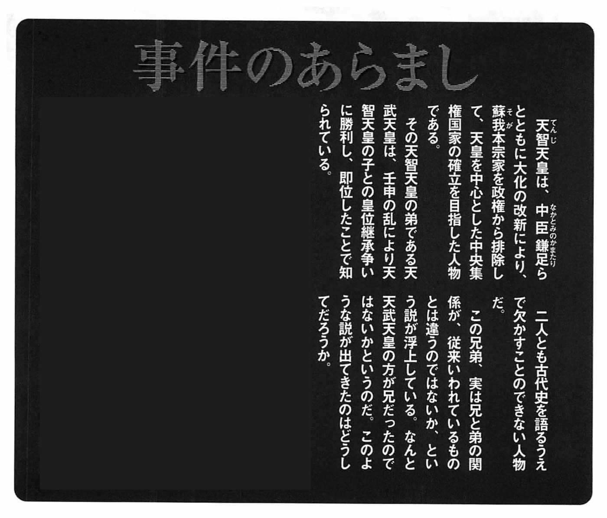
史書をたどることで浮かび上がる年齢の矛盾
天智天皇や天武天皇の年齢を調べるには、一般的に『日本書紀』が用いられている。『日本書紀』とは七二〇（養老四）年、日本で最初に 編 纂 された 勅 撰 の歴史書のことで、天智天皇や天武天皇の年齢を知るうえで、一番の手がかりになる史料である。
もっとも両天皇の生年月日をそのまま記しているわけではなく、天皇の年齢に関する記述をたよりに、計算して割り出すことになる。
それによると、天智天皇は六二六（推古三十四）年生まれという。ところが、天武天皇に関しては、『日本書紀』の記述だけでは生年が計算できない。天武天皇の生年を知ることのできる史料は鎌倉時代末期から室町時代初期にかけて編纂された『一代要記』だが、それによると天武天皇の生年は六二二（推古三十）年となっている。
なんと天武天皇の方が天智天皇よりも四歳年長だというのだ。
天智・天武天皇を巡る定説を覆す諸説
『一代要記』で天皇の生年を割り出すことができたのは、天武天皇の没年齢が六十五歳と書かれているからで、すでに明らかになっている没年にてらした計算により、天武天皇の方が天智天皇よりも四歳年上だということになったのだ。
この矛盾をもとにして、天智天皇と天武天皇はそもそも兄弟ですらなく、天武天皇は大陸の血を引いた 渡 来 人 であり、天智天皇の一族を倒して新しい王朝を創始したとする大胆な説もある。
天智天皇と天武天皇の年齢に矛盾が生じるこの記述に対して、多くの歴史家は、六十五歳の記述は五十六歳の写し間違いではないかという見解を示している。
ところが、年齢を 倒 錯 させるだけでこの矛盾を解決しようとする考えに疑問を投げかけている人々もいる。両天皇の年齢の矛盾を安易に解決せず、この年齢矛盾をもとに、従来の歴史を再検討してみる必要があるのではないかという声も挙がっているのだ。
もっとも『一代要記』の記述に限ってみると、天智天皇と天武天皇の兄弟関係に狂いは生じない。『一代要記』では天智天皇の生年が『日本書紀』での生年とズレをみせており、『一代要記』内に限って両天皇の年齢を比べると、天智天皇が天武天皇より三歳年長になっているからだ。
この点を根拠として、天智・天武天皇年齢矛盾説そのものの存在に妥当性がないとする人もいる。つまり、成立時期が違う『日本書紀』と『一代要記』の、しかも、年齢矛盾説を展開するうえで都合のいいところだけを比べるのがおかしいというのだ。
あまりにも有名な天武天皇の生年が、実は不明だったことに驚かされるが、古代史の領域では天皇ほどの人物でも情報が少ないということのあらわれだろう。
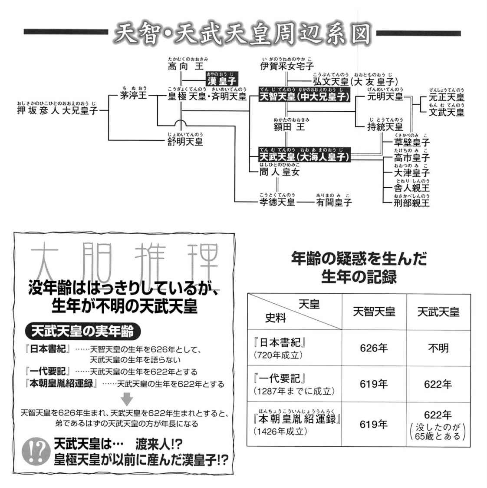
藤ノ木古墳被葬者論
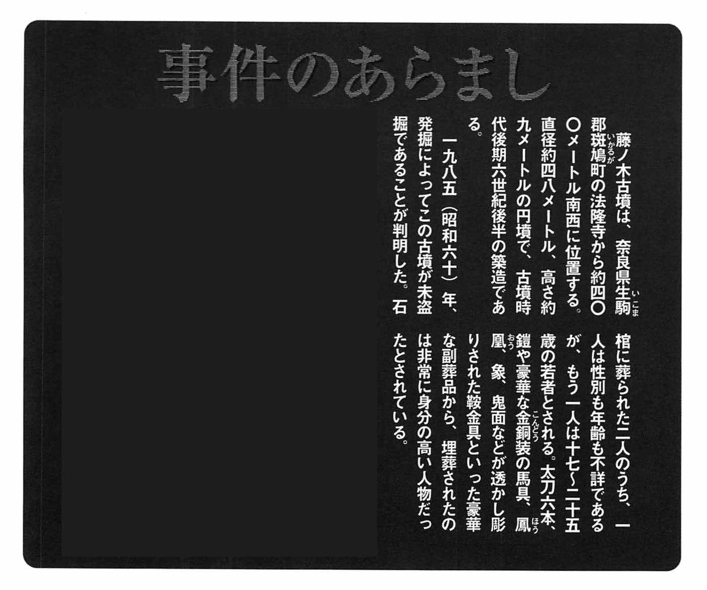
が
を呼ぶ藤ノ木古墳の様相
藤ノ木古墳に埋葬されているといわれるのは、 膳 臣 巴 提 便 、 蘇 我 稲 目 、 蘇 我 馬 子 、 物 部 尾 輿 から 崇 峻 天皇をはじめとする皇族説まで、様々である。
邦 光 史 郎 氏は、著書『藤ノ木古墳の謎』で、被葬者は誰かを探るには、五つのポイントがあると述べている。
一、古墳は六世紀後半につくられたもの。
二、一つの石棺に二体納められているが、そのうちの一体は二十歳前後の男性。
三、当時、一つの石棺に一緒に埋葬されるのは、配偶者か母子だった。そうでなくても、二体には、一緒に納められる必然性があったはず。
四、場所的に、聖徳太子とかかわりのある人物。
五、豪華な副葬品にふさわしい身分。
しかしながら、これだけでは人物を特定できない。
墓
誌
や銘の入った太刀が出てこなければ
のままであろうというのが、邦光氏の見解だ。
古墳の立地条件から判断される崇峻天皇説
一方、 高 田 良 信 氏は、崇峻天皇説を展開している。
その根拠として、地元民が古墳のことを「ミササキ」とよんでいたことを挙げた。「ミササキ」とは「陵」であり、これは天皇陵を意味する。一一六〇（永暦元）年には、墓守のためのお堂（ 宝 積 寺 という）があったこともわかっている。
崇峻天皇は五九二（崇峻五）年に暗殺されたから、六世紀後半という古墳自体の年代とも一致する。詳しい年齢はわかっていないが、暗殺されたとき、二十～三十歳とする意見もあり、これも遺体の年齢と一致する。
『日本書紀』には、「即日葬られる」とあるので、崇峻天皇は急いで埋葬されたはずだ。
石棺に二体が納められたのは、急いでいたために、専用の石棺を用意する時間がなかったためではないかという。
そうなると、残る
は、もう一つの遺体は誰なのかということだが、女性ならば崇峻の母の
小
姉
君
、男性ならば兄弟で、以前に蘇我馬子の手によって
殺
められた
穴
穂
部
皇子か
宅
部
皇子ではないかという。
この説では、藤ノ木古墳は、崇峻天皇のためにつくられた墓ではないとする。
暗殺されたため、急遽埋葬することになったので、母の（または兄弟の）墓だった藤ノ木古墳を至急開け、一緒に埋葬したのではないかということだ。
天皇であるならば、豪華な副葬品はもっともであるし、暗殺されたという最期ゆえに急いで埋葬することになったと考えると、一棺に二体葬られていた理由にもなるだろう。
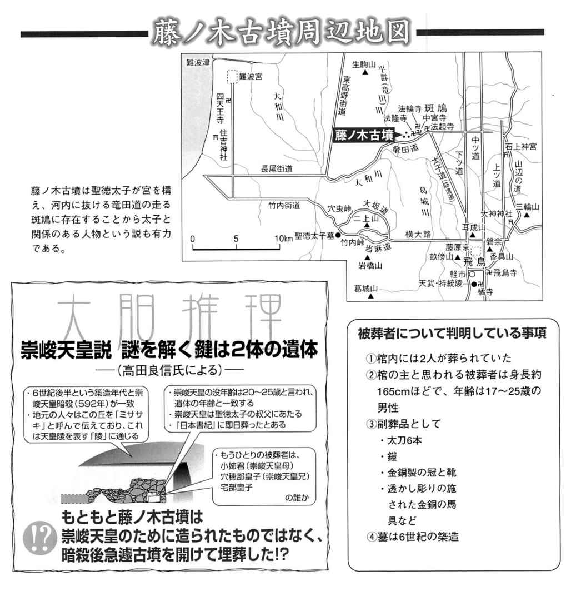
写楽実在論争
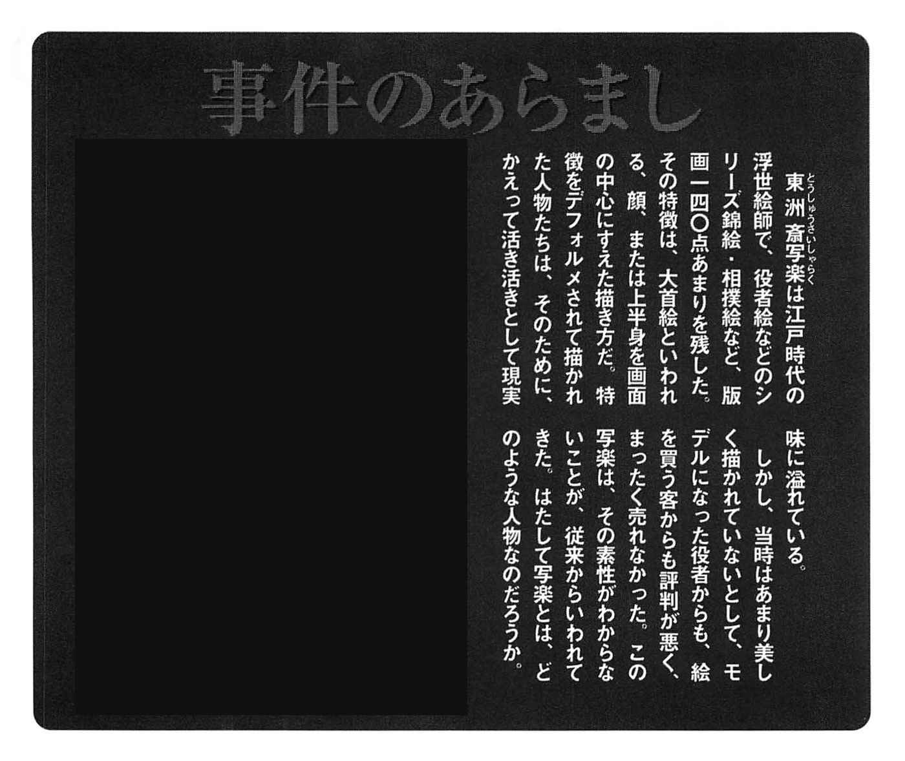
に包まれた伝説の絵師「写楽」
写楽は、生没年が不明である。絵の師匠が誰かも、どういう暮らしをしていたのかもわからない。
大 田 南 畝 が書いたとされる、当時の浮世絵師を紹介した『 浮 世 絵 類 考 』にも、写楽の項だけは、「歌舞伎役者の似顔絵を描いたが、あまりにもそっくりに書いてしまったため（人気がなく）、すぐに出版されなくなった」としか載っていない。
ほかの絵師については、名前や住所、生没年に加えて略伝まで載っているのにもかかわらずである。
また、当時の常識からして、忽然とあらわれた無名の絵師に、シリーズの錦絵を描かせるなどありえないといった指摘もある。
一般的には、まず 読 本 や絵本の挿絵からはじまる。
そこで腕を磨き、名前が売れてはじめて、一枚
 りの錦絵を担当させてもらえる。
りの錦絵を担当させてもらえる。
だから、シリーズ物となるとさらに浮世絵師の格が違う。
相当な売れっ子絵師でなくては、版元がシリーズ物を任せることはない。
写楽の浮世絵は、
蔦
屋
重
三
郎
の耕書堂が出した。耕書堂というと、絵師では
喜
多
川
歌
麿
や
 飾
北
斎
、作家では
山
東
京
伝
や
滝
沢
馬
琴
などをお抱えとしていたところだ。決して小さなところではない、むしろ版元の大手である。
飾
北
斎
、作家では
山
東
京
伝
や
滝
沢
馬
琴
などをお抱えとしていたところだ。決して小さなところではない、むしろ版元の大手である。
そんな耕書堂が、なぜ無名の写楽にシリーズ物の錦絵を描かせたのか、通常では考えられない
大
抜
 である。
である。
写楽の作品は一四〇点あまりだが、それらの作品はわずか十か月の間に出版されている。二日に一枚の割合である。飛ぶように売れたのならまだしも、写楽の作品はまったく人気がなかった。それなのに、蔦屋はなぜ次々と間をおかずに出版したのか、写楽に相当入れ込んでいたとしか考えられないというのだ。
写楽の正体として挙げられた人々
こうした不可解な点が多いため、写楽は、いったいどのような素性の人物だったのかといった議論がつづいている。
上記のことから、写楽がまったく無名の絵師であったとは考えにくく、著名な絵師が、十か月間だけ「写楽」という名で絵を描いたのではないかといわれている。
その候補者は絵師だけではなく、作家や役者など、約四〇人にも及ぶ。
主なものは、喜多川歌麿、
飾北斎、
円
山
応
挙
、
司
馬
江
漢
、作家の山東京伝、
十
返
舎
一
九
などがおり、さらには版元の蔦屋重三郎ではないかともいわれ、江戸八丁堀に住んでいた阿波国の能役者で、俗称・
斎
藤
十
郎
兵
衛
ではないかとする説もある。
ますます
は深まるばかりなのである。
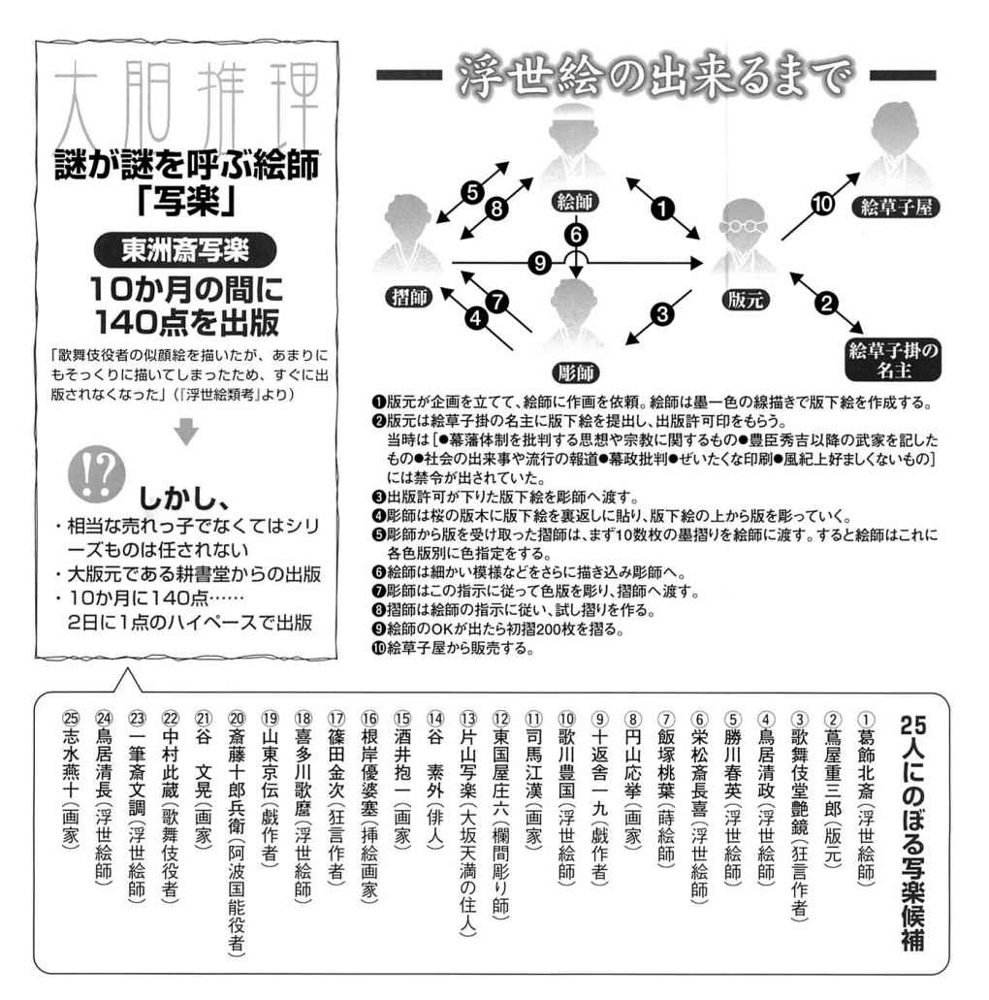
孝明天皇急死事件
あまりにも都合がよい天皇崩御 アーネスト・サトウの滞在記がほのめかす暗殺説
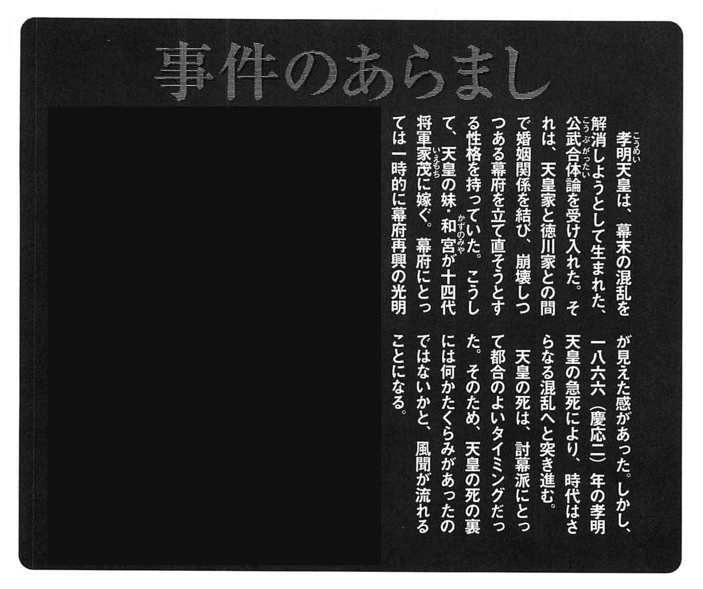
暗殺説が生まれるに至った背景
孝明天皇の死因は、公的には病死となっている。突然の激しい吐き気や下痢、さらには吐血に加えて、顔に紫の斑点があらわれたと記録されているため、おそらく 疱 瘡 だったのだろうといわれている。三十六歳という若さでの急死だった。
この一八六六年は 長同盟の成立した年。
攘
夷
派、開国派、討幕派、尊皇派など、それぞれの藩が思惑を秘めて離合集散してきたなかで、時代を大きく動かすことになったのが、この
長同盟だった。
長同盟の成立した年。
攘
夷
派、開国派、討幕派、尊皇派など、それぞれの藩が思惑を秘めて離合集散してきたなかで、時代を大きく動かすことになったのが、この
長同盟だった。
それゆえに、公武合体で融和策をとる孝明天皇は、時代の流れを止める元凶だと考えた陣営の手によって毒殺されたとささやかれることになった。実際、この頃日本に滞在していたイギリスの外交官アーネスト・サトウの残した日本滞在記に、「ある日本人に帝が毒殺されたと教えられた」と記されている。
確かに朝廷内の実力者
岩
倉
具
視
、
摩藩の
大
久
保
利
通
らの討幕派を中心に、開国維新を目指す人々にとって、孝明天皇が目指す徳川幕府との協調は、彼らの行動に制限を加えるものでしかなかっただろう。
孝明天皇没後わずか一年で徳川幕府が倒れ、「王政復古の大号令」が下された事実が、この見方を裏付けるものだ。
しかし、これらはあくまで状況証拠から判断したものにすぎない。宮内庁に残る記録でも、朝廷が発表した「病死」は、今なお公的なものである。
はるかな時を隔てて 解明されつつある疑惑
ただ、第二次世界大戦後になって、医学的見地から孝明天皇の死因に光があてられることになり、再び毒殺説が注目を集める時代が来る。
天皇の発病は十二月の半ば。十日ほどで快方に向かったが、二十五日の夜になって容体が急変、 崩 御 したと記した主治医の記録が見つかったからである。
この容体急変の原因を、天皇の症状からみてヒ素中毒に求める意見も生まれている。
さらに、犯人は毒を盛ることのできた朝廷内の高官に違いないとするところまで論は進んだ。
前出のアーネスト・サトウの滞在記は、彼に真相を打ち明けた人物が、「攘夷思想の持ち主である孝明天皇の在位が長引くと、西欧諸国との戦争は避けられない。今後、幕府が崩壊した場合に、朝廷が戦争の 矢 面 に立つ可能性を恐れた人々によって暗殺された」と語っていたと綴る。
医学が進歩していなかった時代ゆえに、治癒したと思っていた疱瘡が再発・急変したという病死の可能性を捨てきれるものではないが、アーネスト・サトウの滞在記が戦後まで禁書とされていたのも、また事実である。
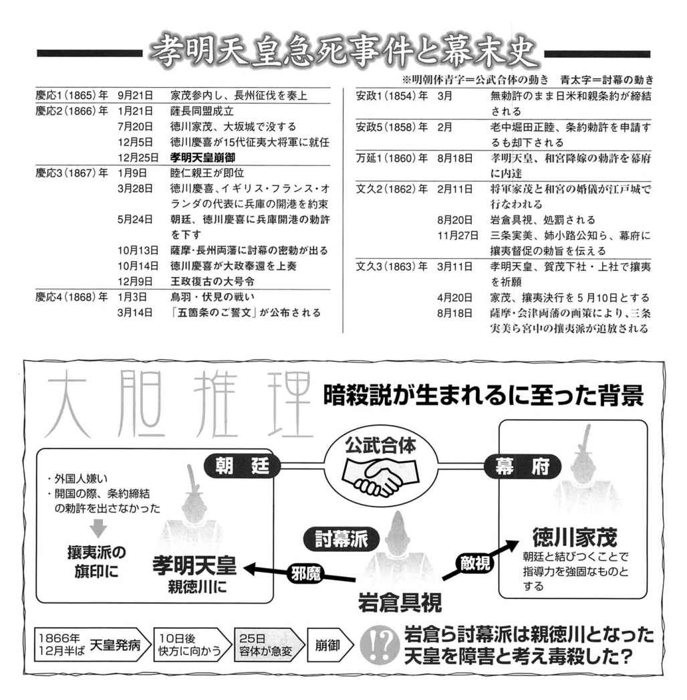
ええじゃないかの大流行
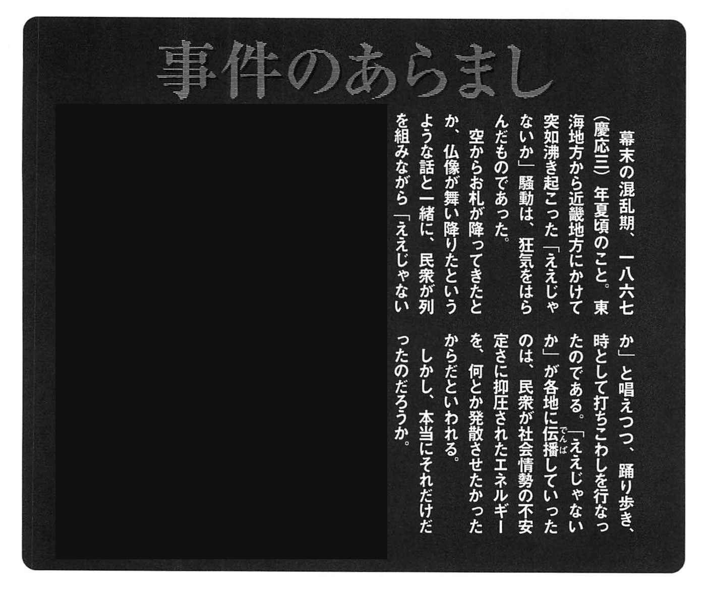
東海地方で発生した民衆ヒステリー
白粉 や墨を顔に塗りたくり、 扮 装 も思い思いの人々が踊り歩く列が、延々とつづく。このような「ええじゃないか」騒動が、どうやってはじまったのか、また、火がついたように各地へ広まっていった理由は、いまだに不明である。
最初は伊勢神宮のお札が空から降ってきたのを 吉 兆 として、まず三河国に起こったものだと、わずかに伝わるだけだ。騒動は、三河国をはじめ、尾張国・ 遠 江 国など東海道の宿場町から、あっという間に全国へと波及していった。その伝播の速度は相当なもので、関東から中国・四国まで、およそ三十か国以上で確認されている。数十年おきに発生する「お 鍬 祭 」と六十年周期で起きる「おかげ参り」が合体したともいわれるが、定かではない。
この騒ぎの 蔓 延 の理由を、落ち着かない社会情勢に、不満や不安を抱えた民衆の、ストレス発散だったと片付けるのは簡単だ。しかし、この騒ぎとちょうど軌を一にするように討幕運動が加速していったことを無視することはできない。
「ええじゃないか」の掛け声のあいの手は、「これをくれてもええじゃないか」とか「これを飲んでもええじゃないか」とかいうものだったという。本来はお札が降るという吉兆を祝うものだったはずが、豪商や地主宅への打ちこわし的色あいを持つようにもなっていた。
騒動の陰で着々と進んだ討幕計画
しかし、こうした民衆の熱狂、騒ぎは討幕運動に東奔西走する志士たちにとって都合のいいものだったという見方もある。民衆の騒ぎの陰に隠れて行動することができ、自分たちが起こした騒ぎも隠 しようと思えば可能だったはずだからである。
しようと思えば可能だったはずだからである。
そこで、最初は本当に民衆の間で起こったお祭り騒ぎにすぎなかったものを、あえて討幕派が大きな騒ぎに仕立てあげたのではないかとする説も唱えられることになった。また、「ええじゃないか」の
囃
し言葉の間に、討幕勢力である
長を
礼
賛
する言葉も入っていたともいわれる。
「ええじゃないか」が繰り広げられているさなか、土佐藩で幕府に大政奉還を進言する動きが生まれ、秋には大政奉還が、そして年末には王政復古の大号令が実現されているのだ。
年が明けて 鳥 羽 ・ 伏 見 の戦いをきっかけに官軍が東征をはじめると、民衆は時代の変革を感じ取ったのか、あれだけの大騒ぎもいつの間にかおさまっていた。
「ええじゃないか」と討幕の動き、はたして両者の間に人為的な関係があるのか、その確証はない。しかし、時代のうねりを「ええじゃないか」が示し、討幕運動がそれを体現したとはいえよう。
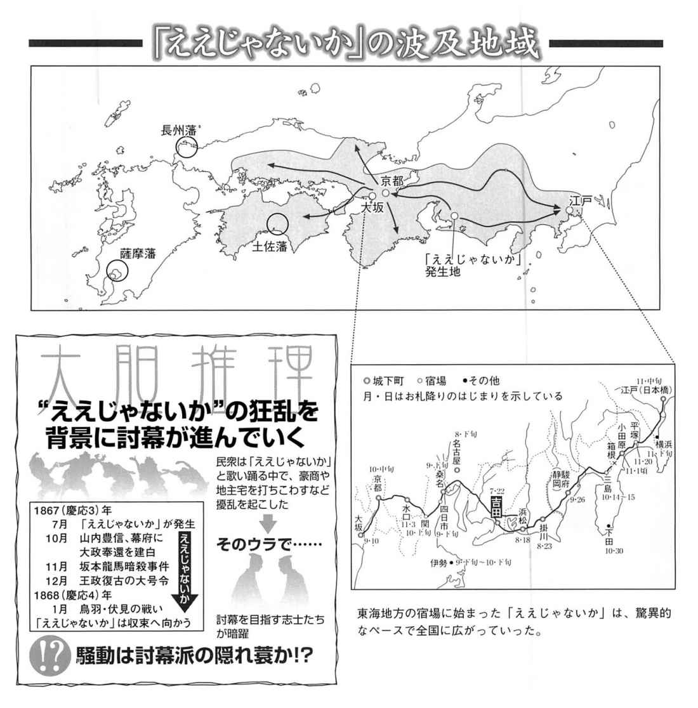

安徳天皇生存説
安徳天皇の子孫が現代にいた？
事件のあらまし
「平氏にあらざれば人にあらず」と栄華を誇った平氏は、一一八五（文治元）年、現在の下関市東方の壇ノ浦で行なわれた海戦で源氏に滅ぼされた。負け戦と覚悟した 二 位 尼 （平清盛の妻・時子）に抱かれ、 安 徳 天皇は入水した。
安徳天皇とは、高倉天皇の第一皇子。母は、平清盛の娘・ 建 礼 門 院 徳 子 である。このとき、安徳天皇はわずか八歳だった。この悲劇的最期は、『平家物語』に詳しく記述され、多くの人の涙を誘った。
安徳天皇は、悲劇の死を遂げたとされる一方で、生存説も多い。安徳天皇の墓とされるものだけでも、全国各地に二〇か所以上あることからも、その伝説の多さがわかる。とはいえ、その生存説に信憑性はあるのだろうか。
安徳天皇はどこへ逃げ延びたのか
生存説では、入水自殺したのは、安徳天皇の身代わりであるとする。その根拠はどこにあるのか。
『平家物語』によると、入水前の安徳天皇は、「黒髪がふさふさとしていて、背にかかっておいでになる」とある。当時、男子の髪型は、真ん中から左右に分けて、耳のあたりで束ねるのが一般的。黒髪が背にかかっているという様子は、女子を連想させる。
このことより、安徳天皇は入水せず、身代わりとして、平時房の七歳の娘や、平有盛の娘が入水したとする説もある。
では、生存した安徳天皇のその後は、どのようなものだったのだろうか。
もっとも知られているのが、 鬼 界 ケ 島 説である。
鬼界ケ島とは、硫黄島（現・鹿児島県三島村）のことで、僧の 俊 寛 が配流された地としても知られている。逃げ延びた安徳天皇一行は、壇ノ浦の戦いから二年後に、鬼界ケ島の長浜浦にたどり着いた。
安徳天皇は鬼界ケ島に住み着き、そこで
 匣
局
という女性との間に子供をもうけた。一二二一（承久三）年のことである。
匣
局
という女性との間に子供をもうけた。一二二一（承久三）年のことである。
この子を隆盛親王といった。鬼界ケ島では、隆盛親王を祖先とした長浜家がある。長浜家の直系の子孫は、島の住民から「天皇さん」とよばれていると話題になった。一九五〇（昭和二十五）年頃のことで、マスコミはこの人を「長浜天皇」という風によんでいた。この人は、安徳天皇より三十四代目の末裔にあたると自称している。長浜家には、安徳天皇が鬼界ケ島にたどり着くまでの遍歴が記されている『硫黄大権現宮御本縁』という漢文で書かれた古文書まで伝えられている。
安徳天皇は、この地で六十四歳の生涯を閉じたとも、六十八歳まで生きたとも伝えられるが、伝説上では長生きしたことは確かだろう。
この硫黄島では、安徳天皇の墓とされるものだけではなく、隆盛親王、
匣局、平
資盛
などの近親者や家来の墓とされるものまである。
このほかにも、安徳天皇の末裔を名乗る者は多い。熊本県の「法の天皇」がその一人だ。この人は半纏の襟に「法の天皇」という文字を染め抜いたことからそうよばれた。高知県には「横倉天皇」と名乗る人物もいた。
安徳天皇はどこにたどり着き、どこで生きたのか。前述した説以外にも、多くの地に安徳天皇にまつわる話があり、定説はない。
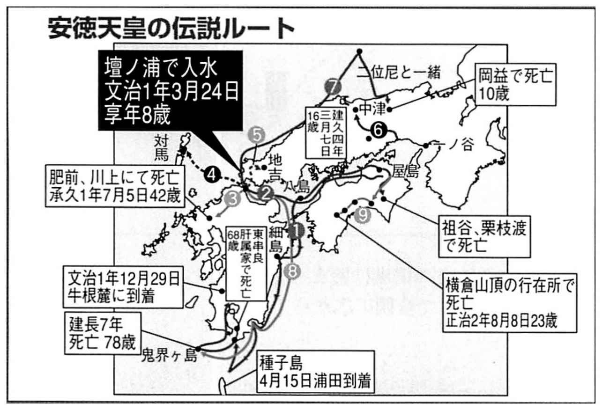
倭の五王実在説
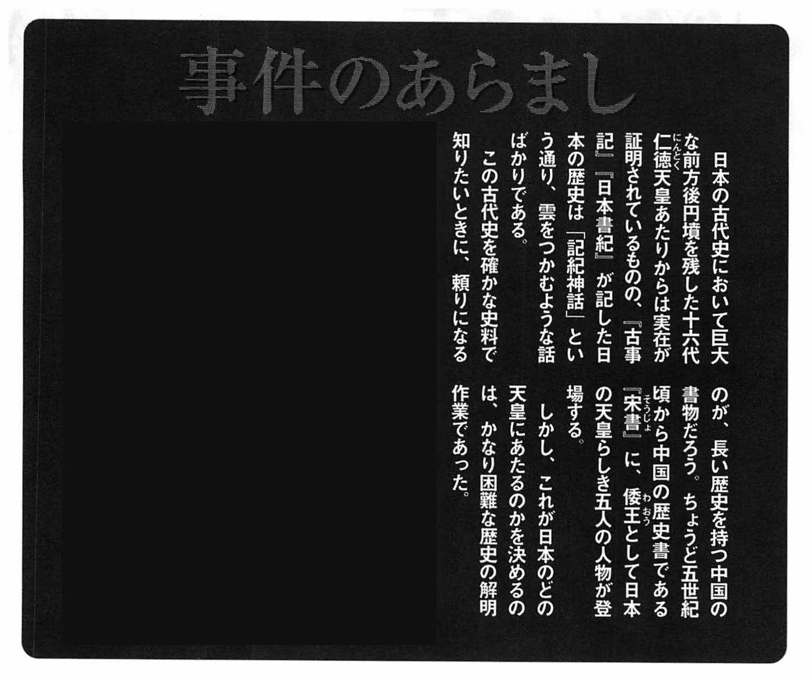
中国の史書に登場する五王の系譜
『宋書』や『 梁 書 』といった中国南朝の史料に残されている五人の名前は、「 讚 （賛）・ 珍 ・ 済 ・ 興 ・ 武 」である。日本の五世紀について日本側の資料は、史書としては何かと疑問符のつく『古事記』や『日本書紀』に頼るほかなく、当時の日本を解明する上で、中国の史料は貴重なものとなっている。
あわせて「 倭 の 五 王 」とよび習わされている彼らの中国との外交で、年代のはっきりしているものがいくつかある。
まず「讚」が、中国の南朝の宋へ朝貢したのが四一三年というのが、五王のなかではもっとも古い記録だ。これは、中国のほかの歴史書である『 晋 書 』『 南 史 』にもって書き記されている。
この「讚」の弟にあたるのが「珍」だと『宋書』は教えてくれる。同じく「済」の世子が「興」で、その弟が「武」だともわかっている。これらを、日本で手に入る史料に対照させてみると、埼玉県行田市の稲荷山古墳から出土した鉄剣が一番の手がかりになる存在のようだ。
鉄剣の銘文が浮き彫りにした古代大王の姿
鉄剣には銘文が刻まれていて、もちろんすべて漢字だが、漢字で五十音表記した古代の規則をもとに読み下すと「ワカタケル」という名を読み取ることができるのである。
しかも銘文ではワカタケルは大王だとしている。大王とは、つまりオオキミ、天皇のことだ。
銘文はさらに、「天下を左治」するとつづけている。
これは鉄剣をつくらせた人物が、天下、すなわち大王を助ける、という意味である。このため、中国の史料のいう倭王を天皇の前身と考えることは、間違いではないとされている。
鉄剣の銘文は、最初に 辛 亥 の年にこれを記すとしているが、これはおそらく西暦四七一年のことだ。『宋書』は「興」が没し、その跡を継いだ「武」が四七八年に使者を送ってきたとしている。
ということは、日本でワカタケルと記された天皇が「武」王だとすることに矛盾はない。
そして『古事記』『日本書紀』から日本の天皇の系譜をたどると、 雄 略 天皇の 諱 をオホハツセワカタケルノミコトと記述しているのと、見事に符合する。
ここから倭王「武」を雄略天皇として、「興」は兄の 安 康 天皇、「済」が雄略天皇の父である 允 恭 天皇と系譜をさかのぼるのはたやすい。しかし、「済」とその前に朝貢した倭王「讚」「珍」との血縁関係は明らかではない。
そのため、「讚」については 応 神 天皇、仁徳天皇、 履 中 天皇のいずれかに、「珍」については仁徳天皇か 反 正 天皇のいずれかに、それぞれ比定する説があり、五王すべての解明には至っていない。
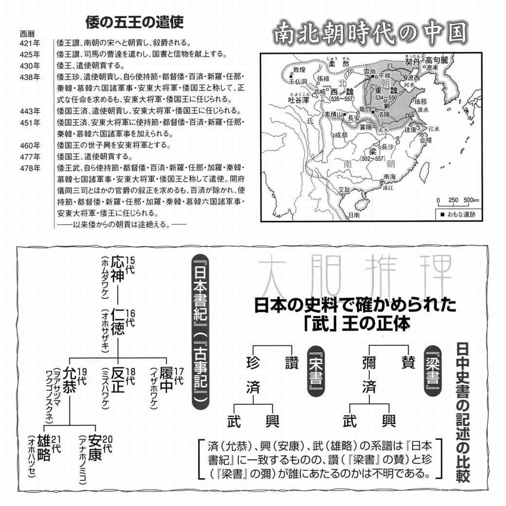
聖徳太子架空人物説
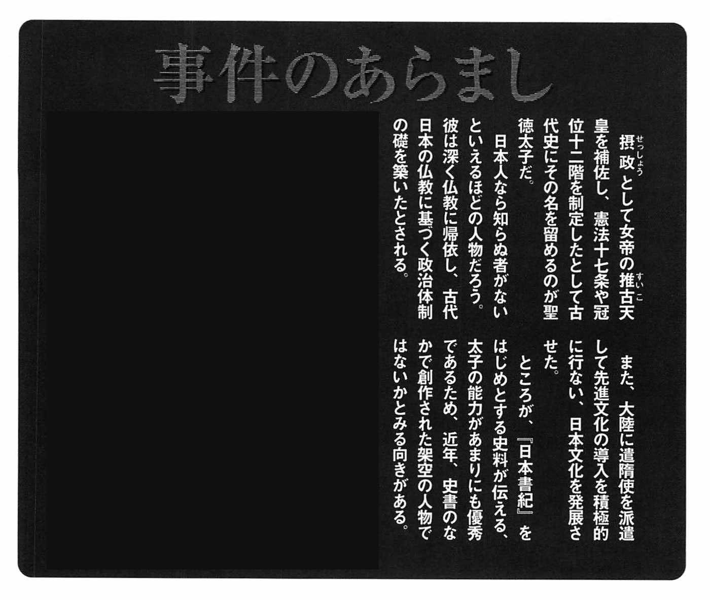
人間離れした聖徳太子の功績の数々
聖徳太子の姿といえば、ヒゲをたくわえ、 笏 を手にした 束 帯 姿が定番。肖像画が伝わることに加え、必ず歴史の教科書に登場するのだから、誰もが太子を実在の人物だと信じる。しかし、彼は架空の人物ではないかという説も根強い。
もともと聖徳太子の人物像は『日本書紀』に記されているものだが、これは彼の没後百年もたってから著された書物だから、書き手の主観や当時の政治的状況が反映されていることは否定できない。
なかでも聖徳太子の誕生にまつわる伝説がキリストや
釈
 の誕生伝説と似ている点など、外国の聖人を
模
倣
した記述と疑われる箇所も散見する。さらに、長じてからは一度に一〇人の訴えを聞くことができたともいわれており、もはや人間ワザではない。
の誕生伝説と似ている点など、外国の聖人を
模
倣
した記述と疑われる箇所も散見する。さらに、長じてからは一度に一〇人の訴えを聞くことができたともいわれており、もはや人間ワザではない。
また、太子が筆を執ったとされる『 三 経 義 疏 』においても、そのうちの一つ、『 勝 鬘 経 義疏』の内容が中国で発見された 敦 煌 文書に酷似していることから、偽書とする説もある。後世の書を、太子の作と伝えることで、より偉大さを強調しようと意図したというのだ。
しかし、これらの事績の伝えについていえば、太子の偉大さを伝えたいがため、過剰な表現になったと善意の解釈も可能だ。太子の能力が人間離れしていたというだけで、存在自体を否定することはできない。一方、『三経義疏』においては、法隆寺遺物で、現在は宮内庁が所蔵する『三経』（ 法 華 経 ・ 維 摩 経 ・勝鬘経）のうちの一つ『 法 華 義疏』は、書体や文体から七世紀のものに間違いないとされ、筆者は聖徳太子以外に考えられないとされているのも事実だ。
日中の史書の記述に存在する矛盾点
さらに惑わされるのが、遣隋使の派遣という事実への疑問である。太子の手によるとされる「日 出 る処の天子......」ではじまる有名な外交文書は、その差出人の名前が隋の史書に残されているのみで、日本国内には記録がないために、派遣の事実への疑惑が生まれることになった。
『 隋 書 』において、使節は日本の王アメノタリシヒコ（阿毎多利思比孤）からのものと書かれている。日本では名前にヒコがつくのは男性に限られるから、文書が出されたのは女帝だった推古天皇の時代ではなかったことになる。つまり、聖徳太子が記した文書ではないのではないかと考えられるのだ。
確かに『日本書紀』にはアメノタリシヒコに該当する天皇の記述はない。けれども、推古天皇十五年に聖徳太子が隋へ使節を派遣したことは記されており、これは西暦六〇七年にあたるから、『隋書』にある日本からの使者渡来の年の記述とも一致する。
はたしてこれまで信じられてきた伝説の聖人の存在は、覆されることとなるのだろうか。
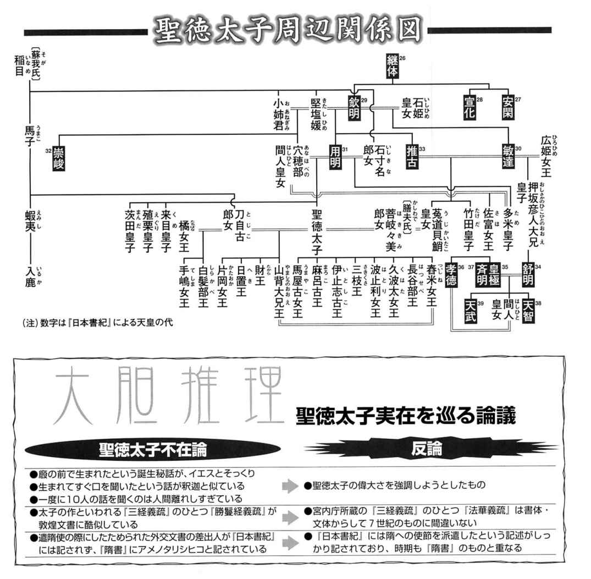
『隋書』の記述の謎
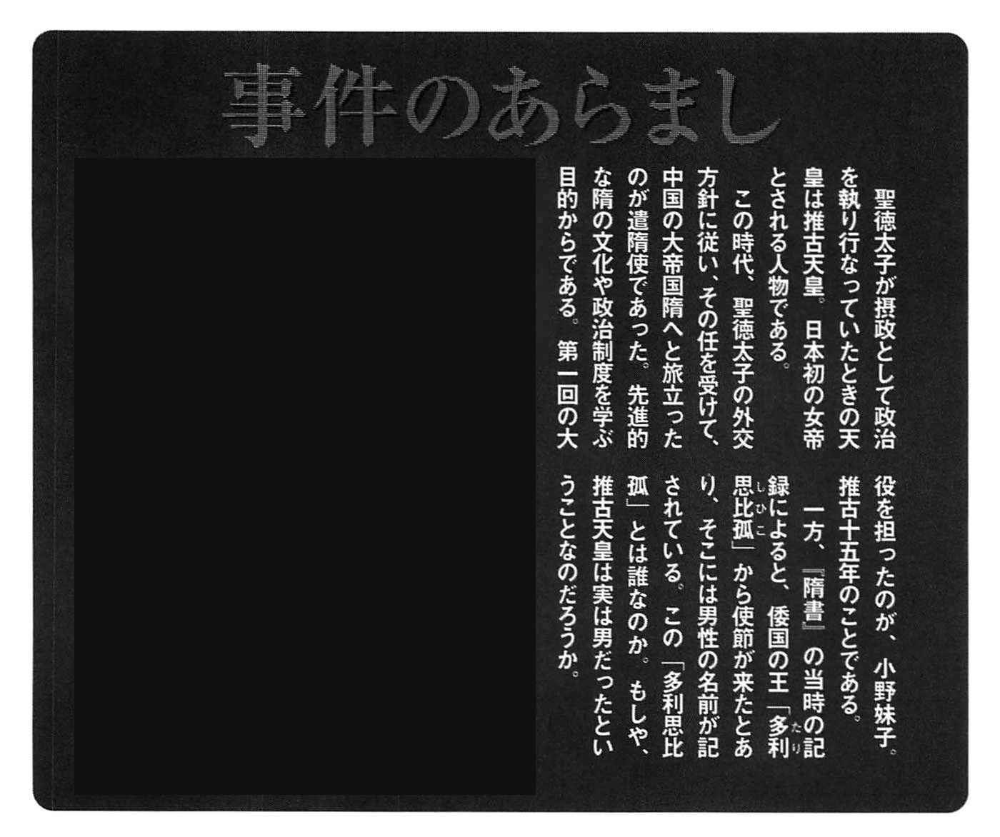
天皇と摂政を指名し 絶大な権力を誇った蘇我馬子
隋の史書『隋書』「 東 夷 伝 」倭国の条によると、倭国（日本）の王は、姓を 阿 毎 、名を多利思比孤といった。后と子供がおり、 後 宮 には三〇〇人に及ぶ女性がいたと記されている。どう考えても、これは女性の天皇の記述ではない。
しかし、推古天皇が女性なのは疑いようがない。そうなると、この多利思比孤という名の王の素性が気になるところである。
一説によると、それは蘇我馬子といわれる。崇峻天皇暗殺ののち、推古天皇が即位するのであるが、実権は馬子が握っていた。推古天皇や聖徳太子は、あくまで馬子の意向によって天皇や摂政についたのであり、真の実力者は馬子だったというのである。
この頃、外来の神である仏教が日本にもたらされている。推古天皇も聖徳太子も熱心な仏教徒だったが、外来の神の輸入は、もともと 百 済 と関係の深い馬子ならではの施策だったとも考えられる。
あなどれない太子の洞察力と権力
これに対して、「多利思比孤」は、聖徳太子であるとの説もある。聖徳太子といえば、小野妹子に渡した国書に「日出る処の天子、書を日没する処の天子に致す。 恙 なきや」と記して、大国・隋の 煬 帝 を非常に怒らせたことで有名だ。
常識としては、大国の隋に対して、このような国書を出すとは無礼である。もっとも煬帝の怒りは買ったが、隋に攻め滅ぼされることもなく、無事に国交が開けた背景には、当時の東アジア情勢がある。
隋の煬帝は朝鮮半島北部に勢力を張る 高 句 麗 を狙っていて、日本は侵略の候補に挙がっていなかった。
その高句麗の背後にいる日本と手が組めれば形勢は有利になるし、逆に高句麗と日本が結んでしまっては非常に厄介なこととなる。
このような微妙な各国間の情勢を聖徳太子は熟知していたからこそ、わざとこうした表現をとったのだ。
さて、このことは何を意味するのだろうか。つまり、隋に対する日本の立場は、聖徳太子の考え一つで決定されていたわけである。
こうした状況から考えても、やはりここでいう倭の王は聖徳太子とするのがふさわしいというのである。
聖徳太子は仏教に傾倒しており、寺の建立にも力を注いだ。壮大な寺を建立できるほどの力があったわけである。また、外来の神である仏教が広まったのも、聖徳太子の指導力があったからこそである。聖徳太子が有していた権力の大きさから考えると、「多利思比孤＝聖徳太子」と考えても無理はないと思われる。
さて、馬子と聖徳太子、どちらが倭国王多利思比孤の正体なのだろうか。
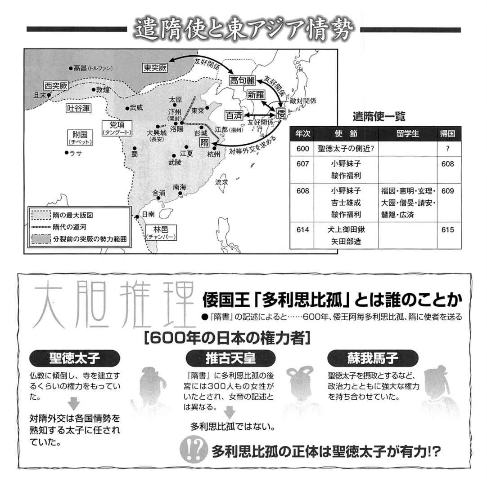
関白・秀次切腹事件
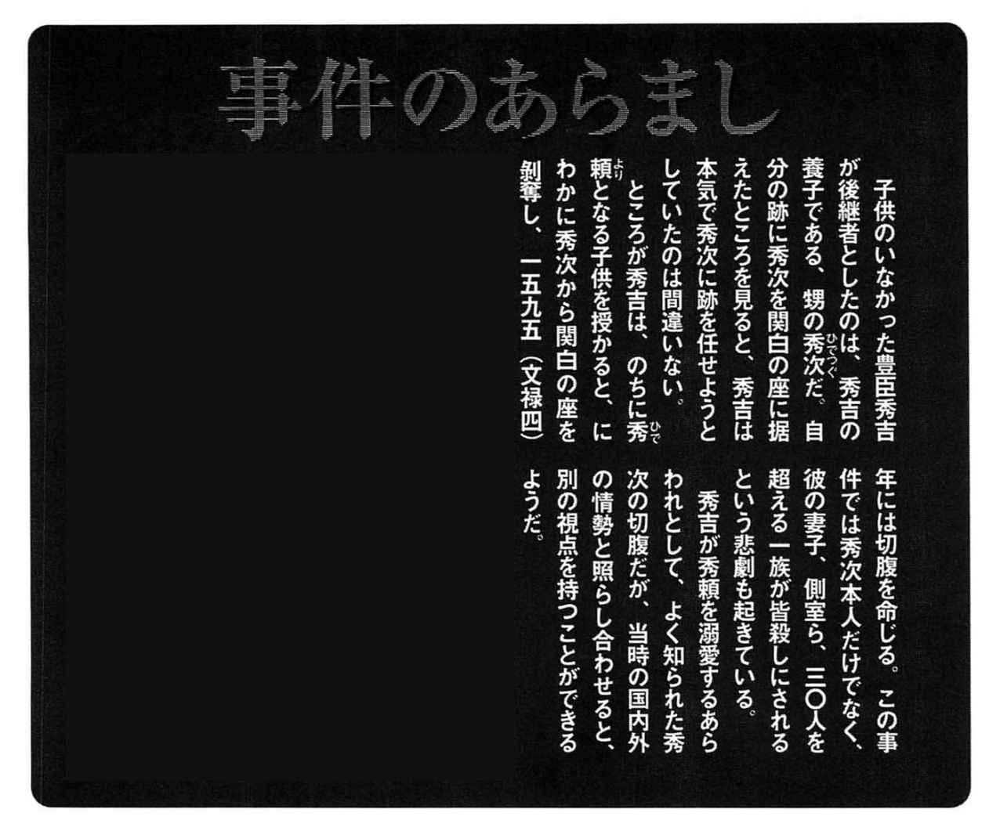
朝鮮出兵が秀次を死に追いやった
秀吉が秀次の首を京都 三 条 河 原 にさらし、その首の前で京都市中を引き廻した一族の首をはねるという残虐な行為に及んだ理由は、秀次の 乱 行 を憎んだためとされている。
秀次の乱行は、秀吉の側室・ 淀 殿 に子（拾丸・のちの秀頼）が生まれたため、秀次が自分の地位がおびやかされる不安に駆られたのが原因だという。確かに、彼には 奇 矯 な振る舞いが増え、刀の試し斬り、鉄砲の稽古といった名目で多くの人を殺していたと証言する史料がある。
しかし、これだけであれば秀次本人を処罰するだけでことは済み、一族を根絶やしにするには及ばないと考える歴史学者は少なくない。
当時、来日していたイエズス会の宣教師ルイス・フロイスの書き残したものによると、秀次は謙虚で分別のある思慮深い若者だと評価されている。冷静な外国人の目に映った秀次像からは、晩年の暴挙は想像しがたいため、乱行そのものが存在しなかったのではないかとする説が唱えられる場合もある。
これまでは、秀吉が秀次の一族抹殺にまで及んだ理由は、わが子を溺愛するあまり、秀頼以外で後継者となりうる可能性のある、秀次の血を受け継いだ者を皆殺しにしたかったからだとされていた。
しかし、これなら秀次を 高 野 山 に幽閉してから、わずか数日後に切腹させる必要はない。
淀殿の生んだ子はまだ幼く、秀頼が十分に成長するまでのつなぎとして秀次に出番を与えた方が、豊臣家政権はより安泰だと考えられるからだ。
さらに、淀殿の子と秀次の娘を結婚させようという計画もあったというから、淀殿の子を後継者にするにしても、秀次からのスムーズな政権移譲が考えられていたといえよう。
外征と内政の分担が生んだ悲劇
そこで浮上したのが、秀吉の大陸進出計画の影響である。
秀吉が朝鮮出兵の指揮官として九州に赴いている間、その留守を預かったのが秀次だった。このとき、外征は秀吉、内政は秀次という役割分担が自然に生まれたと考えられる。
当時の 後 陽 成 天皇は外征に反対の立場をとっており、それを無視して出兵した秀吉の声望は低くなっていた。相対的に、公家との交流もあった秀次の声望は日増しにあがっていく。
また、諸大名のなかに、内政は秀次に一任されているという既成事実が浸透してしまい、権力の二極分裂を恐れた秀吉が、秀次とその一族抹殺の道をとったとも考えることができる。
いずれにせよ、秀次の死は自らの行ないのせいではなく、秀吉の考えによったものだとはいえよう。
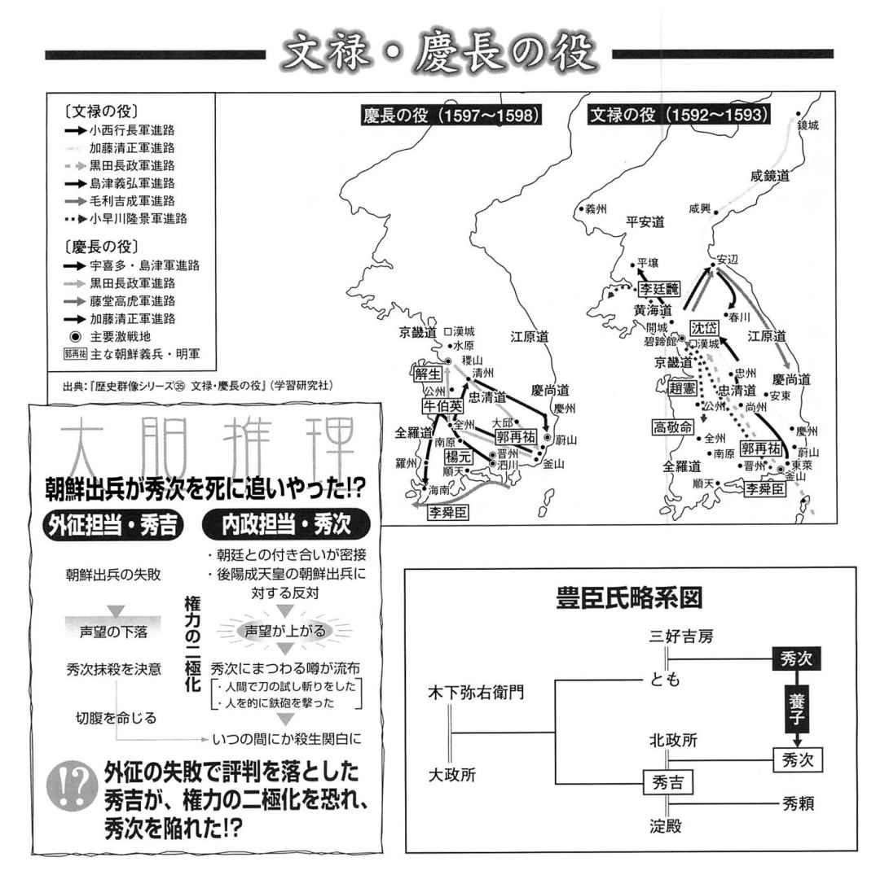
大久保長安の懲罰
あの世で罰を受けている!? 死してから権力闘争に巻き込まれた男
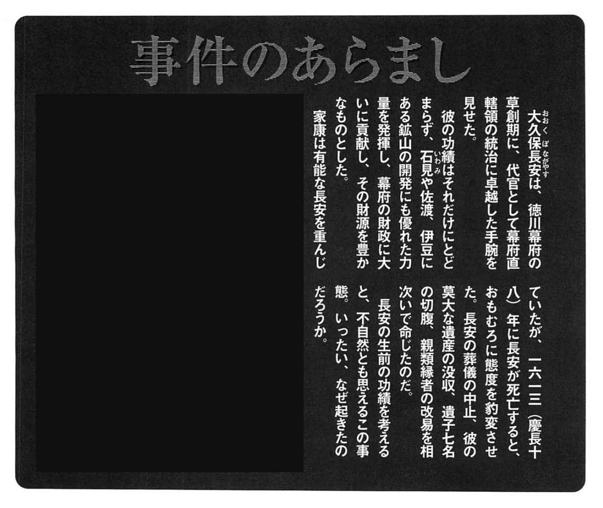
巧みなそろばん勘定で世渡りしたツケ
大久保長安は 甲 斐 武田家の家臣であったが、一五八二（天正十）年の武田家滅亡後、徳川家に召し出された。徳川家では 大 久 保 忠 隣 の配下として職務につく。その有能さを忠隣に認められた長安は大久保の姓を与えられ、忠隣の寵愛を受けていた。
徳川幕府が成立すると家康の側近になり、卓越した行政手腕を遺憾なく発揮する。従五位下石見守に 叙 任 された長安は、幕府奉行衆に加えられた。その後の彼は、自ら頻繁に 駿 府 と各支配地の間を往来し、鉱山町の建設、街道の整備と宿駅制度の確立などの業績を残した。そして、一六一三（慶長十八）年、駿府で没している。
幕府にとって欠かせない人材として生涯をまっとうした長安だが、その死後、彼の一族が受けた処遇は実に不可解であった。何ゆえ長安は死後に罰せられなければならなかったのだろうか。
長安が死後に巻き込まれた徳川家臣の権力闘争
彼の死後に起きた一連の懲罰は、生前の長安が不正に蓄財に励んだことが明らかになったため、というのが通説になっているが、真相は定かではない。
そのため、彼が死後に罰せられた理由については、様々な憶測が飛び交っている。
そのなかでとりわけ有力とされているのが、彼の庇護者である大久保忠隣と、家康の知恵袋といわれた 本 多 正 信 の権力争いに巻き込まれたのでは、とする説だ。
当時、幕閣では大久保忠隣と本多正信が勢力を二分する形で、政治の中枢に君臨していた。
ところが、忠隣と正信は反目しあっており、互いの失脚を望んでいたという。
この事実から今回の事件は、本多正信による大久保忠隣の弱体化を狙った謀略ではないかという推測が成り立つ。正信は、忠隣と縁の深い大久保長安一派を 粛 清 することで、自派閥の勢力を伸ばし、ライバル忠隣を追い落とそうとしたというのだ。こののち、大久保忠隣も失脚の憂き目にあっているが、それも本多正信の策略と考えれば、両事件は一本の線でつながる。
本多正信による大久保忠隣派粛清の第一段階として、長安の罪が問われたのだと唱えるこの説を支持する声は大きい。
また、大久保長安がその財力を背景に、徳川幕府に対して 謀 反 をたくらんでいたために罰せられたのだとする説もある。この説では、長安の巨額な蓄財と、代官として幕府直轄領に大きな影響力を持っていたことが、幕府に脅威を与えたと考え、それが原因で罰せられたのだろうとしている。
大久保長安一族の失脚は江戸時代初期における
の一つだ。その真相が明らかになる日は、いつか来るのだろうか。
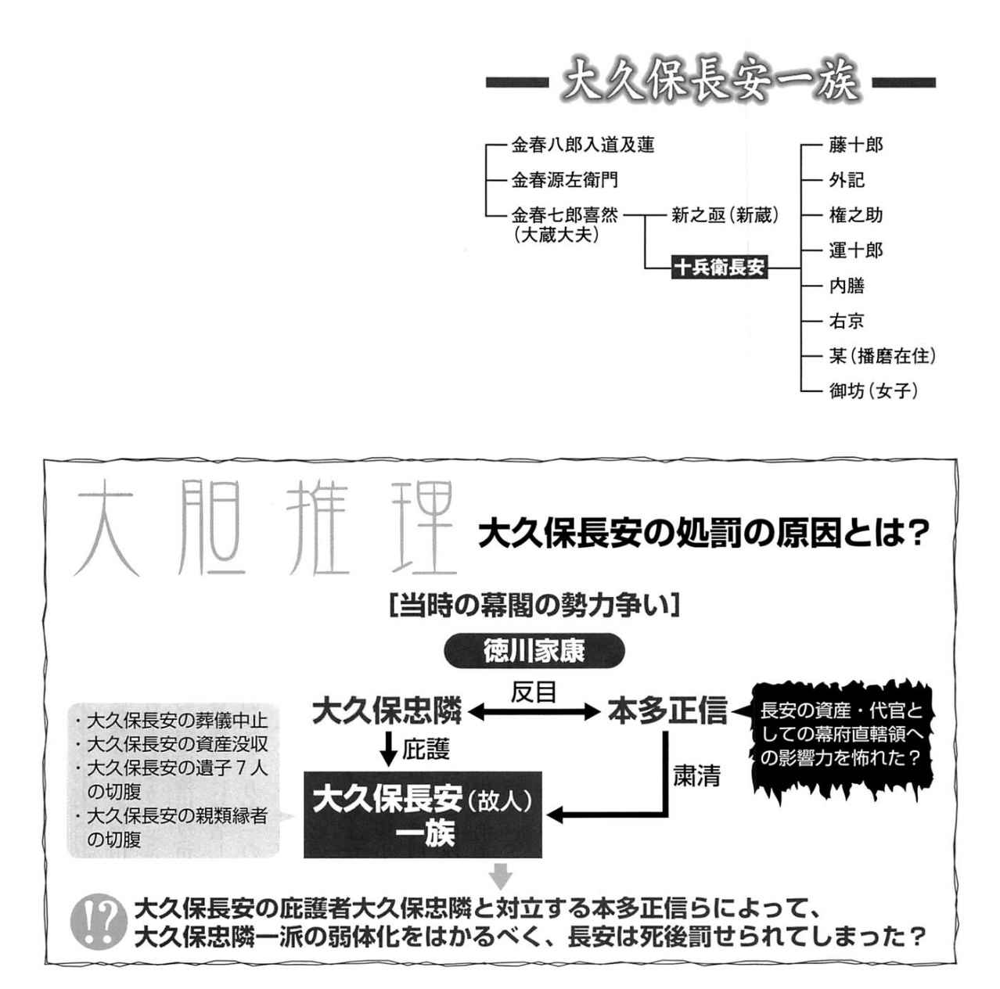
徳川埋蔵金伝説
 れる埋蔵金 将軍家の御用金はどこへ消えたのか？
れる埋蔵金 将軍家の御用金はどこへ消えたのか？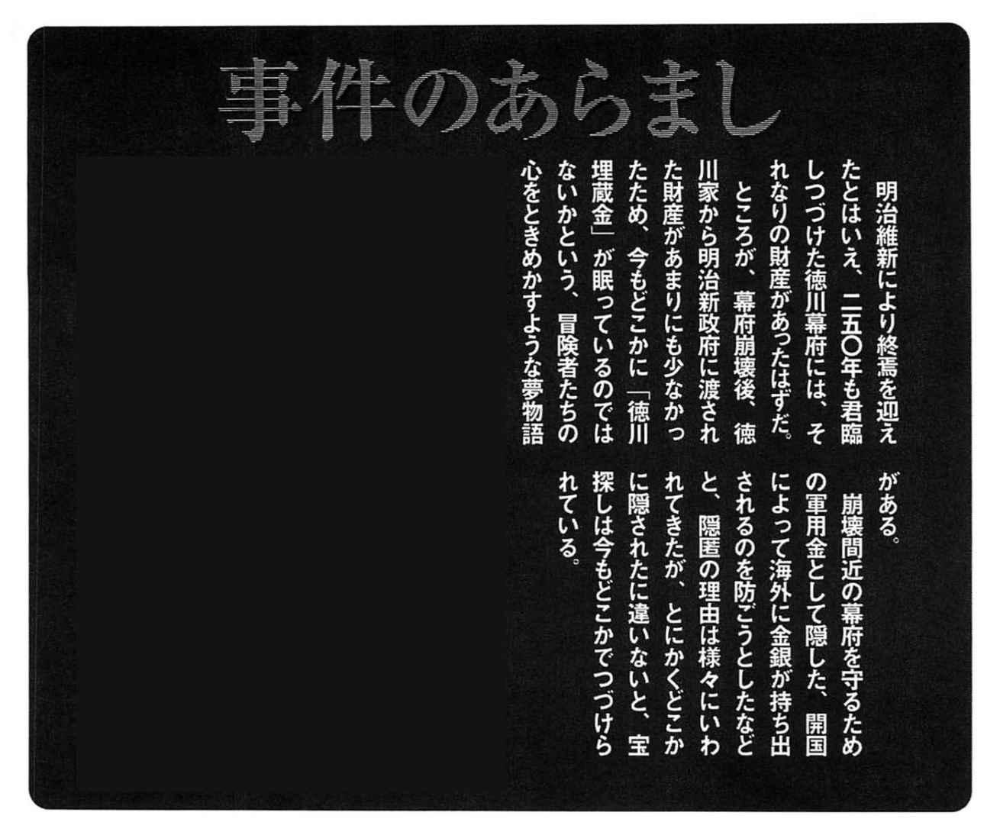
埋蔵金伝説を生んだ小栗忠順の行動
これまで数多くの人々が夢を求め、躍起になって探してきた徳川埋蔵金は群馬県のどこかに隠されており、その総額は約四〇〇万両前後に上るのではないかという説が多い。
特に赤城山の麓の渋川市には、代々埋蔵金の発掘と研究に携わってきた家があり、古文書などの史料も残されている。
群馬県を埋蔵先とする根拠となっているのが、幕末における徳川幕府の重臣で、大政奉還当時、 勘 定 奉 行 の職にあった 小 栗 上 野 介 忠 順 の行動にあるという。
彼は大政奉還後、官軍の東征がはじまっても、徹底抗戦を主張していた。
旧幕府軍が鳥羽・伏見で大敗し、徳川 慶 喜 が大坂より江戸に逃げ帰ってからも、小栗は主張を変えず、その強硬な主張を理由に役職を 罷 免 されてしまう。その後小栗は、故郷の上野国 権 田 村（現・群馬県高崎市倉渕町）に帰省していった。
このとき、万が一のためにと隠しておいたとされる軍資金三六〇万両を持ち帰ったというのが、もっとも有名な埋蔵金伝説だ。
しかし、この直後小栗は新政府軍によって斬首、処刑されてしまう。そのため、この埋蔵金の行方は歴史の闇の中へ消えてしまったのである。
こうした背景もあってか、テレビ番組で大々的に取り上げられ、発掘が行なわれるなど、群馬県が埋蔵金探しの聖地となっている。
海外に運び出された徳川家の遺産
ほかにも埼玉、山梨、千葉など東京近郊から新潟、北海道まで埋蔵場所候補は四〇か所近くあるが、もっとも多いのは、やはり群馬県だ。小栗の行動にまつわる根拠ばかりでなく、徳川家康が、幕府にもしものことがあったとき、上州に本拠を移せと遺言していたという言い伝えも根拠となっている。
さらに、いかにも国内に隠したように見せかけながら、実は、ひそかに海外へ運び出したともいわれている。
海外の隠し場所の候補地として挙がっているのが 上 海 だ。
その理由は、パリで開かれていた万博に参加した徳川慶喜の弟で、次期将軍候補と目されていた徳川 昭 武 の乗った船が、途中で上海に寄港しているからで、仮の新政府樹立の資金にするつもりだったのだろうとささやかれている。
また、財宝を積み込み、横浜港から上海を目指して出航したという「早丸」の伝説も存在する。一八六八（慶応四）年三月十五日に嵐のなかを船出したと、こちらは具体的だ。
ところが残念なことに、嵐に遭遇した早丸は、お宝もろとも沈没したといわれている。
果たして今後、埋蔵金が発掘され大ニュースとなることはあるのであろうか。
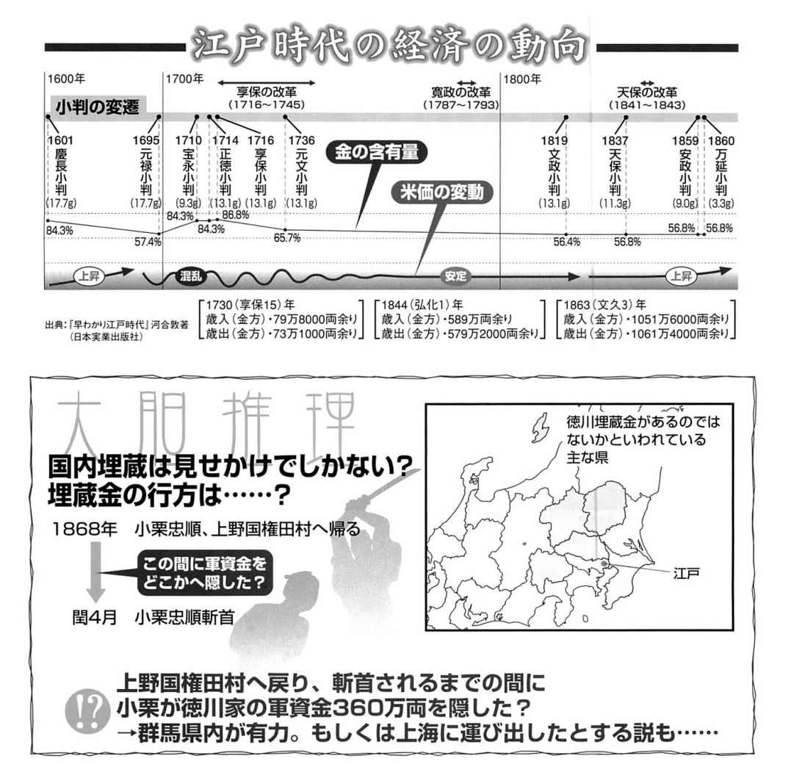

明智光秀生存説
山崎の戦いでは死ななかった!? 明智光秀＝天海説の根拠とは？
事件のあらまし
徳川家康は、政治を行なう際の相談役として二人の僧を重用した。崇伝と天海である。崇伝は法律や行政面、江戸の町づくりにおいて、陰陽道の知識から助言をした。
家康が天海に会ったのは、一五九〇（天正十八）年とも一六〇八（慶長十三）年ともいわれている。
天海は会津高田（現在の大沼郡会津美里町）生まれ。十八歳で比叡山に入山したとか、上州世良田の長楽寺で真言の 灌 頂 を受けたといわれるが、天海は、実は明智光秀だったという説が有名である。明智光秀といえば、本能寺で信長と討ったのち、急行してきた羽柴秀吉に敗れ、すでにこの世にはいないはずである。何を根拠にそういわれるようになったのだろうか。
「比叡山」「慈眼」の言葉に注目すると......
天海が、山崎の戦いで敗走した明智光秀であるとする、決定的な証拠は残っていないが、天海と光秀との間に、いくつか符合することがある。
まず、どちらも比叡山と深いつながりがあることだ。織田信長の比叡山焼き討ちに、臣下のなかで反対したのは、光秀ただ一人だった。また、光秀は山崎の戦いで秀吉に負けたとき、比叡山に逃げたといういい伝えもある。
一方、天海は比叡山で修行していた。その後、天海は比叡山の再興に力を尽くしている。家康が天海に出会ったとされる川越の喜多院は、比叡山傘下の寺であった。比叡山には、「慶長二十年二月一七日、奉寄進、願主光秀」と刻まれた石灯籠がある。慶長二十年というと、本能寺の変から三十年以上が経ち、大坂夏の陣があった頃。豊臣家衰退の時勢をよんで、光秀が自分の名を出したのではないかといわれている。
作家の小林久三氏は、光秀ゆかりの地である京都市右京区京北周山町の慈眼寺に注目した。
天海は、家康亡きあとも二代将軍秀忠、三代将軍家光に重用された。家光は、天海亡きあと、天海の像をつくらせ、慈眼寺という寺を建てている。
その後、この慈眼寺の名にちなんで、天海に
諡
号
として「慈眼大師」の称号を贈った。この天海の諡号と同じ名を持つのが、前述した光秀ゆかりの地にある慈眼寺だ。慈眼寺の釈 堂には、天海の像と位牌が置かれている。このことから、天海と光秀は同一人物だったといえるというのが、小林氏の主張だ。
堂には、天海の像と位牌が置かれている。このことから、天海と光秀は同一人物だったといえるというのが、小林氏の主張だ。
そのほか、天海と光秀は同じ年の生まれともいわれている。また、光秀は信長の家臣になるまでの経歴が不明である。朝廷や足利将軍と関係が深かったことは知られているが、それ以外はほとんど知られていない。
生存説のなかには、光秀は関ヶ原の戦いで家康軍に味方しようと駆けつけたが、戦いは終わったあとだったので、やむなく光秀は死んだことにして、天海となって家康と対面したというものもある。
これらの説は、どれも推論の域を出ない。もっともそれゆえに、歴史愛好家の想像をかきたてるのである。
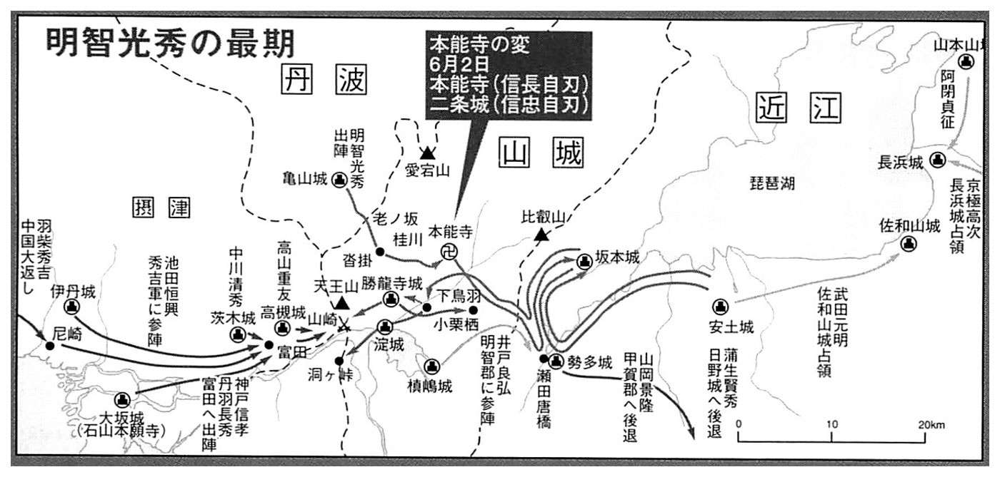
源頼朝落馬事件
武門の棟梁は本当に落馬で死んだのか？ それとも......暗殺!?
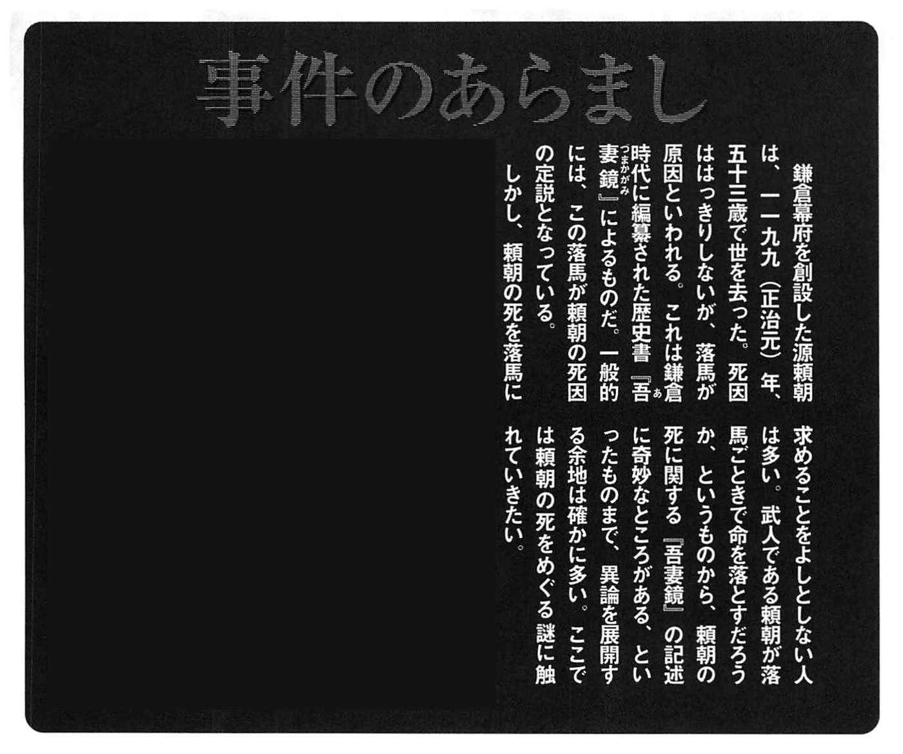
史書がほとんど記さない武家の棟梁の死
『吾妻鏡』は、十三世紀末から十四世紀初頭にかけて 編 纂 された、鎌倉幕府の歴史書である。
編纂は北条氏が幕府の実権を握っていた時期にあたるため、北条氏を意識し、事実を曲げて書かれた部分もあるという。
この『吾妻鏡』のなかに頼朝の死に関する記述が見えるのは、一二一二（建暦二）年の箇所である。そこに数行ばかり記されているのが、後世に伝えられる頼朝の落馬死だ。そこでは、新しく完成した橋を祝賀する式典に出かけた帰途、頼朝が落馬し、ほどなく死亡したとある。
ここで奇異に感じられるのは、なぜ頼朝が死亡してから十三年後の箇所に頼朝の死が書かれているのか、ということだ。鎌倉幕府を創設した頼朝の死ともなれば、幕府の歴史書にとって大いに筆が進みそうな話題だろう。一一九九年の箇所に、大きくページを割いて書くものではないだろうか。ところが、そうはなっていない。
しかも、一二一二年の箇所でも、ほかの話がつづいたあとで、申しわけ程度に触れた感すらある扱いである。
そのため、頼朝の死について記述するのを、『吾妻鏡』の編纂者が意図的に避けたのではないかと指摘する人も多い。
なぜ『吾妻鏡』は頼朝の死を簡略に扱ったのだろうか。
『吾妻鏡』が、北条氏を意識して書かれた歴史書であることは先に述べた。頼朝の死因に疑問を持つ人々は、頼朝の死に北条氏が何らかの形でかかわっていたため、あえて簡潔に扱ったのではないかと考えている。
頼朝の死を契機に専横を強めていった北条氏
鎌倉幕府は源氏が創設した幕府だ。しかしその大部分の期間は、北条氏が実権を握っていた。源氏が鎌倉幕府に君臨していたのは、初代の頼朝から三代将軍・ 実 朝 までの、わずかな期間だけである。また、二代将軍・ 頼 家 と実朝の最期は、いずれも他殺である。頼家は将軍に就任してから数年後に、実朝は二十八歳の若さでやはり殺されている。そして、その後北条氏が執権として、事実上幕府の主となっていくのである。
そのため、北条氏が鎌倉幕府の実権を握るために、これら頼朝の遺児たちに加え、頼朝をも謀殺して、幕府を掌握したのではないかというのだ。
物的証拠がないため、あくまでも推測の域を出ないのだが、頼朝の死が『吾妻鏡』のなかで不自然に扱われているのは、頼朝の死に北条氏がかかわっていたからではないだろうか。
その真相は定かでないが、源平合戦で栄光をつかんだ頼朝の一族が、平氏のあとを追うように、あっという間に滅んだことだけは確かである。
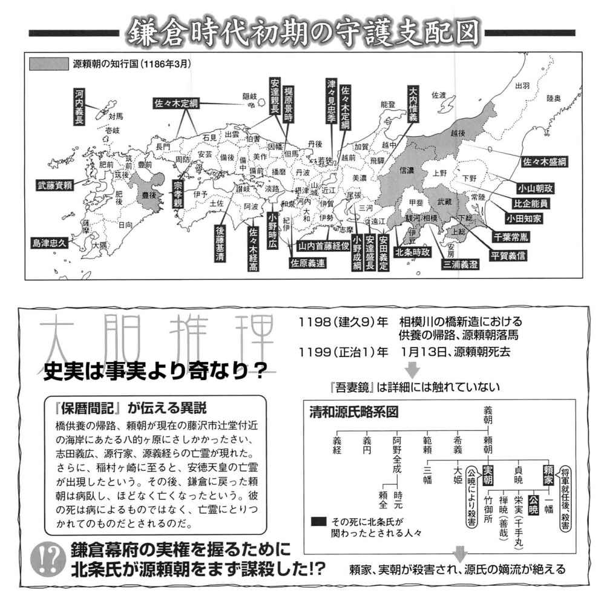
北条義時急死事件
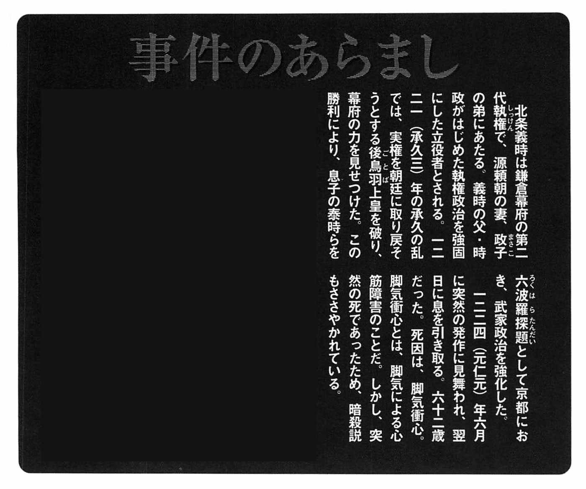
数多くの政敵を追い落とし恨みを買っていた義時
承久の乱ののち、執権政治をはばむ者がなくなり、体制づくりがようやく完成した矢先、義時は急死する。あまりにも突然であったため、発作ではなく暗殺されたのではないかという が絶えない。
が絶えない。
では、義時の命を狙った者は誰だったのだろうか。
義時は、数々の政敵を倒して執権政治の基礎を築いた。義時にまず倒された政敵に、鎌倉幕府二代目将軍の源頼家がいる。義時によって将軍職を追われ、暗殺されたのではないかといわれている人物だ。
さらに、頼家の子の 一 幡 は、有力 御 家 人 の 比 企 一族に利用されて将軍職を狙ったために、殺害されている。
義時の父・ 時 政 の後ろ盾で三代将軍となった実朝は、頼家の遺児・ 公 暁 によって鶴岡八幡宮で殺された。その後、公暁も殺されてしまい、このことで源氏の正統な後継者は途絶えた。一説によると、この事件にも義時はかかわっており、一連の源氏の正統な跡継ぎの滅亡を画策したのは、彼ではないかといわれている。
さらに、共に執権政治の 礎 を築くべく力をあわせてきた父・時政が、 愛 妾 である 牧 の 方 と結託して実朝を廃そうとしたため、義時は父を伊豆に幽閉した。
承久の乱では、後鳥羽上皇をはじめ、 順 徳 ・ 土 御 門 上皇が、義時によって失脚させられている。このとき、上皇に加担した貴族や武士の所領約三〇〇〇か所あまりが、すべて義時に没収された。
こうした、たくさんの恨みが義時に向けられたので、皆の恨みに祟られて急死したのではないかという
まであった。または、このなかの誰かがそうした恨みを晴らすべく、義時を殺害したのではないかともいわれた。
義時の死を願い クーデターを企てた妻
なかでも、暗殺犯としてもっとも有力なのは、義時の後妻・ 伊 賀 氏 である。この伊賀氏が義時に毒を盛ったというのだ。彼女による暗殺を裏付けるものとして、歌人・藤原 定 家 の日記に、以下のような記述がある。
承久の乱の首謀者だった 二 位 法 印 尊 長 が、三年間の逃亡生活の末につかまった。そのとき、尊長は「義時の妻が義時に盛った毒で、俺を殺せ」と叫んで、皆がたいそう驚いたとある。
伊賀氏は義時が故人となったあと、 三 浦 義 村 と結託して、先妻の子である泰時を押しのけて、わが子の 政 村 を跡継ぎにすえようとしているのだから、動機は十分である。もっとも、その陰謀は泰時の知るところとなり、伊賀氏は流罪となった。
伊賀氏の陰謀はこうして未遂に終わったが、その前段階としての義時暗殺は、成功していたとみることはできるのかもしれない。
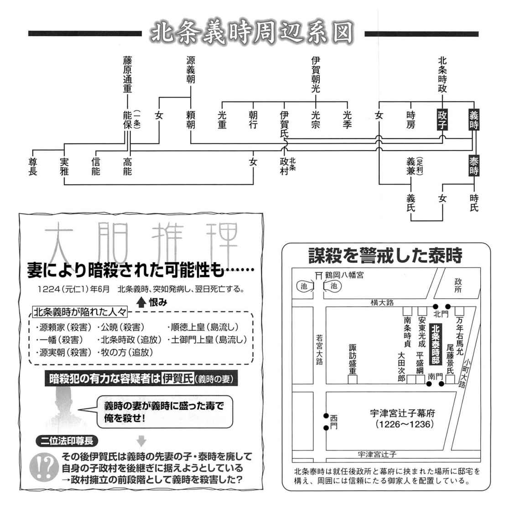
上杉謙信暗殺説
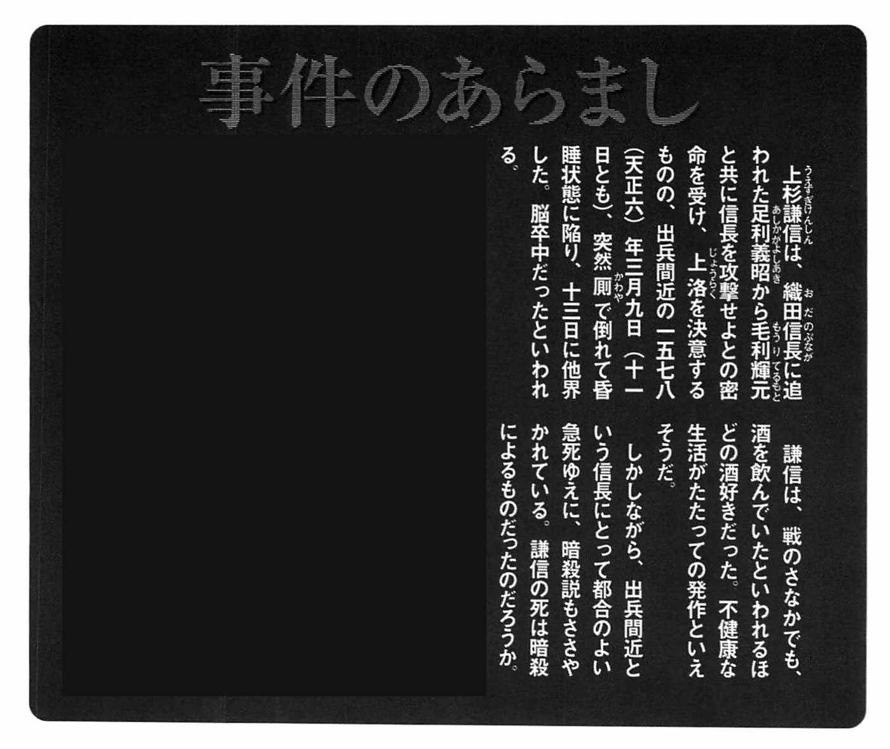
ささやかれる信長による暗殺説
謙信の急死は、あまりにも都合がよすぎた。誰にとって都合がよいかといえば、織田信長にとってである。
武 田 信 玄 亡き後、戦国最強の武将といえば、上杉謙信であった。当時、信長は周囲を敵に囲まれて、絶体絶命の状況にあり、そんなところへ上杉勢に攻めかかられては、ひとたまりもない。
勝つためには手段を選ばない信長のこと。謙信に上洛されては困るので、 刺 客 を放ったのではないかといわれている。
暗殺説によると、謙信が厠で用を足そうとかがんだとき、隠れていた刺客によって肛門を刺されたのが死因だとする。
不思議なことに、一方の謙信も自分の死を予感でもしているかのように、肖像画を描かせており、ちょうど謙信が死亡した日に完成した画が届いた。
発作を予測できるとは考えにくいから、謙信は自分が刺客に襲われるかもしれないという不安とそれによる死の覚悟を抱えていたとも考えられる。
さらに、死の一か月前には、「四十九年一睡の夢、一期の栄華一盃の酒」という言葉を残している。
これは「四十九年の自分の生涯は、一睡の夢のように短かった。戦って得た栄華も一盃の酒ほどの価値でしかない」といった意味だ。酒をこよなく愛した謙信の 辞 世 の歌として知られている。
鬱病だった戦国最強の名将
謙信の死因は自殺という意外な説もある。
謙信は、一五六五（永禄八）年に左足に 風 毒 腫 ができ、死には至らなかったものの、完治することはなかった。それを苦にして自殺したというのである。
作家の 小 松 重 男 氏が、『聖将上杉謙信』を書くために、謙信の行動や言動を残らずまとめ、医師に診てもらったところ、「不健康な生活習慣から、高血圧症、糖尿病、アルコール依存症を 患 っていたであろう」と診断されるとともに、「 躁 鬱 気質」とも診断されたという。
躁鬱気質であれば、病気を苦に、発作的に自殺したと考えられなくもない。
さて、謙信の死後であるが、彼の魂はなかなか安住の地を得られなかった。死後、謙信は 甲 冑 を着せられて、 甕 棺 に納められ、春日山麓の 林 泉 寺 に葬られた。その後、跡を継いだ 景 勝 が幕府の命令で会津の領主となったため、謙信の遺体も会津に運ばれた。
さらに景勝は、 米 沢 へ配置換えとなったので、謙信の遺骨も米沢へと移動した。
そして、明治時代に入ってから、米沢の歴代藩主が眠る上杉家 に安置されている。今もそこに、謙信は眠っている。
に安置されている。今もそこに、謙信は眠っている。
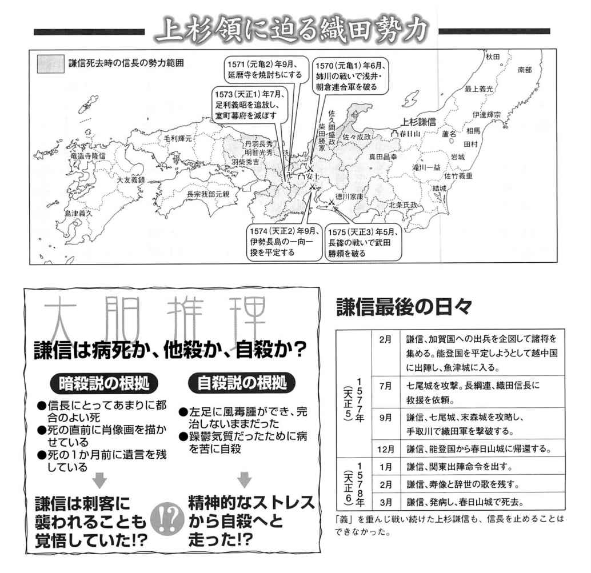
堀田正俊刺殺事件
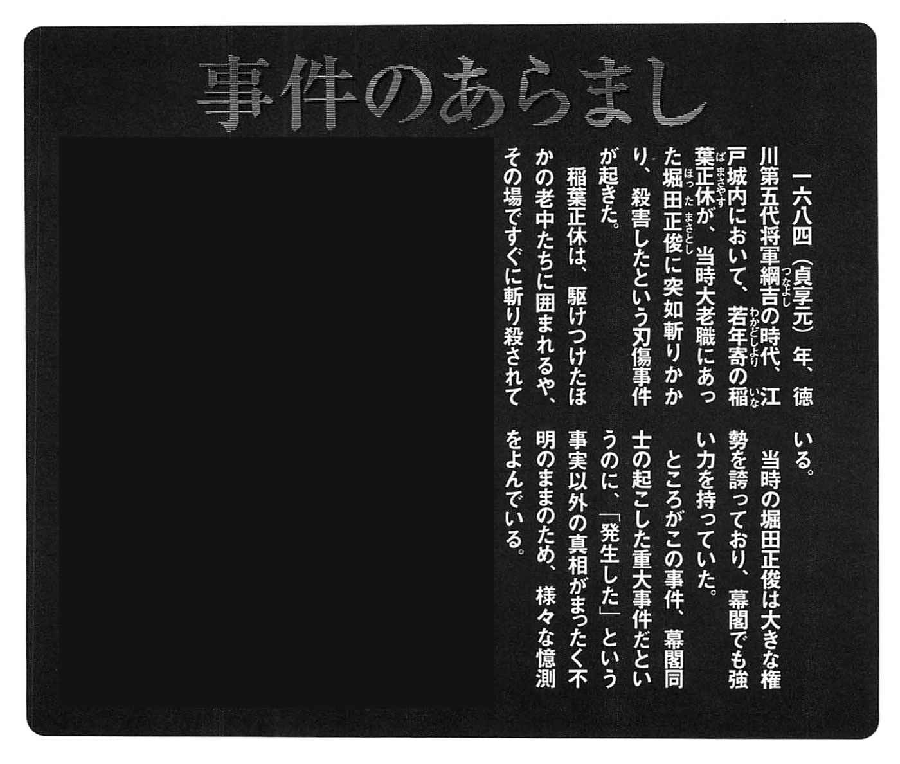
政界の大物がからむも 忠臣蔵より目立たず
事件が起こったのは一六八四（貞享元）年。のちに 浅 野 内匠 頭 が 吉 良 上 野 介 に斬りかかった騒動に先立つこと十七年である。この年の八月、若年寄稲葉正休は、大老の堀田を次室に呼び出すや、「天下のため覚悟！」と、いきなり刺し殺してしまった。
忠臣蔵は 浄 瑠 璃 や芝居になって、今も歴史に残るほどの大騒動として扱われているのに、登場人物の大物ぶりでいえばかなり格上のこの事件は、ほとんど取り上げられないばかりか、凶行の理由すら明らかになっていない。
容疑者の死により
に包まれた刃傷事件
いくつか伝わるなかでは、堀田正俊の家臣だった 新 井 白 石 が後年になって語った話がよく知られている。
淀 川 改修工事の費用にからんで、視察を担当した稲葉が、自分とは別に視察と見積もりを行なった 河 村 瑞 賢 のものではなく、自分の意見を採用してくれるよう堀田に依頼。だが、それを堀田に断られたことに腹を立てて斬りかかったというものだ。
また別の堀田家家臣が残した物語では、ときの将軍・綱吉と堀田の関係がこじれたことに遠因があるとしている。
将軍継承問題で綱吉を強く推した堀田だが、当初こそ良好だった綱吉との仲がしだいに 疎 遠 になる。
堀田の剛直さを綱吉がうっとうしく感じはじめたとも、綱吉に信頼されているのをいいことに堀田が増長したせいだともいう。
あるとき、綱吉は堀田に 隠 居 を勧める決意をした。
それを堀田に告げる役を担ったのが稲葉だった。
しかし、城内の御用部屋にいた堀田に綱吉の意を話すと、拒否されてしまう。
将軍の命令は絶対的なものと信じていた稲葉は、将軍の命令に服しない堀田に腹を立て、殺害に及んだというのである。
稲葉が暗殺に及んだ理由は、河川工事に関する意見を認められなかったことに対する単純な 私 怨 なのか、あるいは将軍の密命を受けてのものなのか。
真相がまったくわからないのでは、ドラマに仕立てようがなかったのだろう。大老刺殺事件の芝居は誕生していない。
ともあれ、綱吉の政治が迷走を始めるのが、このあとのこと。 側 用 人 柳 沢 吉 保 を登用し、大きな権力を与えるようになる。大老は置かれず、老中は諮問機関となってしまった。
そして、一六八五（貞享二）年、 生 類 憐 みの令が発布される。さらには貨幣改鋳を行なって利益を得る一方で経済を混乱させ、インフレを引き起こしている。
堀田の死によって綱吉の政治の 箍 が外れてしまったのは、事実のようだ。
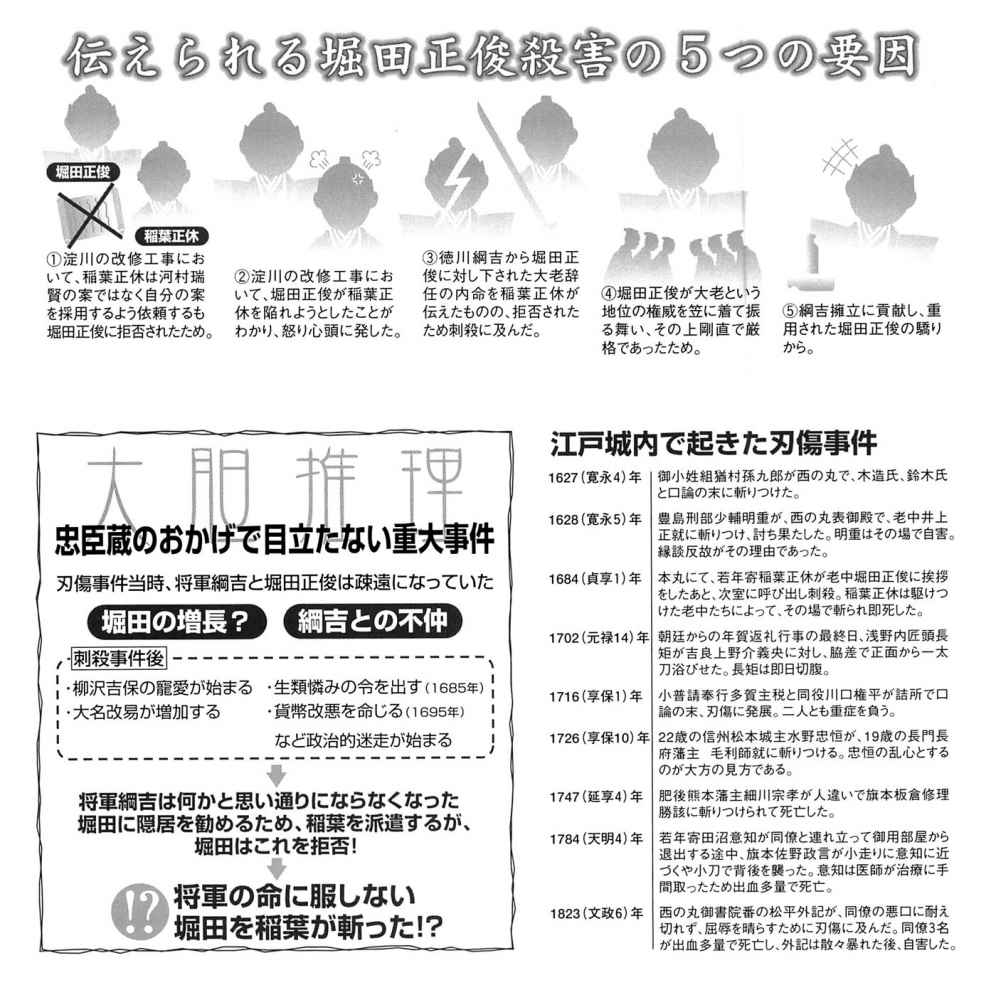
坂本龍馬暗殺事件
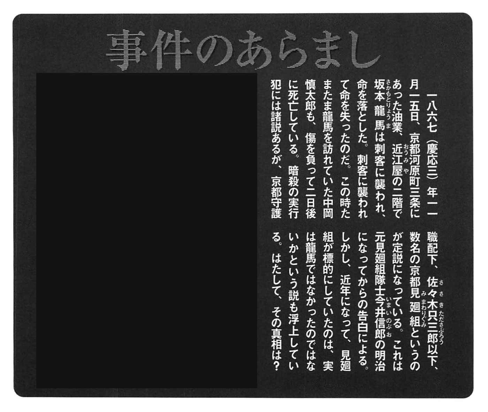
あっという間の出来事だった 龍馬暗殺事件
犬猿の仲だった
長を結びつけ、大政奉還に貢献した坂本龍馬は、近江屋に散った。定説上襲撃犯人とされる見廻組は、新撰組と同じく、会津藩主
松
平
容
保
が務める京都守護職が管轄しており、当夜の刺客は三人だったということまでは判明している。ただ、明治時代に見廻組の隊士だった人物の手によるものをはじめ、いくつかの回顧録が書かれているが、それぞれが襲撃隊士として別々の人物の名を挙げており、実際に龍馬に致命傷を与えたのが誰だったのかすら、特定されていない。
当初、新撰組が疑われたのは、暗殺現場の遺留品が新撰組隊士のものだったからだ。しかし、反幕の志士を取り締まるという職務において、見廻組と新撰組は同じである。本当に見廻組が襲撃したのであれば、あえて新撰組に功績を与えるような、偽の遺留品を残すことは考えにくい。
疑問が生じる 見廻組犯人説
このように、見廻組犯人説にも疑問が生じる中、事件には 紀 州 藩が絡んでいたのではないかとする説もある。もし紀州藩が龍馬暗殺に加担したとすれば、それは龍馬が所有していた「いろは丸」という船と、紀州藩に所属する船の間に発生した衝突事故が原因だろうといわれている。この船は、龍馬率いる 海 援 隊 が、四国の 大 洲 藩から借り受けて操船していたものだが、紀州藩の軍艦と衝突事故を起こし、沈没している。
龍馬はその賠償交渉をかなり強引に行ない、紀州藩から七万両という大金を引き出している。
何しろ、幕府が弱体化しているとはいえ、紀州藩は 御 三 家 。これに龍馬は、当時の国際法である「 万 国 公 法 」を持ち出し、あらゆる人脈を駆使しての交渉を行なったと伝えられている。紀州藩が腹に据えかねていたとしても当然といえよう。
ここから、見廻組が偽名を使っていた龍馬の宿泊先をなぜ突き止めることができたのかという疑問の解決も含めて、何らかの形で紀州藩の力が働いたのではないかと考えられるようになったのである。
ところで、同時に襲われた中岡慎太郎は、龍馬が穏健な討幕論者で、幕府から朝廷への政権移譲、その後、両者が手を携えて政治を行なうのが望ましいとする構想を抱いていたのとは異なり、武力により完全に幕府を倒そうと考えていた。そこから、見廻組の本当の標的は中岡の方だったのではないかとする説もある。この説では、中岡を探索していた見廻組が所在を突き止めて宿を襲った際に、たまたまそこにいた龍馬が巻き込まれたのだとする。
狙われたのは龍馬か、それとも巻き添えだったのか。そして、犯人は誰なのか。真実を知る者はいない。
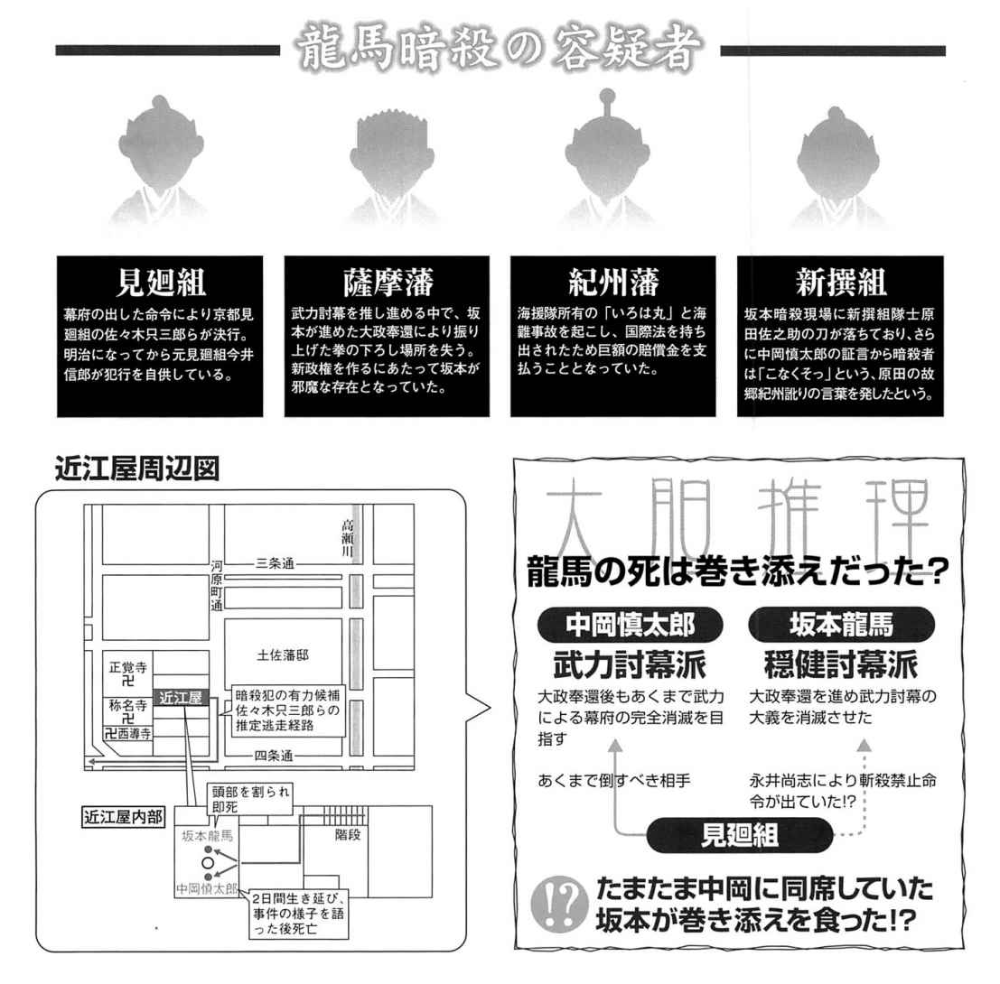
大村益次郎暗殺事件
凶刃に倒れる維新の志士 暗殺犯処刑停止を命じた男が事件の黒幕？
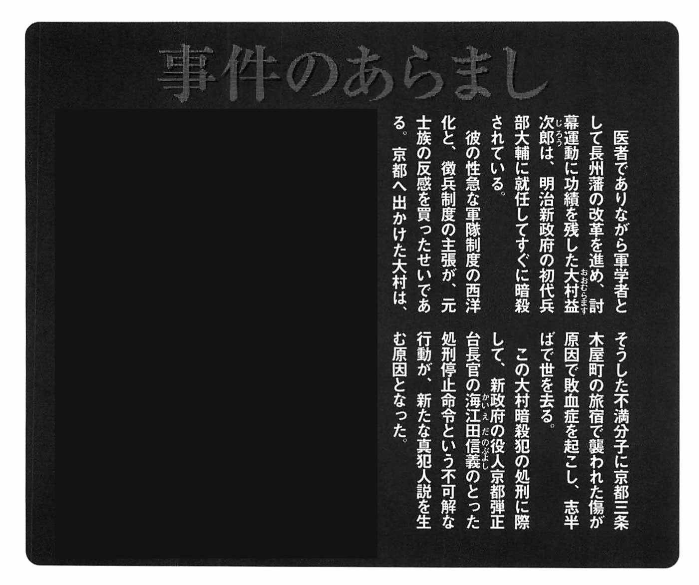
恨みを買った大村の 西洋式軍隊建設の夢
大村を襲撃した不満分子たちの主張は、彼の「西洋かぶれ」に腹を立て、思うようにはさせたくないということだった。
医者の家に生まれた大村は、蘭学を学んだ縁で大坂の 適 塾 で西洋の兵学書や航海術書に出会い、道を変えた人物。彼は蘭学者としての評判が高まって長州藩に呼び戻される。幕府による長州征討を打ち負かし、官軍として参加した 戊 辰 戦争で大村の立てた戦略がことごとく成功するなど、軍事に関して抜群の才能を示し、新政府では陸軍に関する実権を手にした。
そこで自信を持って大村が主張したのが、国民 皆 兵 だった。「過去の武士の兵法では国防はできない。洋式軍隊を育てる」という彼の発言が、維新が終わったばかりで、まだ武士の特権や誇りを捨てきれないでいる人々の反感を買う。
そして大村襲撃事件が、一八六九（明治二）年九月四日に起こる。大村は足に深手を負ったが、仲間の一人が機転を利かせて刺客をひきつけたため、このときは助かった。しかし、この傷が元で二か月後、彼は世を去っている。
大村襲撃の犯人はすぐに捕らえられ、 弾 正 台 という当時の警察機構が年内の処刑を決定した。ところが処刑当日、京都弾正台長官の海江田信義が処刑停止命令を出したため騒ぎになった。
疑惑を招いた海江田の処刑停止命令
海江田は
摩藩出身で、幕末の
生
麦
事件にも関係しており、もともとは攘夷論者である。
長同盟で維新を成功させたものの、不満分子たちと同様に、大村の西洋かぶれを快く思ってはいなかったようだ。江戸城入城後の初顔あわせのときから、ことごとく意見を異にしていたことが、広く知れわたっていたという。
二人の対立のうち代表的なのが、旧幕兵士に対しての処分方法で、強硬派の大村に対し海江田は温情派だった。それを知っていた不満分子たちは、中央政府を大村から追われるようにして京都弾正台長官となっていた海江田に同情的だった。
そんななかの一人が、海江田とも親交がある幕末からの過激分子で、大村襲撃の仲間にも加わっていた人物だ。海江田がこの人物を含む襲撃犯たちの処刑停止を命じたのは、司法制度が混乱していた時代のことであり、単純に手続きや書類上の不備が見つかったからとしている。が、海江田は犯人の一人と交遊していた事実があったために、不信感を抱かれる原因となってしまった。
大村と海江田が犬猿の仲だと知っている世間は、海江田が処刑を延ばして大村への憂さ晴らしをしたとささやいたばかりか、もしかして大村襲撃も陰で海江田が操ってのことではないかと、長く
することになったのだった。
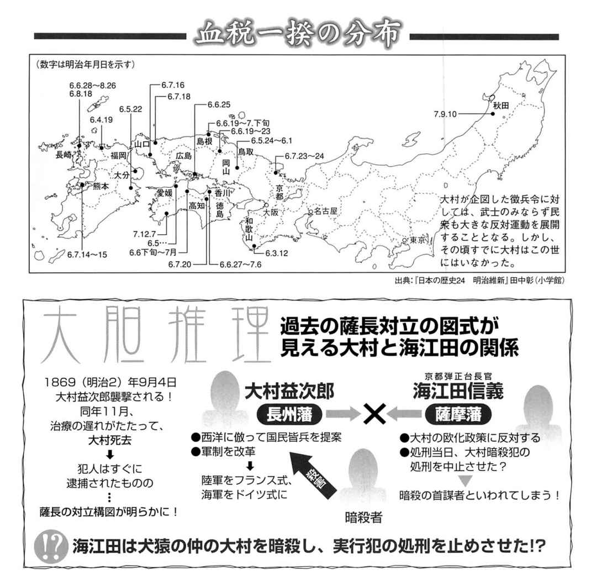
広沢真臣暗殺事件
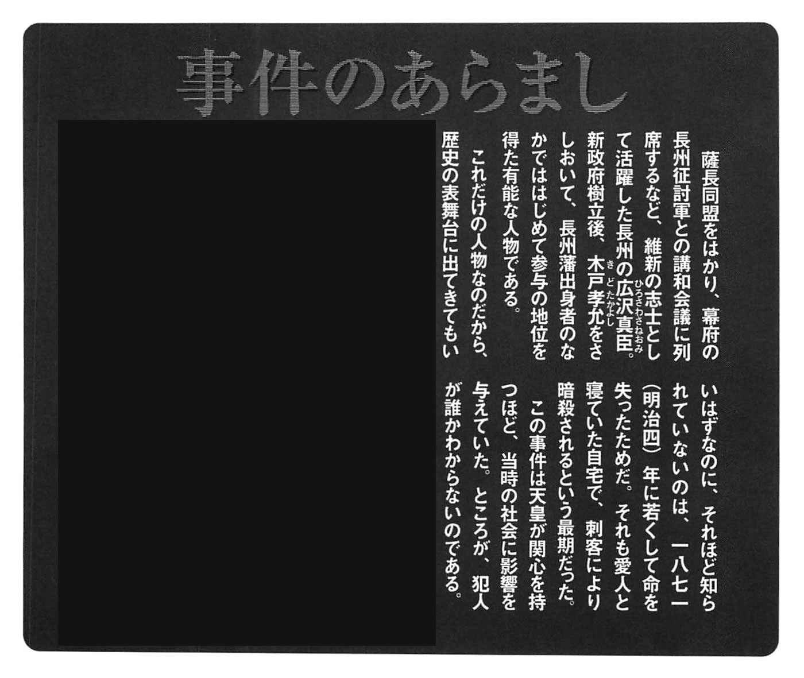
犯人特定のために陪審員制度まで生まれた大事件
明治維新後も幕末動乱の殺伐とした空気が晴れることはなく、明治のはじめには、政府の要人たちが暗殺されるという事件が、次々に起こっている。こうした風潮の中で、一八七一（明治四）年に至るまでに、兵学者の大村益次郎、思想家の 横 井 小 楠 らが凶刃に倒れていた。
そこへ再び広沢の 横 死 である。早急に解決をするようにと、明治天皇から犯人逮捕の 詔 勅 が出されるほど事件は重要視された。
警察機関は反政府の意思表明をしている者の多かった久留米・ 柳 川 ・熊本藩士たちを次々に取り調べるが、犯人は見つからない。容疑をかけられたものだけでも八〇人に達するという大捜査の結果、最終的に逮捕されたのは、真臣と共に襲われた愛人福井カネだった。
ただ彼女は襲撃直後に逃げ出しており、ここに疑わしい面があったからだ。ところが、激しい 拷 問 で彼女が告白したのは、真臣のほかに使用人とも関係があったということだけ。
そこで、次にこの使用人の逮捕、拷問が繰り返されることになるが、ついに自白は得られなかった。
事件解決のために生まれた陪審制度
それでも天皇の詔勅があるため、何とか犯人を見つけないといけない。
自白がなければ罪に問えないという司法省と、早く誰かを犯人に仕立てたい警察とが折りあいをつけるために取り入れられたのが、 陪 審 員 制度だった。
陪審員制度とは、一般人に裁判を傍聴させて有罪か無罪か、多数決で決めようというもの。このときは官僚から一二人が選ばれて陪審員を務めたという。
結果は無罪に終わる。使用人は放免されるまで五年の年月を容疑者として過ごす結果になってしまった。
そして、そのまま犯人を見つけ出すことができず、事件はうやむやになる。
広沢殺害の実行犯が誰にしろ、暗殺を指示したのはライバル関係にあった木戸孝允ではないかという声もあがっていた。
広沢は、藩士出身者としては政府最高位にあたる参議に任ぜられるなど、長州藩を率いてきた木戸をも凌駕する才能の持ち主ともいわれる。
その広沢は、一八七〇（明治三）年七月に、
民
部
、大蔵両省を巡る紛議で、
摩藩の大久保を支持して、木戸と対立していたという背景がある。
広沢の暗殺はその翌年、一八七一（明治四）年一月のことであったため、対立者であった木戸に対しても疑いがかけられ、なんと内偵まで行なわれるほどだったという。
いずれにせよ、結局、迷宮入り事件になってしまった。
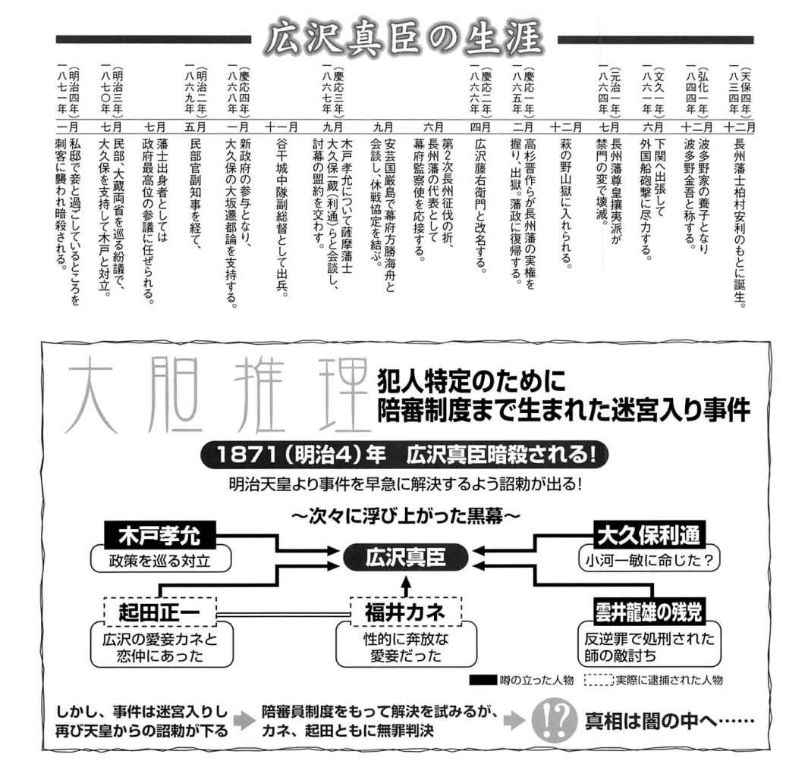

淀殿生存説
大坂の陣で拾った命を利根川に捨てる結末とは？
事件のあらまし
豊臣秀吉の側室で、秀頼の母である淀殿。父は浅井長政、母は織田信長の妹で、絶世の美女とうたわれたお市の方である。幼少の頃から淀殿の人生は苦難の連続だった。仲睦まじかった両親は、伯父である信長に攻められ、父は死亡、母は幼い姉妹を連れて信長のもとに身を寄せたのち、 柴 田 勝 家 に嫁ぐ。その後、勝家が秀吉に攻められ、母は勝家とともに自害。淀殿は妹たちとともに秀吉に保護され、成人したあかつきには側室となった。
秀吉が愛情を注いだ淀殿との間の子・秀頼は、一六一五（元和元）年、大坂夏の陣によって大坂城落城とともに自害。淀殿も城に火をつけ、自ら命を絶ったとされる。こうして淀殿は世を去ったと思われていたのだが――。
淀殿は大坂落城時に逃げ延びていた？
淀殿を救い出したのは、初代総社藩主・秋元長朝だ。彼は、淀殿の父・浅井長政の家臣だった。
長朝が夏の陣で大坂城を攻撃中、長朝の陣に美しい着物を着た美女があらわれ、必死で助けを求めてきた。女性は名乗りはしなかったが、その気品ある美しさや物腰、物言いなどから、長朝はこの女性が淀殿だろうと確信した。
長朝は元浅井長政の家臣。世が世なら、淀殿は主君の姫君だ。詳しい事情を問いただそうともせずに、ひそかに自分の領地である総社へ連れ帰った。
一説によると、淀殿を不憫に思った徳川家康が自ら命を下し、長朝に淀殿を預けたともいう。
突飛な話だが、淀殿が長朝の所領だった、群馬県前橋市にやってきたことを裏付けるものとして、気雲山元景寺に、淀殿ゆかりとされる品々が残っている。たとえば、淀殿が大坂から逃げ出すときに乗ってきたとされる 駕 籠 の引き戸。これには桐と菊の家紋が入っている。「桐」は豊臣家の、「菊」は浅井家の家紋である。そのほか、天下人の側室にふさわしい、金糸・銀糸をほどこした見事な打ち掛けもある。寺内にある「心窓院殿華月芳永大姉」と刻印された墓は、淀殿のものとされる。
さて、総社へと逃れた淀殿は、長朝に惚れられてしまう。しかし、淀殿はどんなに言い寄られても、長朝を受け入れる気にはなれず、断りつづけた。我慢できなくなった長朝は、淀殿を力ずくで犯してしまう。誇りを傷つけられた淀殿は、翌日城を抜け出すと、利根川に身を投げた――。
一説によると、いくら言い寄ってもよい返事をしない淀殿に、ついに長朝の堪忍袋の緒が切れ、淀殿を生きたまま箱に押し込め、利根川に沈めてしまったともいわれている。
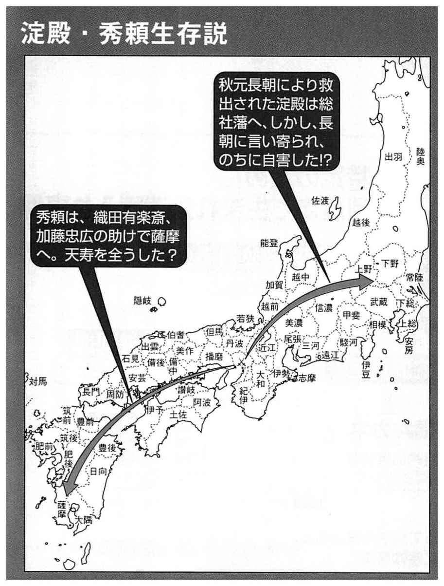
承平・天慶の乱
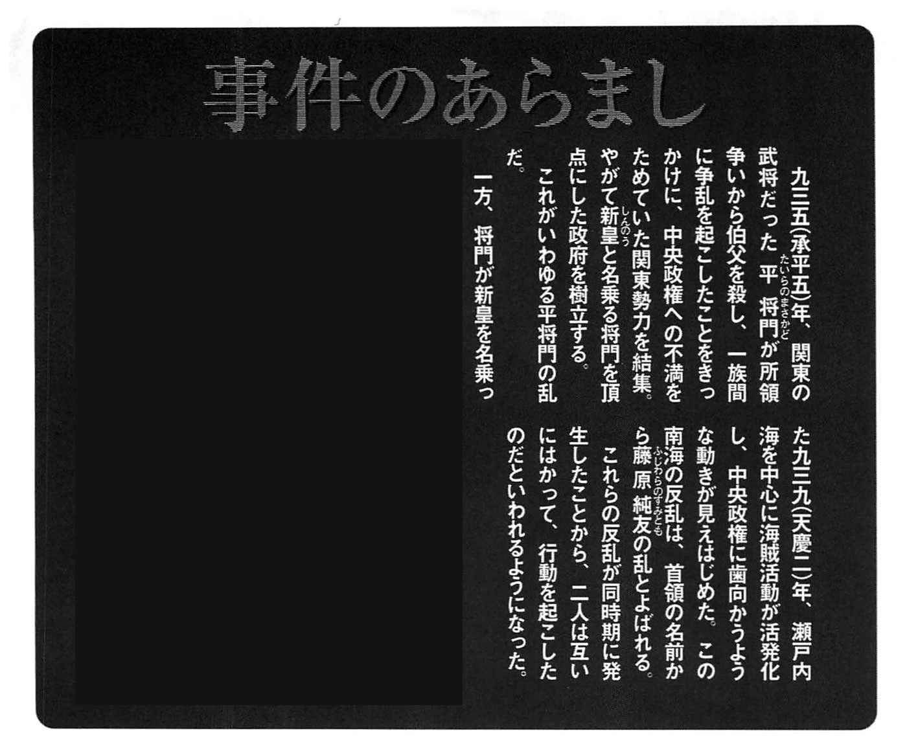
関東に独立政権を樹立した平将門
平将門は、中央政権から派遣されていた 国 司 と、在地勢力である 郡 司 の間に起きた、もめごとの仲裁役を引き受けたことが、結果的にその後の運命を決めてしまう。将門はこの調停に失敗したばかりか、国司側に謀反として訴えられてしまったのだ。
この問題が解決されないうちに、将門はついに 常陸 の国府を襲撃し、焼き払ってしまう。これにより将門の行動は国家への反乱となり、政権に弓を引いたと見なされてしまった。
常陸国で立ち上がらざるをえなくなった将門は、 下 野 、 上 野 、 武 蔵 、 相 模 を平らげ、いつしか関東を制圧する勢いにまでなった。その行きつく先が、政権樹立である。
九三九年に新皇を名乗った将門のもと、関東の独立政権は大臣、納言、参議など中央政権と同様の官位を定め、国家としての形を整えていった。
将門の成功を見、蜂起した純友
これに対し藤原純友は、海賊追捕の 宣 旨 を受け、 伊 予 国に赴任していた中央政権の役人だったが、任期終了後も帰京せず、南海道で略奪を繰り返していた海賊の頭領におさまっていた。
あわてたのは、中央政権だ。平安時代中期に入って藤原一族による摂関政治という体制が定着し、安穏としていたところに、西と東で持ち上がった騒動である。将門と純友の間に内密の打ちあわせがあったに違いないと思い込んでしまったのだ。
それが後年の歴史書『 大 鏡 』編纂のときに、史実として書き込まれてしまう。
もっとも、一時は泡を食った中央政権だが、将門の乱は 平 貞 盛 と 藤 原 秀 郷 によって、純友の乱は 小野 好 古 と 源 経 基 らによって鎮圧された。関東の反乱の首謀者平将門は、北山の合戦にて矢を受けて戦死し、藤原純友も根拠地の 日 振 島 で討ち取られた。
事なきを得た中央政権であったが、貴族たちが右往左往するなかで『大鏡』に二人の共謀説が記録されたため、二人 って比叡山で盟約を交わしたというような逸話も今に残っている。
って比叡山で盟約を交わしたというような逸話も今に残っている。
実際には、純友の海賊活動が活発になるのは、将門の乱が制圧されたのちのことだし、そもそも 摂 津 国で備前介藤原子高の一行を襲撃して反乱の 狼煙 を上げたのも、将門が親皇を名乗ってからのことである。
確かに将門が強勢を誇っていた頃に、純友が京への侵攻を意図した形跡はある。しかし、『純友追討記』によれば、彼が将門謀反の報に接したあと、自分も反乱を起こす決意を固めたと、二人の盟約説を否定する記述がある。
二人の間に密約と呼べるものが存在した可能性は、限りなく低いといえよう。
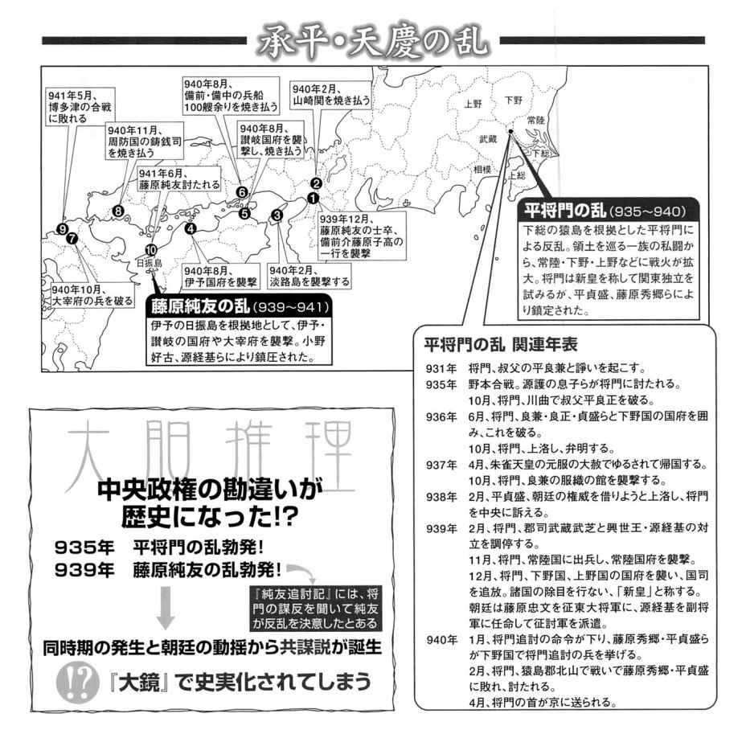
文永の役「神風」論
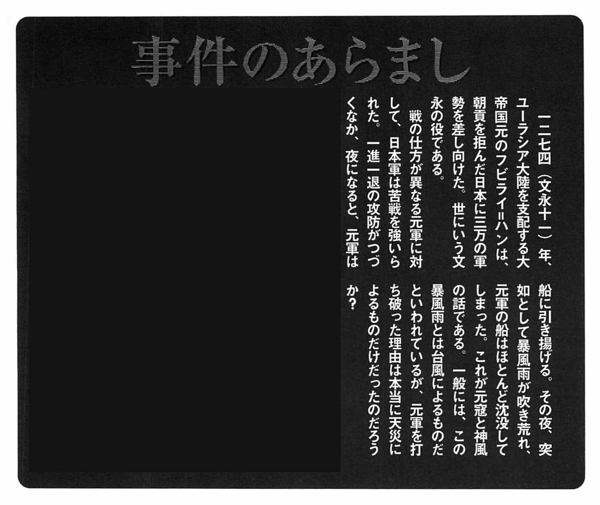
台風のこない時期に巻き起こった神風
文永の役以後、「日本の危機を神風が救ってくれた」という風聞が広まったが、この神風＝台風説に疑問を呈したのが、気象学者の 荒 川 秀 俊 氏だ。
その反論の根拠とは、「文永の役は、旧暦の十月二十日とある。この日は、太陽暦では十一月二十六日にあたり、台風が来たとは考えにくい」というものである。
参考までに一九五一年から二〇〇四年までの約五十年間の気象データを見ても、十一月の上陸数はほぼゼロだ。
台風が十一月に来る可能性は、ほとんどないだろう（ただし、一九九〇年の十一月三十日に台風が上陸したことはある）。
また、荒川氏は、文永の役当時に台風が発生したという史料は、あまり信頼性が高くないという指摘もしている。
台風との明言はないものの、 李 氏 朝 鮮 の『 東 国 通 鑑 』『 高 麗 史』などの歴史書には、博多湾内にいた元軍の船は、暴風雨によって大きな被害を受けたという記述がある。これらの記述を、荒川氏は信用するに足らないとした。
一方、公家の 勘 解 由 小 路 兼 仲 が記した『 勘 仲 記 』では、「海に浮かんでいた元軍の船は、突然の逆風に吹かれて本国に帰った、という話を聞いた」との記述がある。このニュアンスでは、暴雨風によって元軍が壊滅したというよりは、逆風により上陸が困難になったので、上陸を延期して帰還したように思える。
また、文永の役から七年後、再度元軍が攻め寄せてきた一二八一（弘安四）年の弘安の役は、太陽暦にすると八月十六日になり、まさに台風の季節。そのため、弘安の役の際に起きた台風による元軍の撤退と、文永の役とが混同されたのではないかという見方もある。
では、文永の役において神風が吹かなかったとしたら、元軍が撤退した本当の理由は何だったのだろうか。
退却する運命にあったまとまり切れなかった元軍
諸説様々だが、元はもともと内陸の国だったので、海についてはあまり知識がなかった。その結果、元軍の船の指揮は、属国である高麗の軍隊に頼っていたため、連携がうまくとれていなかった背景がある。
そのため、元軍が優勢に戦いを進めていたにもかかわらず、夜になると船に引き揚げたのは、高麗軍に置き去りにされることを恐れたためではないかとされている。
なお、元軍の船を造ったのは高麗の人々で、元の支配に苦しんでいた彼らが、わざと手抜き普請をしたため、ほんの少しの風で船が沈んでしまったとか、船同士を密集させて停泊していたために、風によって船体同士がぶつかってしまい、壊れたのではないかとする説もある。
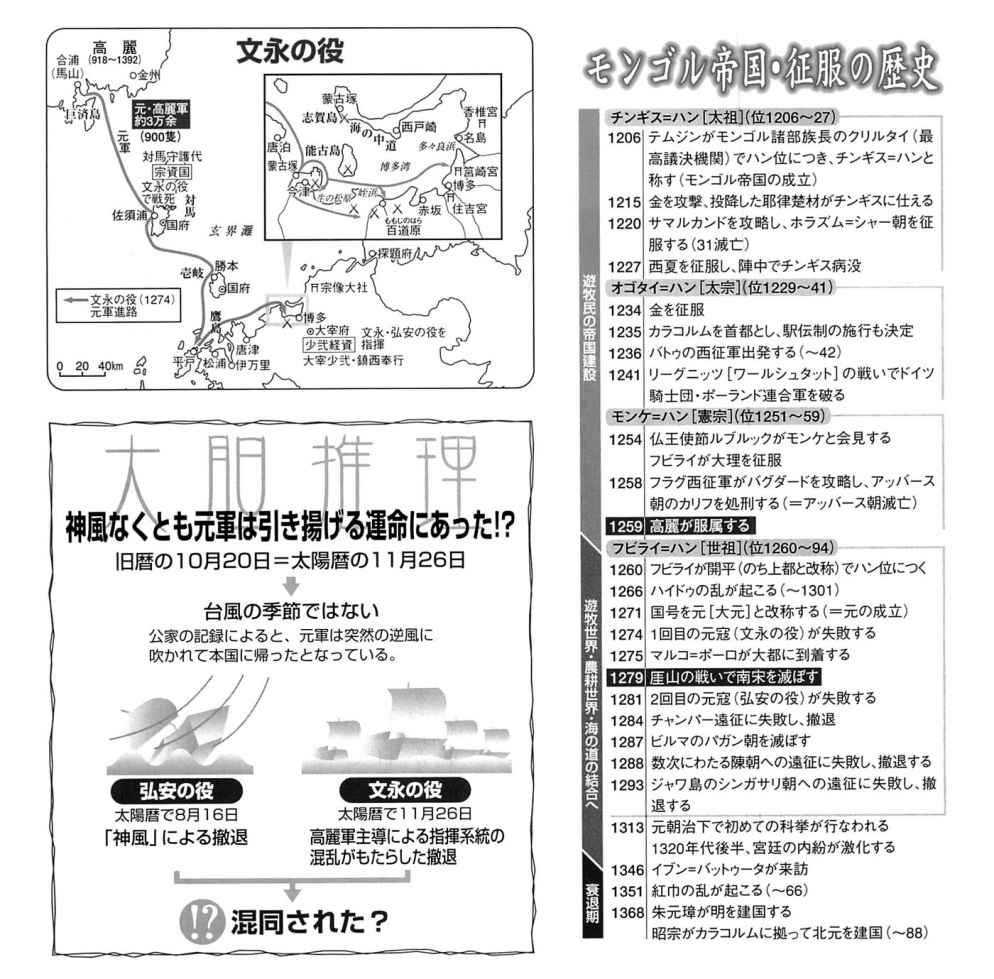
川中島の戦いの真実
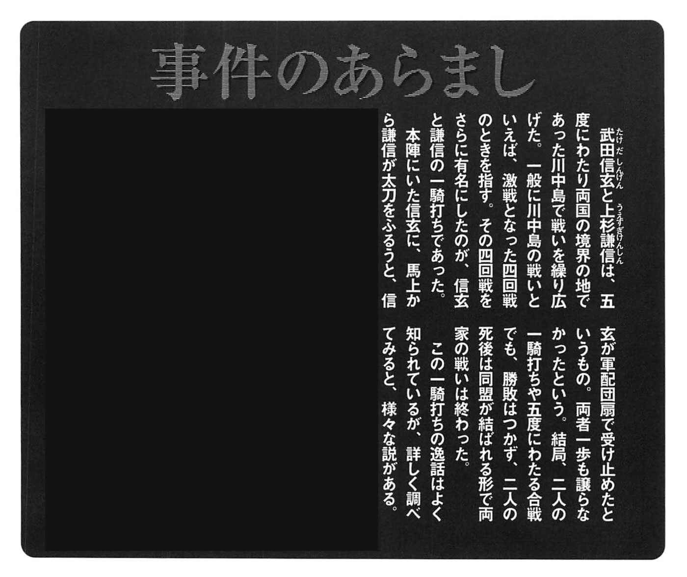
両軍で見解が異なる大将の一騎打ち
一五六一（永禄四）年の第四回川中島の戦いといえば、中央の動きとは外れた地方大名の局地戦ながら、戦国時代のハイライトのひとつとなっている。
武田軍の軍師 山 本 勘 助 によるキツツキ戦法。これを見破り、 車 懸 りの人で攻撃を仕掛ける上杉謙信と、 鶴 翼 の陣で迎え撃つ武田信玄。そして、この戦いのハイライト中のハイライトが両将による一騎打ちである。
この謙信と信玄の一騎打ちについては、上杉方と武田方で主張している内容が違い、どちらが真実であると判定するのが難しい。
両者の食い違いを比較してみると、武田方では、一騎打ちは一五六一（永禄四）年の戦いのときとなっているが、上杉方では一五五四（天文二十三）年とされる。
武田方では、先の説明通り、謙信が本陣の信玄を斬りつけたとされるが、上杉方では、二人は川のなかへ馬を入れて戦ったとしている。
一方、二人はあいまみえなかったという説もある。
その根拠とは、この時代の合戦で、大将が自ら戦うことはほとんどなかったからだ。大将は本陣にとどまり、軍の指揮に徹するのが常だった。
万一、大将が戦うとすれば、負け戦と覚悟して相手の陣に攻め込むか、反対に自分の陣まで攻められたときである。
しかし、川中島の戦いでは、勝敗はついていない。どちらの状況にも当てはまらないため、二人が対面することはなかったといえる。
そのほか、武田方と上杉方の一騎打ちは確かにあったが、それは大将同士ではなかったとする説もある。
また、細かなことになると、陣まで入って、信玄に太刀をふるったのは謙信ではなく、 荒 川 伊豆 守 だった、あるいは、斬りつけられたのは信玄の影武者だったとする説があるなど、諸説紛々の状況である。
一騎打ち伝説を生んだ民衆の感情
では、なぜ一騎打ち説が、まことしやかに語り継がれてきたのだろうか。
その背景には、類まれな両将への敬意があったと考えられる。
信玄と謙信といえば、戦国を代表する名武将である。
どちらも稀代の名将として鳴らしていた武将だが、その彼らが真っ向から対決したというのだから、人々の心は燃えあがったことだろう。
世の中に講談ものとして語り継がれる戦国武将の逸話は多いが、この二人も格好の話の種になる。なにせ戦国を彩る英雄たちだ。
そこで、 稀 有 な武将である二人にふさわしい一騎打ちの逸話が残されるようになったのではないだろうか。
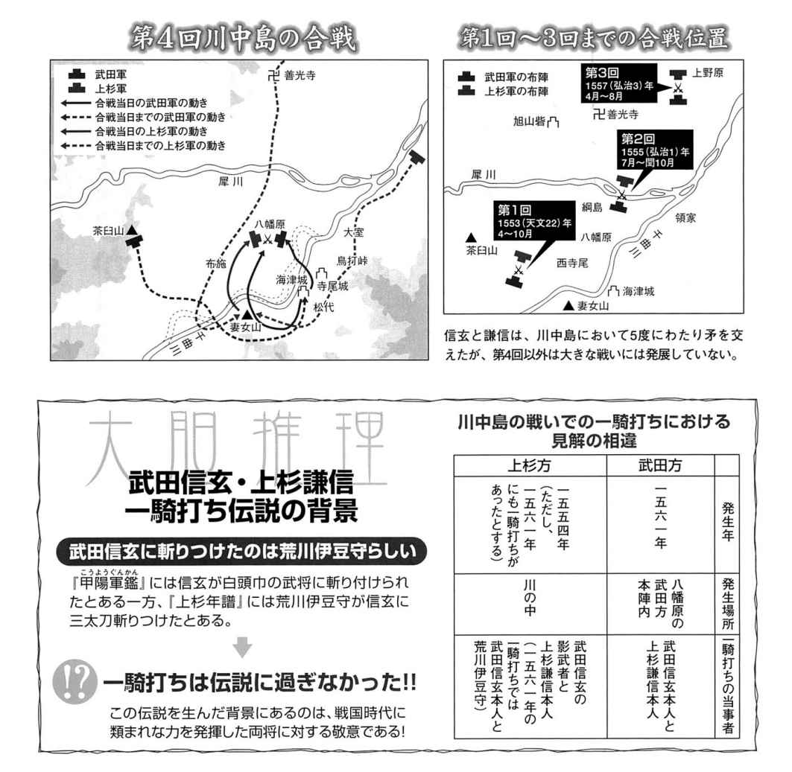
比叡山の焼き討ち事件
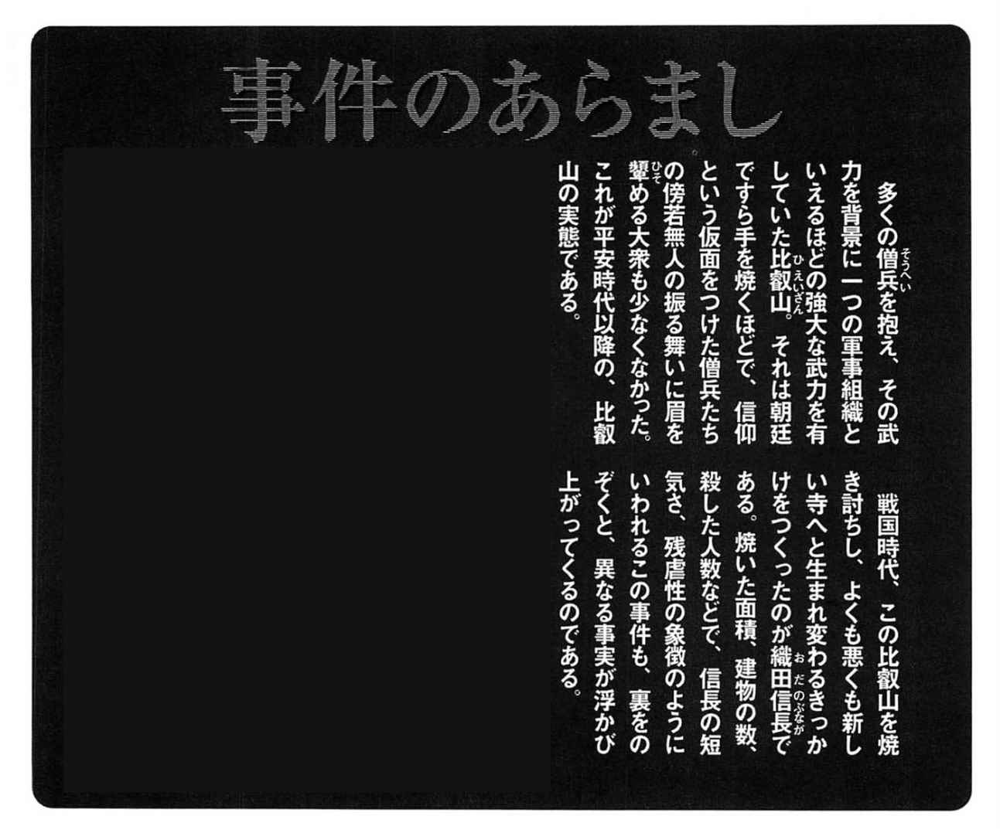
実際は比叡山を焼き討ちしていなかった
織田信長が比叡山に焼き討ちをかけたのは、比叡山が信長と敵対する大名たちに力を貸したからだと伝えられている。天下統一を 目 論 む信長にとって、自分に歯向かう 浅 井 ・ 朝 倉 軍、そしてこれに味方する比叡山は、腹立たしい存在だった。
ことに「寺」という宗教的権威を笠に着て、武力を誇示している僧兵たちを、許せない存在だと考えるようになっていったようである。
信長自身は信仰心や宗教心がうすかったといわれているが、そもそもこの時代の僧兵は、もはや僧侶とよべるような存在ではなかったことがわかっている。 肉 食 、 女 色 がはびこるばかりか、ときには略奪にも及び、僧侶としての 戒 律 などどこ吹く風という振る舞いだった。
そんな具合の寺ならつぶしてしまえばいい、というのが信長のたどり着いた答えだ。配下の武将たちのなかには、仏罰を恐れてしり込みする者もいたというが、信長は強引に焼き討ちを実行させたと伝えられている。
一五七一（元亀二）年九月十二日のことであった。
『 信 長 公 記 』は「 根 本 中 堂 をはじめ四五〇〇の建物を焼き、仏像や経巻を焼き払った」と記す。「僧、子供、 上 人 などは素足で逃げ回ったが、すべて捕らえ首を打ち落とした」ともあり、その数は三〇〇〇人などといわれている。
寂れてほとんど人がいなかった比叡山
これは事件とほぼ同時代に残された記録ということになるが、実際にはそれほどひどいものではなかったようだ。
この時代には、比叡山といえども寂れかけていて、僧侶たちの活動の本拠地は、山中ではなく山麓の 坂 本 の町に移っていた。山のなかにいた僧侶を含む人の数も、三〇〇〇には遠く及ばない人数だったという。
それに何より、比叡山の山中には、それほどひどい焼き討ちにあった痕跡が見当たらない。
信長の攻撃は記録されたほどには残虐なものでなかったようである。
残された遺物の検証により、どうも『信長公記』に描かれた焼き討ちは、坂本で行なわれたもののことで、虐殺も比叡山山中でなされたのではなく、近くの八王子山でのことだったらしいことがわかった。
では、いったいなぜ『信長公記』は比叡山焼き討ちについて記してあるのだろうか。焼き討ちについての記事は誇張されたフィクションだ、という見解が出されている。わざわざ信長の残虐性を 喧 伝 したいがために記されたのだろうか。それともほかの意図があったのだろうか。
真相は
のままである。
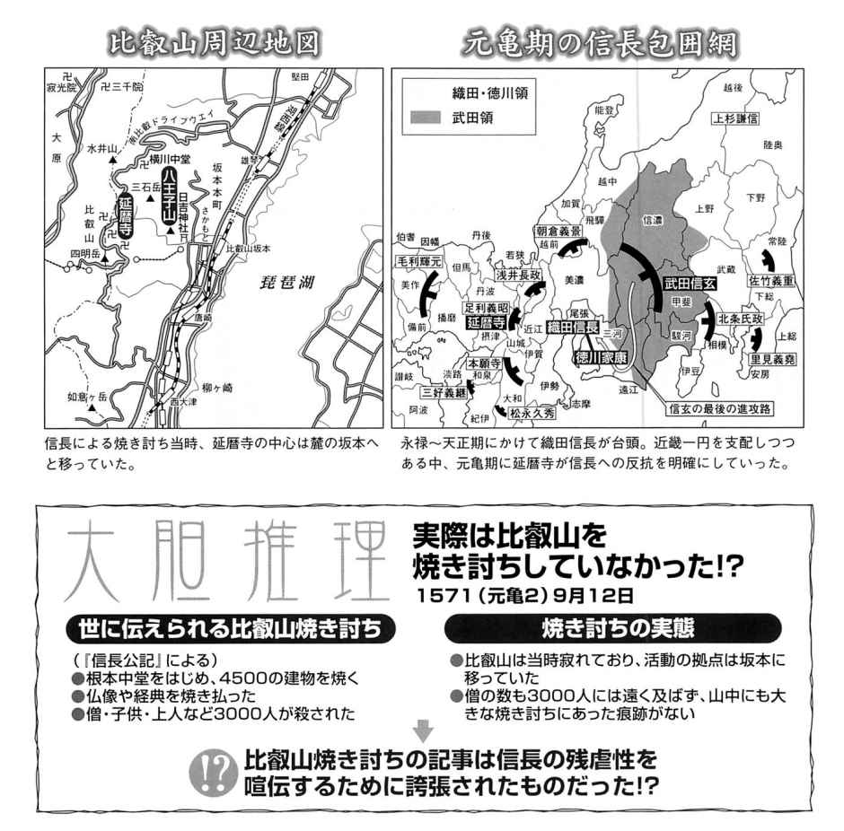
本能寺の変の黒幕論
光秀は信長の悪政を阻止しようとした!? 本能寺の変の真実とは？
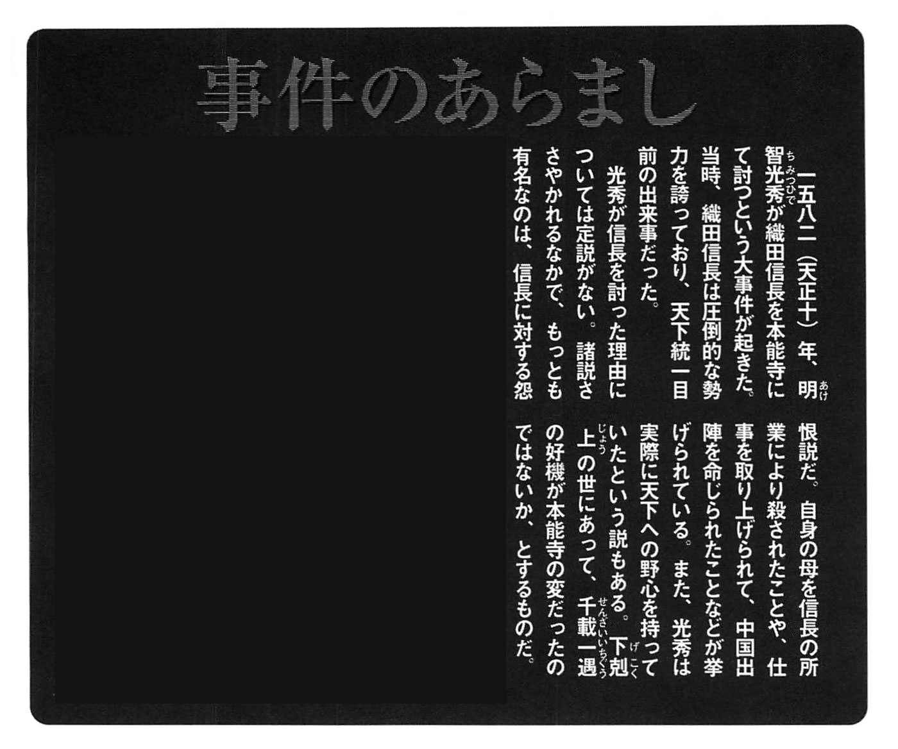
光秀が敬愛する朝廷をないがしろにした信長
諸説のなかに、ひときわ異彩を放つものがある。光秀は天皇のために信長を討ったという説だ。
光秀は、朝廷や公家との間に広い交流を持っていた。信長に仕える前は室町幕府の将軍・足利義昭に仕えており、さらに織田家に仕官したのちも京都奉行の任に就いていたからだ。
宮中の女官の日記『 御 湯 殿 上 日 記 』によると、光秀は 正 親 町 天皇から直接、馬や鎧、香袋を 下 賜 されたという。信長を通さず、天皇から直接物品をたまわったことからみても、朝廷との関係は親密だったことが想像できる。そのため、光秀は主君の信長よりも、むしろ朝廷の方へ忠誠心を持っていたのではないか、との話がある。
そこで浮上したのが、光秀は、朝廷に対して不 な態度をとりつづける信長を取り除くために、本能寺の変を起こしたのではないか、とする説だ。つまり、光秀の個人的な恨みというよりも、朝廷をないがしろにする信長がこのまま天下を取ったのでは、世のためにならないといった危機感によってだろうとする説である。
な態度をとりつづける信長を取り除くために、本能寺の変を起こしたのではないか、とする説だ。つまり、光秀の個人的な恨みというよりも、朝廷をないがしろにする信長がこのまま天下を取ったのでは、世のためにならないといった危機感によってだろうとする説である。
正義の味方をきどっていた光秀
光秀を憤慨させた信長の行為というと、たびたび正親町天皇に皇位を退くようにせまっていたことが挙げられる。信長は正親町天皇を退位させ、ゆくゆくは信長の猶子にあたる皇子を天皇とすることで、権力を握ろうという狙いがあったという。また、信長は、朝廷が定めていた暦に対しても難癖をつけていた。当時、暦を決定するということは、「時を支配する力」を持っていることを意味し、これは天皇の特権に属することだった。
その天皇の特権である暦に異議を申し立てたということは、すなわち、天皇に対して異議を申し立てたことにほかならない。こうした信長の朝廷に対する行ないを不
なものと受け止めていた光秀は、ついに信長を討つ決意をする。
本能寺の変当日に光秀が書いたとされる書状には、「信長父子の悪虐は天下の妨げ」という文がある。
従来、この文は、信長の悪行といわれる比叡山焼き討ちなどを指すと解釈されてきたが、本当は信長の行ないに天皇が迷惑すると解釈すべき意味のものだというのだ。
そうした光秀の思いを示すかのように、本能寺の変で光秀は、家臣に「敵の首はすべて討ち捨てにするようにと命令した」と『本城惣右衛門覚書』にある。信長の首だけを目標にすることで、横暴だった信長を自分が成敗したということを、皆に知らせたかったからだという。光秀は自分の役割を、天皇のためにこの暴君を抹殺することにあると考え、その結果、本能寺の変を起こしたというのだ。
はたしてどの説が真実に近いのだろうか。事実は本能寺とともに、煙となって闇に消えてしまった。
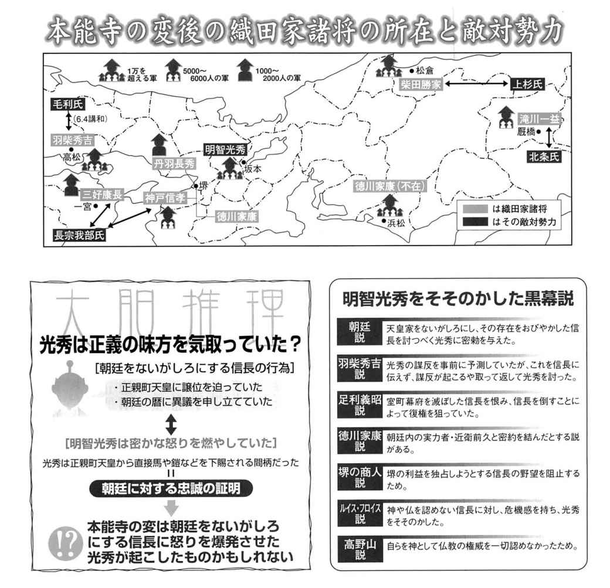
由井正雪の乱
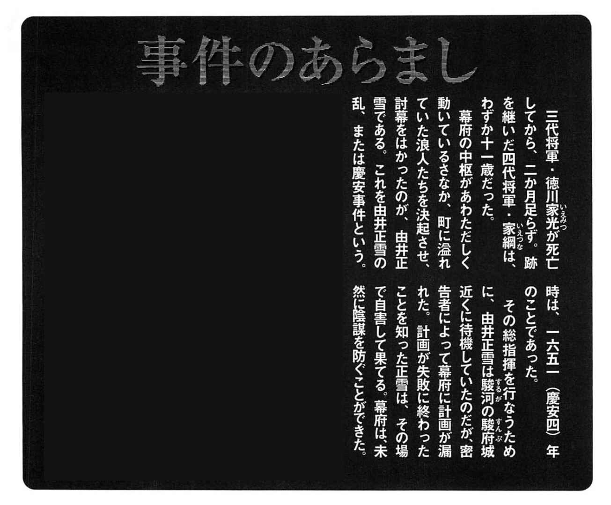
おそまつな結果に終わった軍学者の反乱計画
由井正雪は、江戸で軍学を教えていた軍略の専門家である。
当時、多発していた大名 改 易 のあおりを受けて浪人になってしまった武士たちに、軍学を教えていた。正雪は門人たちを大名家に仕官させた実績もあり、そうしたこともあってか、正雪の門下生は三〇〇〇人に達したともいわれている。これらをふまえると、正雪の軍学に関する知識は並々ならぬものだったといえよう。
それにしては、事前に密告者によって陰謀が発覚し、あっさりと自害してしまうのは、ずいぶん、おそまつな結果だ。そのため、軍略の専門家なら、あらゆる不測の事態に備えているはずだとの指摘の声もあがっている。
そこで浮上したのが、この乱の首謀者は正雪ではなく、ほかに黒幕がいたとする説だ。
正雪の背後で蠢く徳川御三家の当主
その黒幕とは、徳川家康の実子で紀州藩主の徳川 頼 宣 である。
浪人に軍学を教えていた正雪と、紀州藩主の頼宣には、一見、何の接点もなさそうに思える。ところが、実は正雪の門下生が多く紀州藩に仕官していたのだ。
当時は太平の世の中で、武芸よりも学問が尊ばれる風潮が広まっていた。そうした世の中にあって、武芸を大切にしたのが頼宣である。彼は、高名な軍学者だった正雪を紀州藩の江戸藩邸に招き、兵書の講義をさせたこともあったという。
この頼宣は、太平の世の大名には珍しい、豪胆な性格の持ち主で、まるで戦国武将のようだったといわれるほどの人物だった。
これらのことから、戦国武将の気質を持つ頼宣と、優れた軍略家である正雪が意気投合、この騒動にも頼宣がかかわっていたのではないかというのである。その親密な関係をあらわすものとして、正雪が使っていた頼宣発行の通行手形が挙げられる。これは、頼宣が正雪を庇護していた証拠を示すものである。
『 徳 川 実 紀 』によると、正雪の乱発覚後、大老 酒 井 忠 勝 は、正雪の遺品のなかにあった、頼宣の印が押されていた文書を手に入れたという。その頼宣の印とは、正雪と頼宣の密約について押されたものだったとされるが、正雪は遺書のなかで、「これは私が偽造したもので、紀州公は何もご存知ないことだ」と残している。しかし、かえって正雪が頼宣をかばったのではないかという憶測をよんだ。
正雪との関係を疑われた頼宣は、江戸城内で 詮 議 された。
頼宣は、「私の印を偽造するとは愚かなことを」と 一 蹴 したが、その後、十年間にわたり、紀州へ帰ることを許されず、その間、江戸に留まらなければならなかった。
本当に頼宣は無関係だったのだろうか。事実は今もなお闇に包まれている。

天草四郎生存説
海上を歩いたという美少年の行方は!? 神の子・天草四郎の生存説
事件のあらまし
一六三七（寛永十四）年、肥前国（現在の長崎県）島原と、肥後国（現在の熊本県）天草で、一揆が起きた。「 島 原 の乱」である。このとき、二万とも三万ともいわれる人々を指揮したのは、十六歳の美少年・ 天 草 四 郎 時 貞 だった。
一揆軍は廃城になっていた原城に籠城したが、一〇万にも及ぶ幕府軍に兵糧攻めにあう。しかも、オランダ軍の加勢を得た幕府軍は、海上と陸地からの一斉砲撃を行なった。四郎は、肥後藩士・ 陣 佐 左 衛 門 によって討ち取られ、その生涯を終えた。
以上が、島原の乱の首謀者・天草四郎時貞の生涯とされる。しかし、「神の子」とまで崇められた四郎ゆえに、その後も生存していたとする説は今なお消えていない。
四郎首実検にまつわる二つの
「島原の乱」を起こしたキリスト教信者（正確には、一度無理やり改宗させられているので、「立帰り」キリシタンという）たちは、兵糧攻めにあうが、食料が底をついても降伏しなかった。
一揆勢の激しい抵抗は幕府軍をてこずらせた。乱の当初に幕府軍を指揮していた 板 倉 重 昌 が討ち死にしたほどの抵抗であった。
一揆勢の精神的柱となったのが天草四郎である。四郎は神の使いとされ、籠城中はミサと説教を行なって、人々を鼓舞していた。
四郎は特別な存在であったため、「島原の乱」の平定後も、「四郎は死んではいない」といった がささやかれた。
がささやかれた。
その根拠となったのが、四郎の最期である。四郎は肥後藩の陣佐左衛門によって討たれたことになっているが、陣佐左衛門自身が四郎であると確認して切り捨てたわけではない。一般にいう四郎討ち死にのときの模様は次のようであった。
一揆勢を壊滅に追い込んだ幕府軍の第三次総攻撃のときに、四郎が住んでいるとされる本丸に火矢が打ち込まれた。そのとき、なかから出てきた少年がいて、陣佐左衛門が切り捨てたのである。
後に、この少年が四郎だと判明した過程は以下の通りだ。
討ち取られた少年の首は、総司令官の 松 平 信 綱 のもとに運ばれた。
信綱は、四郎の母を連れてきて、首実検を行なったのだが、母は、「四郎は天からきた子供だから、天に戻っていったに違いありません」といって、どの首が四郎のものか、指し示そうとはしなかった。
そこで信綱は、首を次々と母に見せた。そのうちの陣佐左衛門が切り捨てた首を見て、母が泣き崩れたので、四郎であると断定した。
だが、そのとき母が「四郎」と名をよんだわけではない。あくまでその首を見て泣いたというだけが事実である。
また、四郎断定の方法として、 山 田 右衛 門 作 を使うという手があった。右衛門作とは、元一揆勢の者だ。しかし、一揆勢が不利とみるや、幕府方に寝返った人物である。そのため、幕府の総攻撃で一揆勢は壊滅したが、山田右衛門作は生きながらえていた。
右衛門作なら、四郎の顔を知っているはずである。しかし、右衛門作は牢屋に閉じ込められたままで、首実検に駆りだされることはなかった。
なぜ、右衛門作を首実検に立ち会わせなかったのか。そして本当に四郎は討ち死にしていたのか。 は深まるばかりである。
は深まるばかりである。
応天門の変 放火犯の
忠臣・伴善男の悲劇 彼が放火犯に仕立て上げられたのはなぜか？
藤原氏による他氏排斥の犠牲者たち
伴善男は、さかのぼれば大和朝廷で重用された 大 伴 一族に血脈を通じる名門の出身だ。かつては栄華を誇った一族も、奈良時代末期以降は活躍の場がなく、平安時代中期のこの頃、伴善男が大納言の地位にあったことは、一族のなかでも異例といっていい。
本人に能力があったのは当然として、伴善男の出世は実力者である藤原氏に引き立てられてのものでもあった。
伴善男が密告した源氏は、藤原氏と朝廷内の勢力を二分するような存在で、だからこそ藤原氏に恩義のある伴善男は、藤原氏のために源氏の足を引っ張る密告をしたとも考えられる。それに左大臣の源信が失脚すれば、官職に一つ空席ができる。現状のままではあまり出世が望めそうもない伴善男にとっては、千載一遇の好機と映ったのかもしれない。
しかし、源信が罪に問われることはなかった。伴善男による密告から数か月後、逆に伴善男こそが放火犯だとして流罪に処されてしまったのである。
実は、伴善男こそが真犯人だったのだろうか。ここにも謀略の影が見え隠れする。
伴善男失脚の背後にある藤原氏の思惑
伴善男が訴えた源信は、藤原氏のライバルとはいえ、太政大臣の地位にあり事実上の摂政でもあるときの実力者・藤原良房にとっては妻の兄にあたる。本当に源信が犯人であったとしても、へたに義兄の罪を問えば、身内として良房自身にも影響が出かねない。
それで善男の訴えを無視して、源信の無罪を主張してしまったのだ。さらに、良房は気付く。源信を訴えた善男は、彼が引き立てたのだから、その優秀さはよく知っている。
それに対し、太政大臣の自分は病気がち。罪には問われなかったものの、密告を受けた左大臣の源信は、実は引退同然で、右大臣を務める藤原 良 相 は力量不足だ。放置すれば善男が政権を握るのは確実である......。
そう考えた良房は、善男を応天門放火の真犯人に仕立て上げ、政治の中枢から追い出したと考える説もある。
善男こそが真犯人だと訴え出た人物の証言を取り上げての有罪判定だったとはいえ、この訴えた大宅鷹取という人物は、もともと善男に私怨を抱く相手だったともいわれている。はたして証人になるべき資格があったのかどうか。
たとえ眉つばものの訴えだったとしても、ゆくゆくは善男を追い落とさねばならないと考え始めた良房には、渡りに船だったことだろう。
この事件により古代からの有力豪族である紀氏・大伴氏は政治の表舞台から完全に姿を消し、藤原氏の世がやってくるのである。
足利家皇位簒奪事件
野望は尽き果てぬ！ 義満は足利家による王国をつくろうとしていた!?
志半ばで急死した義満
今 谷 明 氏の『室町の王権......足利義満の王権 簒 奪 計画』によると、義満の野望とは、将軍と天皇の権限を統合した「日本国王」になることだったという。
そのための 布 石 として狙ったのが天皇位である。
義満が天皇の位に執着していたであろうことをうかがわせる事例は多い。
義満の私的儀式はすべて朝廷の儀式に準じて行なわれ、受戒のときには、天皇用の 八 瀬 童 子 の 輿 に乗っていた。また、摂関家の子は義満から一字をもらって改名（臣下であることを示したもの）しており、このような事例は挙げればきりがない。
さらに義満は、息子である 義 嗣 を天皇にしようと図った。
義嗣の兄である 義 持 に将軍職を継がせれば、兄弟で将軍と天皇になるというわけである。
義嗣を皇位継承者にするために、義嗣を 参 内 させ、一四〇八（応永十五）年、親王に準じた元服式を行なった。
また、当時天皇であった 後 小 松 天皇の母が亡くなったとき、義満の正室 日 野 康 子 を天皇の 准 母 としている。
准母とは天皇の生母と同じ地位を与えられた女性のことで、これにより、義満は天皇の准母の夫という身分になり、義満の子どもは天皇の准兄弟となった。天皇が兄弟に位を譲ることは普通であり、あとは時期を見て後小松天皇より義嗣に天皇位を譲ってもらえばよいことになる。
ジリジリと朝廷に迫る義満の影
加えて、義満の「王位簒奪計画」を裏付けるものとして、明の皇帝（ 建 文 帝 ）と交わした国書が挙げられる。
義満が建文帝へ宛てた国書には「 准 三 宮 道義」と署名したが、明帝からの返書には「日本国王源道義」と書かれている。
これは、明帝から正式に日本の国王として認められたことをあらわしている。
このとき、明帝からの詔書と大統暦が義満に授けられた。暦を授けられるということは、すなわち明帝の臣下と認められたことを意味する。
それにしても、義満はなぜ天皇位に固執したのだろうか。
一説によると、義満は「天皇家は一〇〇代で途絶える」という伝承を信じたからだといわれている。この伝承は、『古事記』に「 百 の王、相続ぎ、剣を 喫 み、 蛇 を切りて、 万 ノ神、 蕃 息 り給ひ」とあることから生まれた。後小松天皇の父である後円融天皇がちょうど一〇〇代目であったことから、それに取って代わろうとしたのではないかというのである。しかし、義満は息子を天皇の猶子とした直後に急死し、その野望は達成されなかった。
徳川信康切腹事件
信長への手紙の内容は本当にただのグチだった？
この事件の引き金となった徳姫のグチは、信長に送ったとされる一五七九（天正七）年の手紙に記されている。そのなかには、一二か条にわたって信康と築山殿の悪口が綴られていた。そこに二人が武田家に内通しているとの情報が含まれていたのだ。この手紙は徳川家の 重 鎮 である 酒 井 忠 次 が 安 土 城 の信長に届けたとされる。信長は忠次に一二か条の話の真偽を確かめたところ、忠次が全て認めたため、信長は家康に二人の処刑を命じることになる。
しかし、この事件には不可解なことが多い。このようなグチを、本当に徳姫が発したのか、疑惑が持ちあがっているのだ。
彼女と信康の関係は決して冷え切ったものではなく、むしろ仲睦まじいくらいであったと伝わる。ただのグチだけならまだしも、武田家と信康が内応しているなどと信長に伝えたら、当時の状況からどういった結果を招くか、想像がつかなかったのだろうか。むろん、事実としても信康と武田家が通じていたということは考えられない。
一枚岩でなかった徳川家臣団
そこで、徳姫が父に訴えたかったのは、男児がいないことで側室を持つことになった信康へのグチで、側室を持つように信康に勧めた築山殿の悪口は書いたとしても、伝えられているような一二か条にも及ぶ内容ではなかったのではないかという話がある。
この一二か条というのは、徳姫の手紙を届けた酒井忠次が一条ごとに信長から確認を迫られたとされるが、そのすべてを徳姫が書いたのかどうか疑わしい。さらに疑問を抱かせるのは、主君の嫡子・信康に不利となる証言を、なぜ忠次が行なったのか、ということだ。
この疑問に答える説として、信康たちが徳川家臣団の勢力争いに巻き込まれたため、と唱えるものがある。
この頃、徳川家臣団のなかでは酒井忠次と 石 川 数 正 を中心とした勢力争いがあった。忠次が徳姫の手紙に何らかの工作をして、自分のライバルであり、信康と築山殿との関係が深い、数正の追い落としに利用したのでは、と作家の小林久三氏はみている。事実、この事件のあとに、数正は家康の側から遠ざけられている。
また、歴史学者の 小 和 田 哲 男 氏は、夫の側室通いと姑の嫁いびりを告げ、父に甘えようとした私的な手紙を、信長が公的なものにすりかえたのでは、と説いている。
小和田氏は、家康との同盟が堅固なものかどうか試したかった信長が、あえて築山殿や信康を罰することを要求して、家康の忠誠心を試した可能性があるというのだ。
いずれにしても、事件は信康の切腹によって終結。忍耐の男といわれる家康が選んだのは、ここでも忍耐の一語につきたのだった。
千利休切腹事件
経済戦略から利休を選び出した家康
利休追放の陰には、徳川家康がいたともいわれている。実は、利休は家康のスパイであり、そのことが発覚したために、秀吉に追放されたというのだ。この説を唱えるのは歴史学者である
 口
清
之
氏である。
口
清
之
氏である。
家康は、経済の発展が、国づくりに欠かすことのできない要素であることを知っていた。そうなると、何としても欲しいのが、商業の街として発展する要素をそなえていた大坂だった。
しかし、大坂は秀吉のお膝元である。秀吉も大坂の重要性に気づいていた。正攻法でいっては、自分のものになる可能性は低い。
そこで、家康が考えたのは、秀吉の政策により堺から大坂へ移って活躍していた商人たちと、 誼 を通じることだった。当時、秀吉は大坂を発展させるために、堺の商人たちを大坂へ移住させ、経済活動の促進に力を入れていた。
その一翼を担っていたのが、利休である。利休は秀吉の側近であり、信頼も厚い。もし家康になびいてくれたなら、これほどスパイとして重宝できる人物はいなかった。
さらに、堺商人のなかでも、利休は出世頭である。利休なら堺の商人たちに顔がきくから、家康にとって、大いに頼りになる存在だった。
家康にとってみれば、利休を味方につけて堺の商人と手を結ぶことは、この上ない得策だったのだ。
堺の商人たちも、家康に加担すれば、家康領でとれる豊富な農産物の販売特権をもらえるとあって、損な話ではなかった。
加えて、当時、武士のたしなみだった茶の湯の第一人者である利休のもとには、大名たちがよく出入りをしていた。大名たちの動向を探るという面でも、家康にとって利休は都合のいい人物だったわけだ。
家康に加担した利休の思惑
利休にしても、秀吉の亡きあとに、家康が天下をとるかどうかはともかく、表面上は秀吉に従い、水面下で家康とのパイプをつないでおけば、豊臣と徳川、どちらの天下がつづこうとも、自分にとっては都合がよい。そうした商人ならではの損得勘定で、家康と通じた公算は大いにありうる。
ところが、家康と内通していたことが秀吉に気づかれてしまい、利休は追放の身になった。周囲の者が、秀吉に許しを請うように勧めたにもかかわらず、利休が自害したのも、秀吉が決して自分を許すはずがないというのを感じていたからともとれる。
果たしてこの説が正しいのかどうか、本当のところはわからない。
ちなみに、家康はのちに千家に対して一万石を与え、茶道の 家 元 としている。まるで利休の恩に報いるかのようにも思える一事だ。
徳川家康替え玉説
すべてはこの一冊の本からはじまった？ 奇妙な本は奇妙な秘密を持っている
大活躍した家康は全く別の人物だった
『史疑徳川家康事蹟』によると、後世伝えられている徳川家康は、 願 人 の 世 良 田 元 信 のことであり、青年時代の家康がまだ松平元康と名乗っていた時代に入れ替わったという。願人とは、依頼者に代わって神仏を参りにいく、僧の姿をした 門 付 芸人のことである。人家の門の前に立ち、芸をして報酬を得ていた人々の仲間だ。
この奇説、残念ながら証明する手立てがないので、これ以上踏み込むことができない。
しかし『史疑徳川家康事蹟』自体については興味深い話がある。
この本は発売当初から注目を集めたにもかかわらず、ほどなく書店から姿を消してしまい、増刷されることもなかったのである。
何らかの圧力が加わった絶版疑惑
これに関し、明治時代の社会にも影響力を持ちつづけていた徳川家の圧力によって、本が抹殺されたのではないかという説がある。
それとは別に、もう一つの視点を示してくれるのが 礫 川 全 次 氏だ。氏の『史疑幻の家康論』によれば、この本は家康替え玉論を展開しながらも、実は明治政府の要人たちのことを記しているというのだ。
礫川氏はこの本を、明治政府の高官たちが、下級武士や 俄 官軍の出身ということを、家康論に名を借りて、 揶 揄 しているものではないかと主張する。そのため、当時の時局に触れる内容だから、政府により発禁本扱いとしたのではないかと見ている。家康替え玉論において、家康と入れ替わった青年が、もともと高い身分の出身ではなかったと設定してあるところが重要らしい。この説が正しいとすれば、家康替え玉論という、実に衝撃的な内容を記しながらも、やはり衝撃的な政府要人の揶揄を行なっているこの本は、まさに奇書とよぶにふさわしい本だろう。
この本とは関係ないが、もう一つ徳川家康替え玉説がある。家康は大坂夏の陣にて、 後 藤 又 兵 衛 に討ち取られていたというものだ。
つまり、大坂夏の陣の翌年に死亡したとされる家康は、替え玉だったということである。
この説の根拠として、大阪府堺市に家康の墓と伝えられる碑が建っていることが挙げられる。
のちに三代将軍・家光が、この寺を訪れていることも、この説を補強する出来事だ。ところが、家康が又兵衛に討ち取られたとする日付よりも前に、すでに又兵衛は討ち死にしていることがわかっている。また、大坂夏の陣の直前にこの寺は焼き払われていることから、この説をまともに取りあげる人は少ない。
悲劇的末路をたどった源義経や豊臣秀頼が実は生き延びていたという説がある一方で、家康のような成功者に、実はすでに死亡していたという説があるのは、なかなか興味深い相違であろう。
慶長遣欧使節 派遣の理由
政宗の真の狙いは幕府乗っ取り計画？
戦国末期の奥州に覇を唱えた伊達政宗は、戦国武将のなかではもっとも遅れてきた英雄という評価を受けている。織田信長、豊臣秀吉、徳川家康と並び、政宗にも天下を取る器量が備わっていた、ということである。
本人もそれを自覚していたふしがあり、家康が幕府を開いてからも、政宗は天下取りの野望を捨ててはいなかった。そのために打った手が遣欧使節の派遣である。
一行はメキシコを経てスペインへ渡り、一六一五（慶長二十）年一月、スペイン国王フェリペ三世に 謁 見 。通商開設と宣教師派遣を要望する政宗の書状と協定条項を奉呈した。
正使である支倉常長に持たせ、このとき進呈された親書には、奥州国の主としてスペインと軍事同盟を結び、徳川家にとってかわる存在になりたいという思いが込められていた。
常長も政宗の思いを承知しており、スペイン国王フェリペ三世に謁見した折、政宗が次期日本国王になる立場にあること、スペイン国王の同意があれば、すぐにでも実力で徳川家を倒し、将軍になるつもりでいることなどを伝え、同盟の調印を乞うたと、ヨーロッパに残された史料は語る。
政宗の娘婿は、家康の六男の 松 平 忠 輝 だったから、家康、秀忠と引き継がれていた将軍位に忠輝を据え、自分は鎌倉幕府の執権のような立場で政治の中枢にいようとの 目 論 見 があったのかもしれない。
見破られていた梟雄の極秘計画
ただ、幕府は政宗の思惑を知っていたふしがある。仙台に滞在していたイタリア人宣教師アンジェリスの残した書簡には、天下殿（将軍のこと）は、政宗がスペインに派遣した使節の真の目的が、徳川家に謀反を起こすためにスペイン国王と同盟を結ぶことにあると承知していた、とある。
政宗が幕府に対し謀反を企てていたことをにおわせる史料はこれだけだが、幕府も政宗の計画に気づきながら、その計画の存在を証明する材料が何もないため、直接政宗を罰することはなかった。この辺りが政宗の巧みなところで、使節が全くなかったかのように証拠を消してしまっているのである。しかし、遣欧使節の派遣と前後して、政宗と関係があったとされる大久保長安の一族や、松平忠輝が相次いで失脚している。これらが、幕府の政宗に対する 恫 喝 だったのかもしれない。
支倉常長が渡欧したのが一六一三（慶長十八）年、帰国は一六二〇（元和六）年のことだが、その間、大坂冬の陣・夏の陣が起こって豊臣家は滅亡し、徳川体制はゆるぎないものとなっていた。
結局、スペインとの同盟締結も失敗に終わり、政宗の野望が花開くことはなかった。
明暦の大火 出火の原因
本妙寺火元引き受け説にまつわる諸説
江戸の町の大半が焼け野原になったため、幕府は新たに火災に強い町をつくるべく、大名屋敷に移転を命じたり、寺社や 遊 郭 も代替地を与えて、郊外へと移していった。
にもかかわらず火元である本妙寺は、なぜか元の場所に再建が許され、復興している。
しかも、のちに寺格も上がったというこの異例さに、実は本妙寺が火元ではなく、火付けの犯人役を引き受けたのではないかという推測に基づいた諸説が生まれることになった。
その一つが放火説だ。
当時一番いわれたのが、反逆分子による騒乱を狙った放火説だという。
明暦の大火が起きた頃は、 由 井 正 雪 の乱から六年後ではあったが、江戸の市中にはいまだ浪人も多く、幕府に不満を抱えた者が放火したのではないか、というものである。
火事の騒ぎのなか、盗み・略奪などが横行したため、こうした風聞が流れたようだ。
そのため、幕府が庶民を不安がらせないよう、放火説打ち消しのために、本妙寺に火元として名乗らせたというのである。
一方、幕府自身が放火犯だとする説もある。ふくれあがる江戸の町を整備したいのだが、すでにある家や建造物を壊すことを庶民に承知させることは困難だ。
そこで、焼いてしまえばすむとして、都市計画の担当役人が本妙寺の住職に、寺に火をつけるよういい含めたというものだ。
実際に明暦の大火の直後から、待ってましたといわんばかりの、迅速な区画整理が実行されている。道路の改修や橋の新設、八丁堀や日本橋、神田付近にあった寺社を、浅草や目黒、深川といった場所に移転。さらには日本橋にあり、江戸の発展とともに市街地の中心に位置してしまっていた 吉 原 を浅草に移転している。
毎年届けられた阿部家からの供養料の
ところで、火事後の本妙寺の記録には、毎年決まって老中の 阿 部 忠 秋 から米一〇俵が寄贈されたとある。大火の供養料という名目だ。けれども、幕府はすでにこの火事の供養のために 回 向 院 を建てているから、今さら別に供養料を出すのもおかしい。
ここから推理して、阿部邸が本妙寺の近隣にあったということから、真実は老中家での失火が原因だった火事を、幕府の名誉にかかわるとして、寺が身代わりを引き受けたのではないかという説もある。
阿部家から本妙寺への供養料寄進は幕府崩壊後も途切れることなくつづき、なんと関東大震災の年までつづいたらしい。
明暦の大火に、何らかの形で、幕府か幕府要人がからんでいた可能性を疑わせる記録といえよう。
大塩平八郎の乱 真相の
民衆を救うために決起した...... ところが事件の真相は？
幕府の腐敗に立ち向かった正義の味方
平八郎の蜂起の原因は、天保年間（一八三〇～四四）に入って繰り返された 飢 饉 のため、米不足に庶民が苦しんでいたからとされている。与力職を息子に譲って隠居、自宅で塾を開いた彼には多くの門人がおり、その若者たちの志の高さに比べ、役人のだらしなさに憤りを感じていたらしい。役人たちは、米不足のために米価が二倍に高騰しているのに、何の策も打たず、商人と結託して自分たちだけが利をむさぼることに臆面もない。そんな現状を何とかしたいと考えたらしく、平八郎は意見書を奉行所に提出している。この行動は、引退した与力が政治に口出しをするなと、逆に叱られるだけだった。
そのうち彼をさらなる行動へと駆り立てるような状況が展開する。大坂の米不足をよそに、町奉行が江戸への 廻 米 に力を注ぎはじめたのである。幕府の歓心を買いたいための行為だと、平八郎はこの件に関しても建白書を提出するが、再び無視されてしまった。ここに及んで、もはや武装蜂起しかないと決意した平八郎が、門弟や近隣の農民に檄を飛ばすことになる。
こうして立ちあがった平八郎だが、一時は三〇〇人もの民衆が従うものの、鎮圧軍の前では 烏 合 の衆でしかなく、乱は一日で終焉した。そして決起から四十日後に、平八郎は息子とともに自殺した。
何の成果も得られずに終わった乱にもかかわらず、「民衆の救済」という旗印が共感をよび、大塩平八郎は以後も長く語り継がれる英雄となった。
大坂東町奉行所の火薬庫だった大塩
ところが、平八郎の決起は決して民衆の怒りの代弁者としてではなかったとする説もある。
平八郎の塾に多くの門弟が集まるほど、彼は与力時代に実績を残していた。そのため自意識ばかり強くなっていて、引退後も意見書や建白書をたびたび提出して影響力を行使したかったのではないかという。それを叱責され、無視されたことに腹を立て、反旗を翻しただけだとするのがこの説だ。
これは江戸学で知られた 三 田 村 鳶 魚 が唱えているもので、平八郎決起までの行動をつぶさに検証した結果、得られた答えとしている。
平八郎の行動を見てみると、塾で居眠りをした教え子をキセルで殴りつけたという事実もある。平八郎はもともと高井実徳という大坂東町奉行のもとで与力を務め、高井の引退とともに、自身も引退した。しかし、その次の奉行 矢 部 駿 河 守 、さらにその後の 跡 部 山 城 守 に対しても意見を出しつづけている。高井、矢部はそんな平八郎を上手く使ったが、跡部は意見を 悉 く無視したようである。大塩が反乱を起こしたのもこの跡部の在職中であった。鳶魚のいうことが本当なら、幕末の美談を見る目も少々変わってしまうだろう。
シーボルト事件
シーボルトがスパイなら間宮林蔵もスパイ
シーボルトが日本にもたらした動・植物学、地理学などの自然科学の知識は、今も高く評価されている。同時に、彼は日本で集めた様々な文物を、雇い主であるオランダ政府に届けている。
オランダ政府が、シーボルトに日本に関する情報を手に入れさせることを任務として与えていたことは、よく知られている。蘭学を学ぶ若者や幕府お 抱 えの学者たちと、彼らから情報を得ていたシーボルトとは、持ちつ持たれつの関係だったといえるだろう。
幕府役人の一人、 高 橋 景 保 という 天 文 方 が、オランダ商館長の江戸参府に従ってきていたシーボルトに会い、洋書を譲り受けたお返しとして、禁制品である「 大 日 本 沿 海 輿 地 全 図 」を渡した。これが事件の序幕である。
全く関係のないところで動いていた権力
シーボルトがこの地図を持って帰国しようとしたことが幕府に露見し、スパイ容疑の決定的証拠となるのだが、幕府に知られたきっかけは間宮林蔵が密告したためだという。蝦夷地探索や樺太探検で知られた間宮林蔵も学者として、高橋と同時期に江戸でシーボルトに会っている。ところが、間宮の行動は幕府の意を受けてのものだとする見方がある。
シーボルトはそれに気づかず、高橋景保への手紙を間宮に託したことで墓穴を掘ることになる。間宮は高橋から受け取った手紙を幕府に届けた。これにより、高橋とシーボルトの密接な関係を幕府が知ることになる。幕府により、帰国準備をしていたシーボルトの荷物があらためられ、地図が見つかったのは、それから数か月後のことだった。シーボルトは荷物を没収され、再入国禁止の身となった。
ここまでが、今までいわれてきたシーボルト事件の概要である。しかし、事件以前にも、禁制品を持ち出したオランダ人がいないわけではなかった。それらを見逃してきた幕府が、なぜシーボルトだけを罪に問うたのかという点に疑問がわく。
この
を解く鍵として、ときの将軍
家
斉
の
岳
父
にあたる
島
津
重
豪
の存在に注目する説がある。
シーボルトと親交を結んでいた重豪は、以前から密輸を行なっているのではないかとの、疑いをもたれていた。また、岳父という立場から政治に口出しする重豪を、うとましく感じていた将軍が、彼を牽制するためにシーボルトを見せしめにしたとすれば、シーボルトの罪をことさら問おうとしたことの意味が解けるとする説である。
あまり行動が目に余ると、事件に連座して罪が及ぶかもしれないと重豪をおびえさせようとしたのが、シーボルト事件の真相だというわけだ。確かにこのように考えるとつじつまはあうが、今となっては定かではない。

西郷隆盛生存説
西郷生存説とロシア皇太子暗殺未遂事件の浅からぬ因縁とは!?
事件のあらまし
一八九一（明治二十四）年五月十一日、来日中だったロシア皇太子ニコライ（のちの皇帝ニコライ２世）が、琵琶湖遊覧の帰りに、警備中の巡査・ 津 田 三 蔵 に突然切りつけられる事件が起きた。大津事件である。
ニコライは、シベリア鉄道起工式に出席するついでに来日し、約一か月にわたり日本を観光する予定だった。事件後、ニコライは予定を切りあげて十九日に帰国。日本中がパニックに陥った。
逮捕された津田は釧路集治監で病死したが、現役の巡査が警備中に、保護する対象者を狙ったことへの衝撃はすさまじかった。津田は、なぜこの事件を起こしたのだろうか。それとも、裏に何かあったのだろうか。
原因は西郷隆盛にあった？
大津事件の本当の原因は、 西 郷 隆 盛 にあったとする説がある。
西郷隆盛は、一八七七（明治十）年、西南戦争に敗れて鹿児島で自害した。ところが、実は自害などしていなかったという
が流れていた。なぜなら、西郷の首が見つからなかったためである。
西郷は、官軍側が放った銃弾を と腹に受け、
別
府
晋
介
の介錯で自害した。西郷とみられる巨体の遺体は発見されたのだが、首は見つからなかった。
と腹に受け、
別
府
晋
介
の介錯で自害した。西郷とみられる巨体の遺体は発見されたのだが、首は見つからなかった。
そこで、 山 県 有 朋 の命により西郷の首の捜索がはじまった。その際、自害した場所周辺を探し、埋められていた首を発見したとされる。ところが、生前、西郷は大の写真嫌いで、写真は一枚も残っていない。
西郷の顔を知っている者はほんの一握りしかいなかったので、首が本当に西郷のものかわからず、「西郷はどこかで生きているのでは？」といわれつづけることになったのだ。
それからしばらくして、俄に浮上したのが、西郷は生きのびてロシアに渡り、今回ニコライが来日するときに、一緒に帰国するらしいとの
だった。
この
は明治天皇の耳にまで届いたらしく、それを聞いた明治天皇が「本当に西郷が生きていたのなら、西南の役で功績があったとして褒章を授けた者たちから、褒章を返してもらわなければいけないな」と軽口をたたいたという記事が「
朝
野
新聞」に載った。
その記事を呆然とした思いで読んだのが、津田だった。津田は、西南の役では官軍として参戦していた。手を銃撃されて負傷したにもかかわらず奮闘し、勲七等を授かっている。このことが、何よりの自慢だった。
この功績が認められて、滋賀県の巡査という職を得ることもできた。ところが、西郷が本当に帰国すると、勲七等を返還しなくてはならない。そうなると、自分の功績も消え、職も失うのではないかと恐れた。
これほど津田が警察官の職にこだわったのには理由がある。もともと津田家は 伊 賀 上 野 藤 堂 家 の 御 典 医 の家柄だったが、明治維新によってその地位を失い没落していた。
兄は商売で身をたてようとしたが失敗。借金だけが残る。一家の生活費は、津田に支給される月給にかかっていたのである。
もし巡査の職を失えば、一家は路頭に迷ってしまう。なんとしても褒章返還は免れたい......。
そうした切羽詰まった思いが高じての犯行だったともいえるのである。
徐福渡来伝説
日本では伝説の人、中国では歴史上の人物 徐福はどこへ消えた？
中国の正史に現れるふたりの徐福
徐福が登場するのは、 司 馬 遷 が著した『 史 記 』のなかである。「秦始皇本紀」に、紀元前二一九年頃、斉の 徐 市 という人が、秦の始皇帝の命令を受けて、不老不死の薬を探すため、東の海に出かけていったとある。このとき、徐市は童男童女数千人を連れていた。その後、同じ『史記』の「 淮 南 衡 山 列 伝 」に、徐市は徐福と表記を変えて、再び登場する。そこでは三〇〇〇人の人々のほかに 五 穀 の種を持ち、工人（労働者）も連れていったといわれている。
このことから、徐福は、もともと始皇帝のために不老不死の薬を探しにいったのではなく、始皇帝が統治する国にいるのが嫌で、亡命したかったのではないかという説が出てきた。
『史記』のなかで、「徐福」が旅に出るきっかけになったのは、始皇帝に命令されたためとは書かれていない。「秦始皇本紀」以外の章では、徐福自ら始皇帝に対して、「海のなかに三つの神山があり、ここに仙人がいるらしいのです。どうぞ私に人をお与えください」と上奏したとある。つまり、人やお金を用意してくれたら、海のなかにある神山へ行って、徐福自身が不老不死の薬を調達してきましょうといったと解釈できる。
仙人が住むといえば山であるところを、海にあるといったところが、徐福の才覚だろう。
このことが始皇帝の関心をひき、始皇帝は旅の費用を与えた。
帰ってこなかった徐福が建てた国の行方
その後、何年たっても薬を持ってこない徐福は始皇帝に問い詰められる。徐福は「不老不死の薬はたしかにあるのです。しかしそれを取ろうとすると、巨大な魚が守っていて近づけません。どうか弓の名手をお貸しください」と答えたという。たまたまそのとき、始皇帝は、海の神と戦う夢を見ていたこともあり、徐福の言葉を信じて、弓の名手も与えた。
その後、徐福は豊かな土地を見つけて、そこの王となり、秦の国には帰らなかった。
亡命説を唱える人々は、新しい国をつくるには、弓の名手（すなわち武力にすぐれた者）が必要だったため、名手を与えてもらうために、徐福はこの話を始皇帝にしたのではないかと指摘した。
徐福が過ごした土地はどこだったのかについては、二つの候補地がある。中国の 琅 邪 という 山 東 省の港と 江 蘇 省の徐福村である。
とくに徐福村は、米作に適した土地であることから、有力視されている。徐福は五穀の種を持って出港したことから、稲作地帯を選ぶはずだというのである。なお、一九八六年には徐福研究会によって、この地で第一回シンポジウムが開催されている。これが本当なら、徐福来日説は、やはり伝説ということになってしまうだろう。
邪馬台国論争
そろそろ結論がみえてきた!? 「畿内説」と「北九州説」の根拠とは？
江戸時代から続く邪馬台国論争
『魏志倭人伝』には、邪馬台国のほかに 対 馬 、 一 支 、 末 盧 などの国名が記されているが、朝鮮半島からの距離が記されていることで、それぞれ現在の対馬、 壱 岐 、 松 浦 などとおおよその見当をつけることができる。
ところが、「水行十日、陸行一月」とのみ書かれた邪馬台国だけが特定できないでいる。この邪馬台国の場所を巡っては、江戸時代に 新 井 白 石 が邪馬台国の位置を「畿内」、 本 居 宣 長 が「北九州」だと主張して以来、この二つの地域を巡って様々な考察がつづけられることになった。
その位置によって邪馬台国が近畿から九州にいたる領土を誇っていたのか、それとも九州の一国家に過ぎなかったのか、が明らかになる。日本の古代史にとって重要な論点なのである。
ヤマタイという国名から、これをのちの大和朝廷の母体と考えて畿内にあったとする説、また『魏志倭人伝』に倭人が使っていると書かれた道具類の出土分布や大陸に近いという地理的条件から、北九州説、さらには伝説をふまえてもともと北九州にあった邪馬台国が勢力を強めて畿内へ 東 遷 したという説などが入り乱れている。
北九州が候補にあがったのは、『魏志倭人伝』に記述されるほかの国が、九州一帯であることからだ。さらに、当時の道具の発掘状況は、 銅 矛 や鏡、 勾 玉 など、すべて九州からの出土数が近畿地方を上回るのも事実。
ただ「水行十日、陸行一月」という距離は、大陸から北九州までの距離にしては遠すぎる。それが畿内説を後押ししている。
北九州説を優勢にした吉野ケ里遺跡の発見
邪馬台国の女王といわれる卑弥呼は、二三九年に魏の皇帝に親善使節を派遣しており、そのときの聞き書きなのだろう、邪馬台国には楼閣、楼観、城柵を設けた宮殿があるという『魏志倭人伝』の記録は、当時の邪馬台国の姿をうかがわせるものがある。
一方、奈良県 磯 城 郡にある 唐 古 ・ 鍵 遺跡からは、多くの絵画土器が出土しており、土器片の絵には楼閣が描かれたものも少なくない。
なかには権威の象徴である 棟 飾 りを描いたものがあって、遺構から想像される楼閣図とあわせて、邪馬台国の遺跡ではないかともいわれた。
そこで一九八九年に新たに見つかったのが、佐賀県神埼郡の 吉 野 ケ 里 遺跡だ。
こちらも、『魏志倭人伝』が記録した通りの宮室や楼観の跡をうかがわせるところがある遺跡で、再び邪馬台国北九州説を裏付けるものとなった。
吉野ヶ里遺跡の存在は、北九州説をかなり有利に導くものとなっている。
法隆寺再建論
日本最古の建造物・法隆寺 実は後世に再建されたものだった!?
『日本書紀』の記述と矛盾する法隆寺の様式
法隆寺を巡って、再建されたのか、あるいは、そうでないのかといった学説の違いは、「法隆寺論争」とよばれ、一九〇五（明治三十八）年以来、様々な議論がされてきた。
今の法隆寺が再建されたものであるという説の根拠は、天智天皇の九年四月三十日の「暁に法隆寺に出火があった。一舎も残らず焼けた」という『日本書紀』の記述である。そのほか、平安時代の書物『 伊 呂 波 字 類 抄 』『 七 大 寺 年表』に、七〇八～七一四年頃（和銅年間）に再建したという記述もある。
一方、美術史、建築史の世界では、法隆寺非再建論の方が優勢だ。 関 野 貞 氏の「法隆寺 金 堂 塔 婆 及 中 門 非再建論」（『史学雑誌』第十六編之二）では、法隆寺の建築様式が飛鳥時代と同じであることを指摘している。
たとえば、 法 輪 寺 塔や 法 起 寺 塔は天武朝の様式であり、金堂内の 天 蓋 は飛鳥式、金堂の屋根裏からは飛鳥式の 文 様 瓦 が発見されたことを挙げている。
建物の測定基準としては、 高 麗 尺 が使われていたようであり、この寸法は大化の改新以前までしか使われなかったことも根拠としている。
焼失の跡が発見され有力になった再建論
昭和になると、 足 立 康 氏が『法隆寺再建非再建論争史』を著し、関野氏の非再建説をベースに、新説を唱えた。
その内容は、推古天皇時代に建立された法隆寺は、現在の法隆寺ではないとするもの。このときに建立されたのは 若 草 伽 藍 であり、『日本書紀』に全焼したとある法隆寺とは、この若草伽藍を指すというのだ。
現法隆寺の西院伽藍こそ、聖徳太子の死後、太子を 偲 んで建立されたものだとする。
若草伽藍の瓦とされるものは、法隆寺の瓦より古いのではないかといわれていることも、この説の根拠とされた。
ちなみに、一般に法隆寺とよんでいるのは、創建された寺のうち、金堂、五重塔、中門、回廊のある西院伽藍を指す。そのため足立氏は、若草伽藍と西院伽藍が存在していたが、若草伽藍は火事になり西院伽藍だけ残ったと考えたのである。
なお、現在では、若草伽藍跡の発掘や金堂、塔を解体した結果、法隆寺は再建されたものと見なされている。根拠は、以下の通りである。
まず、若草伽藍と西院伽藍の中心線の方向から、二院が同時に建っていた可能性が否定された。次に、若草伽藍跡から出土した瓦は、西院伽藍のものより古いことから、若草伽藍が先に建っていたことがわかる。
この論争については、どうやら決着がついたようだ。
鑑真来朝の真意
苦難に満ちた鑑真の来日の定説
鑑真の来日がどれほど困難に満ちたものだったかを知るには、失明のうえ、六度目にしてようやく渡航に成功したということを知るだけでは足りない。
実は、鑑真の渡日が唐の 玄 宗 皇帝に許可されなかったため、最終的には密航による来日だったことも、彼の渡航がいかに困難に満ちていたかを示すものだ。
けれども、すでに唐で名声を博し、弟子を二〇人以上も抱えていた高僧が、これほどの苦難にさらされながら、どうして日本に渡ることを断念しなかったのか、いささか疑問を感じないでもない。
仏教興隆に熱意を抱いている鑑真の信念がなせることだといわれてはいるが、はたして鑑真の来日への思いは仏教興隆への熱意だけだったのだろうか？
その疑問に答えるような説がいくつかある。
鑑真は、入唐した日本人僧から、聖徳太子の話を聞くに及び、聖徳太子を敬慕するようになった。この聖徳太子を生んだ日本に心を惹かれた鑑真は、渡航の意志を固くしたというものがある。
この説は鑑真と日本人僧の会話を根拠にしているものだが、それ以外には根拠がなく、現在この説は否定される向きが強い。
定説を覆す鑑真来朝の理由
皇帝に反対されたのに密航してまで来日したというのは名目にすぎず、実は、鑑真は唐が日本に放ったスパイだったという説もささやかれている。
かつて唐で正月の祝賀会があったときに、日本と 新 羅 が席次を争い、日本が席を替えさせたという事件があった。このことにより唐が日本に警戒心を持ったため、日本を監視するために鑑真をスパイとして派遣した、というのだ。
今までにない鑑真像を提供する説として興味深くはあるが、この説も定説としてとられるものではない。
さらには、唐の政情に動乱の影を感じ取った鑑真が、亡命したかったために来日したのが本心だとする説まである。
唐の皇帝玄宗が 楊 貴 妃 を寵愛し、政治をおろそかにし始めたのがこの頃なのである。
これらの説がいずれも正しくないとしても、やはり鑑真の強い来日への意志には疑問を感じる。
そもそも、失明していたというのに、自筆署名の入った書状もあれば、筆写された経典の校正作業をしたという話も残っており、まったくの盲目ではなかったようでもある。
とはいえ、鑑真の偉大さにはいささかのかげりも生じない。
鑑真来日から千年以上たった現在、なお語り継がれる鑑真の偉業は、これから千年ののちにも、相変わらず語り継がれていくことだろう。
弁慶架空人物説
あまりに出来すぎた弁慶の伝説
「弁慶は架空の人物である」、この衝撃的な説を唱えたのは、歴史学者の
口清之氏だ。その著書『日本史隠された真相』のなかで検証を行ない、弁慶架空人物説を展開している。
口氏によれば、そもそも弁慶と義経が出会ったとされる五条大橋とは、今の五条大橋よりも北にある粗末な橋だったという。しかも、当時一般的に使われていたのは三条大橋であって、五条大橋を使う人間はほとんどいなかった。常識的に考えると、五条大橋で二人が出会う確率は極めて低い。
弁慶のことをもっともよく描いているとされる『義経記』では、弁慶が熊野別当・弁しょうの息子とされる。ところが、『熊野別当代々記』には、弁慶の名が出てこない。
弁慶の呼称「
西
塔
武蔵坊」とは、
比
叡
山
西塔武蔵坊が由縁とされるが、比叡山西塔には、武蔵坊という建物は存在しない。
口氏はこれらを根拠に自説を主張している。
さらに、義経の時代には、弁慶と名乗る僧侶がいたとする史料はない。
三 谷 茉 沙 夫 氏は『怪の日本史』のなかで、義経の幼名「 牛 若 」に対して、弁慶の幼名が「 鬼 若 」というのは、出来すぎていると指摘している。主人公・義経の活躍を際立たせるために、あえて義経とは対照的な弁慶という人物を描くことで、物語を面白くさせる狙いであったのではないかという。
なお、弁慶という人物は実在したが、逸話のような人物ではなく、のちに様々な逸話が創作されたのではないかといった 折 衷 説もある。
弁慶架空人物説に対する根強い反論
一方、弁慶は実在したという説も根強い。
弁慶の記事は、鎌倉幕府の公式記録である、『吾妻鏡』にみえる。一一八五（文治元）年十一月三日と十一月六日に、その名が記されており、この史料は、信頼できるものだ。
また、『義経記』には、弁慶は比叡山をはじめとして、四国一円の山々を回り、 修 験 道 の修行も積んでいたと記されている。
さらに、比叡山の西塔に住み、法華経に関する説話をわかりやすく話す僧侶でもあったなどと、記述が具体的である。弁慶実在説を主張する人々は、これらの史料を根拠としている。
弁慶の没年は、義経が 奥 州 平 泉 で自殺した 衣 川 の逸話により、一一八九（文治五）年とされる。このとき、弁慶は敵が射る何本もの矢が全身に突き刺さり、壮絶な最期を遂げたといわれているが、はたして弁慶はそのときに死んだのだろうか。
というよりも、その場に弁慶はいたのだろうか。今後も論争はおさまることはない。
坂崎直盛改易事件
千姫を救出した坂崎出羽による暴挙の動機
一六一六（元和二）年、 石 見 国津和野藩藩主坂崎直盛は死んだ。自害とも、家臣による殺害とも言われるが、このあと坂崎家は改易され、代わって亀井家が津和野藩に入ってきた。
坂崎直盛。坂崎 出 羽 守 として知られる彼は、関ケ原の戦いにおいて、主家 宇 喜 多 家と 袂 を分かち、家康についた功績から三万石の大名となった、元宇喜多家の重臣である。
その彼の悲恋物語として、この千姫救出劇と津和野藩・坂崎家改易の因縁が語られることが多いが、俗説にすぎないというのが歴史研究者たちの一致した見方だ。
坂崎が千姫の婚礼阻止を狙って騒動を起こしたのも事実だし、そのために津和野藩が改易になったのも間違いない。
けれども、千姫が大坂城を脱出できたのが坂崎の尽力によるとするのは間違いのようである。実際には、豊臣家側近の 大 野 治 長 が淀殿と秀頼を説得し、二人の助命嘆願のために千姫を家康の陣営へ向かわせたものらしい。
このとき豊臣方と千姫の脱出交渉にあたった堀内氏久の知り合いが坂崎であり、坂崎はたまたま千姫を預けられたに過ぎなかったようなのだ。
ただ、何しろ城を取り囲まれ、大砲が打ち込まれるという、どさくさのなかでのことだ。
確かにこうだったと言い切れる人が少なかったのだろう。信頼できる同時代の史料がほとんどない。
といっても、坂崎が婚礼阻止の騒ぎを起こしたのには、失恋のためではないにしろ、何らかの理由があったはずだ。
仲人の面目をつぶされた坂崎の憤慨
それが、坂崎仲人説である。千姫救出成功を喜んだ家康が、京都に詳しく、知り合いも多かった坂崎直盛に、千姫にいい婿でも見つけてほしいと軽口をたたいたらしい。
これは新井白石の著作で、一六〇〇（慶長五）年から一六八〇（延宝八）年までの間に、徳川将軍家に臣属した諸大名家の系譜と歴代の伝記の集成である『
藩 譜
』に見える記述である。
譜
』に見える記述である。
この家康の言葉を本気にした坂崎ははりきって婿を探し出したのだが、それにもかかわらず、いつのまにか本多家との婚礼が決まっていた。
これでは坂崎の面目は丸つぶれである。
こうして、婿候補にしていた京都の公家に顔が立たなくなった坂崎が、実力で婚礼を阻止しようとしたのが騒動の実態で、話に尾ひれがついて行列への斬り込みになったのだという。
もっとも、この説も真相をついているかどうかは、わからない。結局、この出来事の真相も 藪 のなか、というわけだ。
松尾芭蕉隠密説
旅に使った莫大な費用から生まれた隠密説
芭蕉隠密説が唱えられる根拠の一つに、芭蕉がしばしば行なった長期旅行の費用を、どのようにして捻出していたのかがわからないことが挙げられている。
確かに、芭蕉は長期にわたる旅路に、しばしば出ている。『おくのほそ道』のほかにも、『野ざらし紀行』や『鹿島紀行』『
 の
小
文
』などの紀行文が残っていることからもそれはうかがえる。
の
小
文
』などの紀行文が残っていることからもそれはうかがえる。
そのため、これらの旅の費用を、いったいどのようにまかなっていたのか、もしかしたら、誰かが費用を負担していたのではないかと推測する向きがあるのだ。
この費用、実は諜報活動費として、どこからか支給されていたのではないかというのが、その答えとして出されている。
本当に芭蕉は隠密として旅をしていたのだろうか。芭蕉の旅費の推計から、芭蕉隠密説の真偽について考えてみよう。
現在までに、様々な人が、芭蕉一行の旅費の算出を試みている。それによると、宿代、飲食代、交通費、その他雑費などをあわせて、現在の金額に換算すると、一〇〇万円以上の旅費がかかったのではないかと算出されている。
「おくのほそ道」の旅は約六か月の旅程。総額を一〇〇万円として一日あたりの費用を単純計算すると、およそ五五〇〇円となる。二人分の旅の費用と考えたら、かなり切り詰めた旅行であったことと思われる。
かなりの金額にのぼるこの費用を、芭蕉はどのように捻出していたのだろうか。
意外に多かった費用の出資先
芭蕉は道中、地元の名士たちが主催する俳諧の席に赴くことがあり、そこでしかるべき謝礼を受けていた。
淡 野 史 良 氏の『数字で読むおもしろ日本史』によると、元禄時代に、俳諧の師匠が句会に出席した際の謝礼はおよそ三万円、句会中に、誰かの句を手直した場合、一句につきだいたい三〇〇〇円の謝礼を別に受け取っていたらしい。こうした俳諧による謝礼を、芭蕉は旅のなかでたまに受け取っていたようだ。
このほかにも、旅に出るまでの蓄財、江戸の門人たちからの 餞 別 、旅先での餞別などがあったので、芭蕉が旅費を捻出する手段は少なくなかった。
以上のことから、芭蕉の旅費がどこからか支給されていたため、芭蕉が隠密ではないかとする説は、根拠になりにくいと考えざるを得ない。
そのほか、芭蕉が隠密であったとする根拠はいくつかあるが、いずれも物的証拠がなく、推論にすぎない。
芭蕉が隠密であったという説は、やはり 間の
話の一つにすぎないといったところが真相のようだ。
間の
話の一つにすぎないといったところが真相のようだ。
おもな参考文献
※ 下記の文献等を参考にさせていただきました。
『坂本龍馬進化論』菊地明、『坂本龍馬・いろは丸事件の謎を解く』森本繁、『別冊歴史読本43
号 徳川将軍家歴史大事典』、『別冊歴史読本53
号 天皇家歴史大事典』、『別冊歴史読本63
号 古代史論争歴史大事典』、（以上、新人物往来社）／『維新暗殺秘録』平尾直雄、『徳川将軍百話』中江克己、『織田家の人びと』小和田哲男（以上、河出書房新社）、『倭国の謎』相見英咲、『明暦の大火』黒木喬、『戦国三英傑に学ぶ人間管理術』加来耕三（以上、講談社）／『明智光秀 つくられた「謀反人」』小和田哲男、『聖徳太子虚構説を排す』田中英道、『本能寺の変 捜査報告書』小林久三、『北条時宗と蒙古襲来99
の謎』森本繁（以上、ＰＨＰ研究所）／『学校では教えてくれない日本史事件の謎』大山格ほか、『仏教人物の事典』、（以上、学習研究社）／『ＮＨＫ歴史ドキュメント①』『ＮＨＫ歴史ドキュメント②』日本放送出版協会編、『歴史への招待９』（以上、日本放送出版協会）／『文政十一年のスパイ合戦』秦新二、『異議あり日本史』永井路子、『すり替えられた天皇』小林惠子（以上、文藝春秋）／『凡将家康天下取りの謎』武光誠、『うめぼし博士の逆・日本史２ 武士の時代』『うめぼし博士の逆・日本史３ 貴族の時代』
口清之（以上、祥伝社）／『戦国15
大合戦の真相』鈴木眞哉（平凡社）／『聖徳太子はいなかった』石渡信一郎（三一書房）／『北条義時』安田元久、『皇位継承の古代史』亀田隆之（以上、吉川弘文館）／『江戸城大奥１００話』安西篤子監修、『江戸幕閣人物１００話』萩原祐雄（以上、立風書房）／『日本暗殺総覧』泉秀樹（ＫＫベストセラーズ）／『「死に方」科学読本』藤沢晴彦、『女人絵巻 歴史を彩った女の肖像』沢田ふじ子（以上、徳間書店）／『人物日本の歴史２ 天平の明暗』上田正昭ほか、『徐福伝説を探る』安志敏ほか（以上、小学館）／『数字で読むおもしろ日本史』淡野史良、『覆された日本史』中村彰彦（以上、日本文芸社）／『日本史の中の女性逸話事典』中江克己、『邪馬台国を知る事典』武光誠、山岸良二編（以上、東京堂出版）／『その時歴史が動いた２』ＮＨＫ取材班編、『徳川幕府の埋蔵金』生駒忠一郎（以上、中央出版）／『合戦の日本史』安田元久、『日本史の謎４５０』南條範夫監修（以上、主婦と生活社）／『日本の歴史 集英社版15
』児玉幸多ほか編（集英社）／『異説 日本人物事典』桑田忠親監修、『異説 日本史事典』
口清之監修（以上、三省堂）／『怪の日本史』三谷茉沙夫（評伝社）／『日露戦争秘話 杉野はいずこ』林えいだい（新評論）／『江戸三〇〇藩最後の藩主』八幡和郎（光文社）／『藤ノ木古墳の謎』邦光史郎（全国朝日放送）／『日本史真相推理』小林久三（日本実業出版社）／『教科書が教えない日本史の名場面』加来耕三（扶桑社）／『信長に「反逆」した男たち』早乙女貢ほか（教育書籍）／『おん目の雫ぬぐはばや』王勇（農山漁村文化協会）／『日本史の謎と真説 大和朝廷から明治維新まで』南條範夫（銀河出版）／『暗殺の歴史 陰の日本史』百瀬明治（日本書籍）／『日本古代史と遺跡の謎・総解説』（自由国民社）／『90
分でわかる古代史の読み方』加来耕三監修（かんき出版）／『西郷隆盛』猪飼隆明（岩波書店）／『歴史誕生12
』ＮＨＫ歴史誕生取材班編（角川書店）／『写楽その隠れた真相』田中穣（芸術新聞社）／『慶喜登場 遠い崖――アーネスト・サトウ日記抄４』萩原延壽（朝日新聞社）／『日本人物史大系 第三巻 近世Ⅰ』北島正元編（朝倉書店）／『日本史隠された真相』
口清之（ごま書房）／『史疑 幻の家康論』礫川全次（批評社）／『評伝徳川家康』村松定孝（ぎょうせい）／『天武天皇出生の謎』大和岩雄（臨川書店）／『北条時宗と蒙古襲来がわかるＱ＆Ａ１００』川口素生（竹内書店新社）
著者紹介
日本博学倶楽部 （にほんはくがくくらぶ）
歴史上のできごとから、さまざまな文化・情報、暮らしの知恵までを幅広く調査・研究し、発表することを目的とした集団。主な著書に『「県民性」なるほど雑学事典』『歴史の意外な「ウラ事情」』『戦国武将あの人の「その後」』（以上ＰＨＰ文庫）、『［図説］歴史の意外な結末』（ＰＨＰ研究所）などがある。
［図解］日本史未解決事件ファイル
著 者‥ 日本博学倶楽部
© Nihon Hakugaku Kurabu
この電子書籍は『［図解］日本史未解決事件ファイル』二〇〇六年十一月八日第一版第一刷発行を底本としています。
電子書籍版
発行者‥ 清水卓智
発行所‥ 株式会社ＰＨＰ研究所
東京都千代田区一番町二一番地
〒102-8331
製作日‥ 二〇一三年六月十九日
本書の無断複写（コピー）は著作権法上での例外を除き、禁じられています。